| Re:バカは世界を救えるか？4 (富士見ファンタジア文庫) | |
| 柳実 冬貴 & 一葉 モカ | |
| 富士見書房 (2011) | |
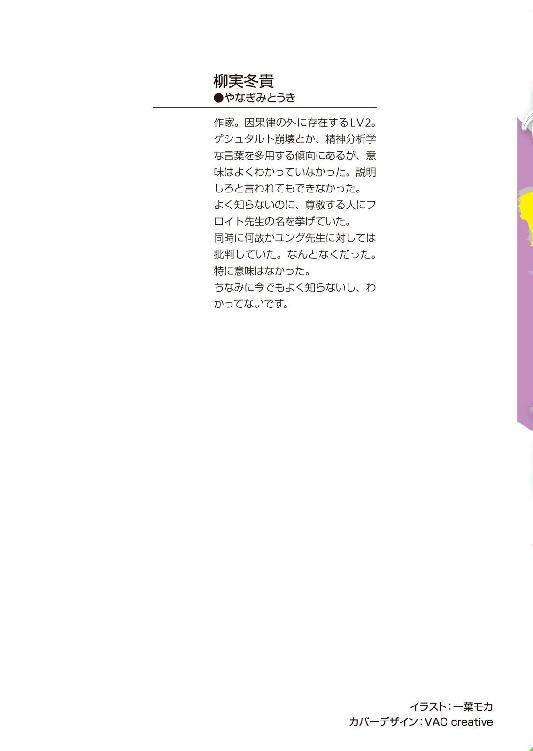
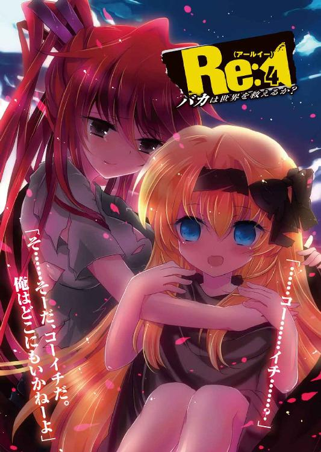
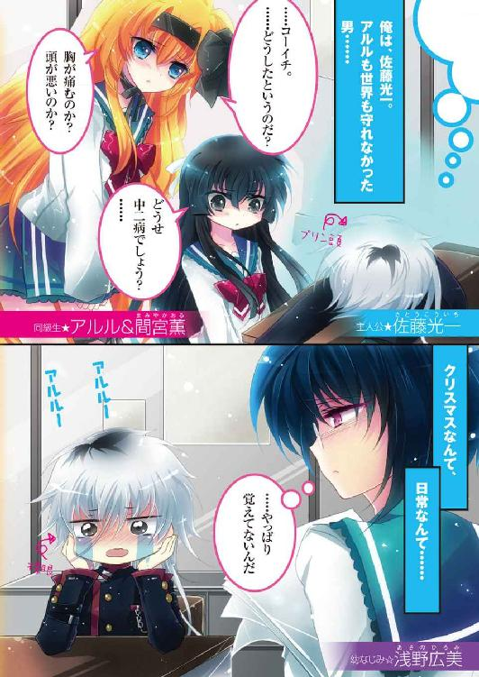
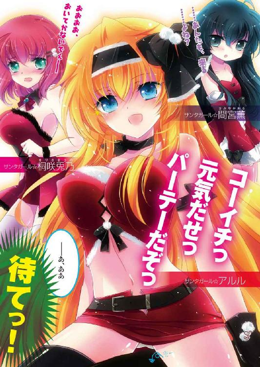
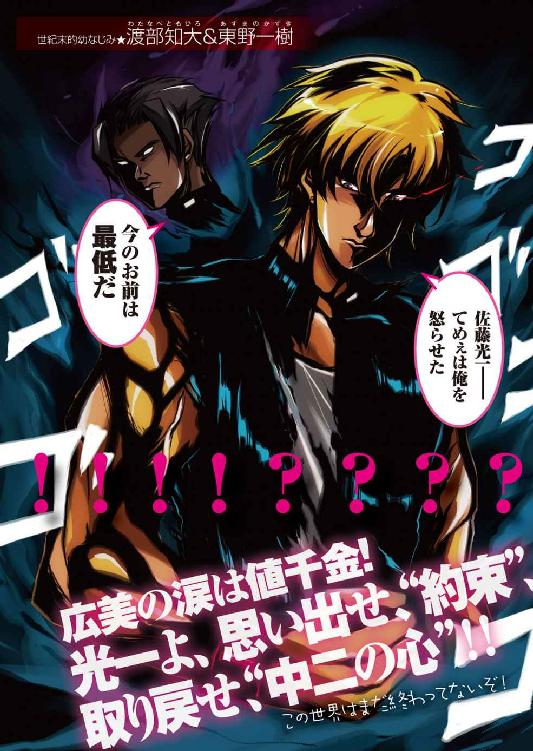

Re（アールイー）：４
バカは世界を救えるか？
柳実冬貴

富士見ファンタジア文庫
本作品の全部または一部を無断で複製、転載、配信、送信したり、ホームページ上に転載することを禁止します。また、本作品の内容を無断で改変、改ざん等を行うことも禁止します。
本作品購入時にご承諾いただいた規約により、有償・無償にかかわらず本作品を第三者に譲渡することはできません。
本作品を示すサムネイルなどのイメージ画像は、再ダウンロード時に予告なく変更される場合があります。
本作品は縦書きでレイアウトされています。
また、ご覧になるリーディングシステムにより、表示の差が認められることがあります。
口絵・本文イラスト 一葉モカ
Contents
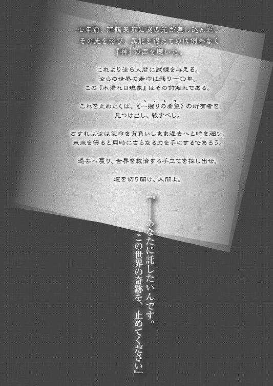
プロローグ
季節は冬。
一二月も後半に差し掛かり、吐く息も白く濁り始めてきた。昇天坂の並木も色を変え、茶一色に染まっている。登校する生徒達は手袋とマフラーを必需品にして、朝の寒さに耐えながら長い長い昇天坂を上っていた。
「............」
佐藤光一は、その光景を教室の窓から憂い気に............。
否、憂い気ではない。
ぼけ～っとであった。
光一はぼけ～っと、窓の外を焦点の合わない目で見ていた。
教室内にいる生徒達は、何もかもがいつもと違う光一のことを観察している。
変なのは毎度のことだが、今の彼は「変」というよりも、「妙」だった。
ここ最近の光一は、ひと味違う。
「............」
髪の手入れは行き届いておらず、美しかった長髪はぼさぼさ、さらに脱色を怠っていたせいで頭頂部が黒くなっている......いわゆるプリン頭だ。服装はいつもの改造長ランだが、粘着テープローラーで埃を取っていないせいでとても見窄らしい。指輪や鎖の類も装着していない。極めつけは瞳の色である。カラーコンタクトをつけていないため、凡人まっしぐらな上に、目の下にうっすらと隈ができあがっていた。
そんな光一を見て、クラスメイト達は、
（......パンダみたい）
（......パンダだな）
（......パンダカラー）
（スカンク......）
（パンダ......）
一様にそんな感想を抱いていた。
いつもなら身なりを間違った方向へ徹底して決めている光一が、今では口元から涎でも垂れ流すような勢いで窓の外をほげっと眺めているのだ。クラスメイトに衝撃が走らないわけがなかった。
シン、と静まり返った教室内で、二人の女生徒がひそひそと囁き合い始める。
「日に日にカビ臭くなっていくね......佐藤君、ここ最近なんかあったのかな？」
「いや、確実に何かあったでしょ、あれは」
「だよね。おかしいよね。絶対に変だよね。何があったのかな？」
わくわく顔で聞いてくる普段は大人しい女生徒に、勝ち気そうな女生徒は真剣に考えてから話にのった。
「ひと月くらいあんな感じよね。失恋か......もしくは夢破れたか......私は後者と見るわね」
「夢破れたって、やっと彼の脳内が現実に帰還したってこと？」
「さぁ？ それにしては中途半端っていうか......まだ妄想と現実の狭間を行ったり来たりしてる感じ？ プリン頭がそれを如実に表してるよね」
「白髪部分が妄想で、黒髪が現実？」
「現実がだいぶ浸食してきてるよねぇ。でも、なんか彼がまともになるとちょっと残念な気がしないでもないと思っている私がいるわ」
「えー、私まともになった佐藤君ってちょっと見てみたいかも」
「見てみたい以前に、まったく想像できないわ」
笑うに笑えない。光一の今の状態は、まさにそんな感じだった。
クラスメイト達が彼女らと同じような推測を好き放題に飛び交わせている。最近では、光一の変化の実況が毎朝の恒例行事みたいになっていた。
もちろん光一の耳に彼らの声は届いていない。
死んだ魚のような目でふらふらと揺れ動くだけだった。
「......コーイチ」
心配そうに、アルルが光一の横でぽふぽふとプリン頭を撫でる。
「最近ずっと元気無いぞぅ......どうしたというのだ？」
「............」
「お腹の具合が悪いのか？ 胸が痛むのか？ 頭が悪いのか？」
頭が悪いのは確実だった。アルルは魂が抜けたような状態の光一を前にして、「う～～」と唸りながら涙目になった。
「放っておきなさいよアルル、どうせいつもの中二病でしょ？ しばらくすればケロッとまた元通りになってるわよ」
アルルの隣でむっつり顔の間宮薫が溜息を吐く。こんなことを言っている薫だったが、内心心配しているのが見え見えで、視線は光一のことを案じていた。
短い期間ならば、いつもの気まぐれか自爆してへこんでいるかのどちらかで済ませられるのだが、さすがにひと月ともなると長い。薫も何があったのか問いただしてみたのだが、光一は答えようとはしなかった。
「コーイチ～っ、こっちを向いてくれ！ お前が元気が無いとボクは寂しくて死んでしまうぞーっ！」
アルルが涙ながらに光一に縋り付く。
と、彼女の言葉に、光一がゆっくりと首を回して、まるで生き人形か何かのような動きでアルルの顔を見た。
「死......ぬ......？」
「コーイチ！ やっとボクを見てくれた！」
瞬時に、パァッとアルルに笑顔が戻る。
転じて光一は、アルルのその笑顔を視界に入れた瞬間、ぶわっ......と、滝のような涙を流し始めた。
「コ、コーイチ!? どうしたっ!? やっぱりどこか痛むのかっ!?」
「アルル......アルルぅぅ......」
尋常じゃない涙の量に、アルルが慌てて光一の肩を摑んでがくがくと揺らす。
「富士の病なのか!? 日本一なのか!? しっかりしろコーイチ死んじゃ嫌だぞコーイチ！」
アルルがどんなに声をかけようと、光一はしくしくと涙するだけだった。
そんな状態の光一を、少し離れた場所で東野一樹と渡辺知大が机を挟んで心配そうに眺めている。
「光一の奴どうしたんだろうな。......ここ最近のあいつ見てるといたたまれねぇぜ」
「うむ。篠塚の言う通り中二病という名の不治の病ならばよかったのだが、あれはどう見てもその類ではないな」
「何があったか聞いても答えねぇし、見てらんないぜ正直」
「幼馴染としては見過ごせんな」
二人は何か悪巧みでも思いついたのか、顔を見合わせてうんと頷いた。
光一は皆に心配されているにもかかわらず、沈黙を保っている。
何故落ち込んでいるかなんて、言えるわけがなかった。
この世界が二度目の世界で、アルルが一度殺されていたなんてこと、言えるわけがない。だから光一はこうして全てを一人で抱え込み、円形脱毛症寸前まで精神をすり減らしているのだった。
いわゆる鬱状態である。普段からアニメやギャルゲーの鬱展開に弱かった光一にとって、リアルでのこの状況は耐え難いものがあった。メンタル面が弱いんだか強いんだかよくわからない男である。
アルルや薫、一樹やチダイに囲まれてプリン頭をいじられつつ、励まされている光一。
そんな彼を、心配気に見つめる少女の姿があった。
「............」
もう一人の幼馴染、浅野広美だ。
広美はふと、教室内のカレンダーに目を移した。
日付は一二月の後半。
終業式間もないこの時期になると、広美の胸はいつもざわつくのだ。
一二月のイベントと言えばただ一つ。街はイルミネーションに彩られ、人々がどことなく浮き足立つ有名なお祭り騒ぎである。
広美は寒々しい窓の外に目を移してから、もう一度光一の横顔を見た。
そして、変わらず激しく落ち込みまくっている光一に、小さく溜息を吐くのだった。
Battle １ 世界は廻るよ何度でも
光一がプリン頭になる丁度ひと月前。
《幸福夢幻》の事件から二日後のシェード司令室。
能登原明日菜の告白を前にして、光一は司令室で硬直していた。
「この世界は、一度《一握りの希望》によって巻き戻されている」
あらかじめ予想していた答えだったのに、聞いた瞬間の衝撃は思いのほか大きかった。
「《一握りの希望》を発動させたのは──この私だ」
胸の中に、ジグジグと膿むような得体の知れない痛みが生まれ、全身の体温を奪っていく。握っていた拳から力が抜け、脱力が襲う。なんだか自分の成そうとしてきたことを真っ向から台無しにされたような感覚に、虚しさを感じた。
動揺する光一とは打って変わって、明日菜は落ち着いた様子で目を閉じている。
《一握りの希望》を発動させたということ......それはつまり、能登原明日菜がアルルを一度殺しているということに他ならない。
そしてこの世界は、一周目ではなく、二周目の世界。いや、もしかしたら三周目、四周目という可能性もある。もう何度もアルルが殺されているという可能性は否定できない。
光一もこの仮説を考えなかったわけではない。二周目、という結果に対しての覚悟は無かったわけじゃない。けれど、まさかシェードのリーダーともあろう者がアルルを殺していただなんて、信じたくはなかった。
信じたくなかったが、今でも頭に焼き付いて離れないビジョンがあった。
夢の世界で《幸福夢幻》を用いて見た、明日菜の姿。
黒き異形と化した明日菜が、アルルの首を絞めていた、あの光景......。
同化した自分の心に響いてきた、途方もない悲しみ......。
「......どうした、コーイチ君」
明日菜の声にハッとして、光一は顔を上げた。
我に返って明日菜の方を向くと、彼女は穏やかに笑っていた。
「私を、殺さないのかい？」
表情は穏やかなのに、そのストレートな問いには深い苦悩が含まれているように感じられた。まるで自分から殺してほしいと懇願しているようにも思える。
「私は君の守るべき者の命を一度奪った女だ。それだけではない。世界を巻き戻し、人々の経験や記憶を奪い去った」
「............」
「私は一度世界を滅ぼしたんだよ、コーイチ君」
自虐としてではなく、真実として明日菜は言葉を吐く。
「私は君の敵だ」
「............」
「君もそう思うだろう？ 私はそう思う」
にっこりと、明日菜が微笑みを向けてくる。
光一には彼女の問いが、「そう思え」という命令に聞こえた。
憎しみをぶつけろ。
化け物と蔑め。
人殺しと罵声を浴びせろ。
そして私を殺してみせろ──佐藤光一。
微笑みの中に含まれた負の願いが、胸にまで届いてくる。
光一には、明日菜の考えていることが手に取るようにわかった。《幸福夢幻》の一件で明日菜の精神に入り込んだため、光一にはわかるのだ。彼女がどういう人間で、どういう思想のもとに行動しているのかがわかってしまうのだ。
だからだろう。
光一には、明日菜の願いを受け入れることはできなかった。
「......違う。あんたは俺の敵じゃない」
「？」
「確かにあんたは、アルルを殺したのかもしれない。でも......あんたはアルルを殺したくて殺したわけじゃない、そうだろう？」
「......夢の中で私の記憶を見たのだったな、君は」
「あんたは一度目の世界で必死にアルルを守ろうとしていた。何でそんなあんたがアルルを殺さなきゃいけなくなったのかなんて俺は知らんが......少なくとも、夢の中で見たあんたの決意だけは本物だった」
《幸福夢幻》をコピーして使用した際、光一の中には明日菜の感情も流れ込んできた。
「あんたは誓っていただろう？」
「............」
「世界が滅んだとしても、アルルだけは守ってみせるって」
夢の中で聞いた慟哭。途方もない決意。
黒い渦の中で泣いていた獣の姿が、光一の頭の中を再び過ぎる。
「あいつの首を絞めていた時も、あんたは必死こいて抗おうとしていた。自分の胸を搔き毟るような想いで、運命に立ち向かおうとしていた」
「............」
「だから、俺にはあんたが敵とは思えねぇ。今もアルルのことを大切に思ってる。たぶん、あんたは俺と──」
光一が真剣な眼差しを向けながら、「同じだ」と言いかけた、その刹那、
「──ダメだ！ ソれジゃあダメだ......ッ！」
顔を手で隠していた明日菜が、不気味にしゃがれた声を吐きながら、一瞬にして光一の眼前に肉薄した。
光一に彼女の動きを目で追うことはできなかった。黒い風のようなものが走ったように思えたその直後には、明日菜が目の前にいたのだ。
漆黒の瞳を向けて歯を食いしばる明日菜は、光一の胸ぐらを摑み、激しく締め上げた。
片腕だというのに、凄まじい力だった。うめき声すら上げられず、光一は自分の胸ぐらを摑み上げる腕を見た。
（なん、だ......、こ......れ......！）
光一が驚きに目を見開く。
明日菜の右腕には包帯が巻かれていたが、皮膚が歪に隆起しているのが布越しからでも見て取れた。腕の中に巨大な虫でも蠢いているかのように、皮膚と筋肉がバキバキと音を立てて脈動している。
光一が思わず悲鳴を上げそうになると、明日菜が漆黒の瞳を鋭く細めた。
「ソんなこトで世界を救えルと思ってイるのか！ 彼女を救エると本気で思っテいるのか、アァ!?」
獣の唸り声が、光一の頭蓋を震わせる。今の明日菜の声は、骨に響いて恐ろしい。
腕の脈動はますます激しくなり、荒ぶっていく。顔を近づけて吐かれた明日菜の息は、影がそのまま物質化したかのような奇妙な黒色をしていた。
光一は怯みこそしたが、足が地面から浮いた状態であっても、明日菜から目をそらさなかった。その光一の視線が気にくわなかったのか、明日菜は胸ぐらを摑んだまま光一を地面に思い切り叩きつけた。
「か──ハぐッ......っっ!!」
背中から地面に激突した光一の息が詰まり、内臓が浮いたような痛みに悲鳴が漏れる。天井の蛍光灯が明日菜の覇気で砕け、常闇が辺りを包んだ。
何も見えない。目の前の、不気味に光る獣の双眸以外は、何も。
「フざけルな......敵とは思エないダと......？」
獣の双眸が細く尖り、どす黒い息が光一の首もとに吹きかけられる。
「お前は......ワタシの記憶を見たンだろウ!? アレを見てもワタシを敵でハないと判断するといウのか!? 甘ったレるなよ青二才ガ！ ワタシはお前の敵でナければならない、お前はワタシの敵でなけレばならない──そうでなけれバ間違いなノだ！」
怒号かと思われたその叫びは、慟哭に近かった。
光一は明日菜の自分を憎めと言わんばかりの言葉に、激しい憤りを覚えた。
「......ッ、敵でなければ間違いだなんて答え、誰が決めたんだ！ 俺の敵は、っ、俺が見定めるッ！ 勝手に決めんじゃねぇよ!!」
「......もう一度言ウ、ワタシは！ アルルを！ 殺したのだ！ お前が大切に思う存在の首をへシ折ったのダ！ これが敵以外の何だと言うンだ！ ええ!?」
「わかってるさ！ 俺は常に非道だったあんたが憎い......あんたのことは好きじゃねぇ！ あいつを一度殺したってこともわかってる！ でも......それでも、アルルを守ろうとしていたあんたは、絶対に俺の敵じゃねぇだろうが！」
「わカってないっ！ お前はわかってなぁァァいッ！」
明日菜は怒号を浴びせた直後、光一の真横の床を殴った。
大理石の床は砕け、辺りに破片が飛び散り、光一の頰をわずかに切り裂いた。
半身が黒き異形と化した明日菜を、光一は見つめ返す。
「............それがあんたのネメシスの、アンチテーゼなのか？」
「ワタシの《怪物》は使用し続ければ肉体を浸食し始める。このまま連続使用を続ければ、いずれワタシは文字通りの怪物と化すだろう」
明日菜は、右腕を押さえて光一から距離を取った。
よろよろとふらつきながら、中央のデスクまで下がり、息を落ち着かせる。呼吸が穏やかになると共に、少しずつ肉体の変異が治まり、明日菜に人間味が戻ってきた。
「......肉体だけではない、精神もだ。私の《怪物》は、自我をじわじわと疫病のように奪っていく。使う度に浸食は加速し、いずれ私は《怪物》を使用していなくとも、自動的に異形の化け物となるだろう......自我を失い、殺意の塊となった哀れな化け物に......！」
顔を手で覆いつつ、明日菜が自嘲的な笑みを浮かべる。
「言い換えれば、《怪物》という能力そのものが......アンチテーゼなのだよ」
《怪物》が暴走した時の光景は、光一も夢の中で確認している。黒い渦のようなモノ全てが、恐らく明日菜本人だったのだろう。
凄まじい力であることは間違いない。
「コーイチ君......これは命令だ。私を味方だとは思うな。もしも私が《怪物》を抑えきれなかったその時は、暴走するよりも前に......」
私を殺せ、とでも言うのかと、光一は思った。もちろんそんなことを頼まれても頷けるわけがない。敵でない者を殺すことなど、言語道断。光一のポリシーに反することだ。
が、明日菜が次に口にしたことは、光一の予想とは違うものだった。
「......アルルを連れて、この街から即座に脱出しろ」
「？ 逃げろって......あんたはどうするんだ？」
「放っておけ。君に私をどうにかできるわけがない」
「だ、だが」
「いいか、間違っても私を助けようなどと......殺そうなどと思うな。その時が来たら何も考えず、アルルを連れて逃げるんだ。できるだけ遠くへ」
有無を言わせず、明日菜は鋭い眼光を向けて命令した。
薄闇の中から、人外の白い瞳孔が細く光っている。滅多に使われることのない人間の生物としての警戒本能が発動し、光一の全身を身震いが襲う。
光一はこの時、直感的に理解した。
ああ、この目の前の女は、俺には倒すことができない......と。
「コーイチ君......《怪物》の最大のアンチテーゼはね......肉体の変異でもなく、自我の崩壊でもない」
震える光一を前にして、明日菜は獣の瞳孔を向けたまま、己に課せられた最悪の『呪い』を吐露する。
「《怪物》のアンチテーゼ──それは、『人間には絶対に殺せない』、というものだ」
一瞬、何を言っているのか光一には理解できなかった。考えてみても、やはり答えは見つからない。
「......人間には、殺せない？」
「そうだ。相手が人間である限り、私は誰にも殺されることはない。ナイフや銃といった無機物であっても、人の意志が籠っていればそれは人の力......例外は無い」
淡々と語る明日菜は、闇の中で頭を抱え、今も自我の安定に精神をすり減らしていた。
人の存在を怪物へと昇華させるというだけでも強力だというのに、『人には殺せない』だなんてバカげている。そんなの反則だ。ネメシスも人の意志が籠もったものである以上、明日菜を殺すことができないことになる。
あり得るのだろうか、そんな反則な力が......。
「信じられないようだね。じゃあ、このナイフで私の心臓を刺してみるといい」
突然、明日菜はデスクに置いてあった金属製のナイフを差し出してきた。
大いに狼狽する光一。
「な、何を言ってんだ!?」
「できないか。ならばこうしよう──」
直後、明日菜は突然ナイフを手の平で一回転させて、逆手に持ったまま一切の躊躇なく切っ先を心臓に押し沈めた。
光一はその光景を見ていることしかできなかった。ナイフは明らかに肉を刺し、心臓に届いている。真っ赤な血しぶきが上がり、大理石の床が深紅に染まっていく。
思わず口元に手を当てて、喉の奥からこみ上げるものに嗚咽を漏らした。
明日菜は表情すら変えずに刺さったナイフの柄を指先でコンッと弾いてみせた。
「このネメシスは特殊でね......アンチテーゼが先払いと後払い、二つある。私は能力を得た瞬間に死ねない身体になり、精神すらも日に日に浸食されている」
「............」
「私にもまだ人間としての自我が残っているからね......《怪物》にとって能力者本人もまだ人として認識されているらしい。本能以外で自殺をするのは人間だけだしね。皮肉なもんだろ？ どれだけ身体や心を浸食されようが、こんなにも血潮は赤いんだ」
笑いながら、明日菜はナイフを胸から引き抜いた。
ますます血しぶきが舞い、赤い雨が司令室に降り注ぐ。光一は蒼白になった顔をなんとか上げて、明日菜の方を見た。
明日菜は、少しだけ悲しそうに表情を曇らせて、床を流れる血を眺めていた。
「......君に私は殺せない。君に私は止められない。いずれ私は心を喰われ、完全な《怪物》となってこの街を呑み込むだろう」
夢の中で見た黒い渦が全てを覆う光景は、確かに過去に一度起こったことなのだ。
明日菜は目を閉じて、過去の悲痛な記憶を胸に宿してから、光一を見た。
「私は、君の敵だ。君は私を恐れ、憎み、畏怖しなければならない。そうでなければならない」
光一はようやく明日菜が言い続けていた言葉の真意を知る。
明日菜にとって、一番恐怖すべき存在は自分自身だったのだ。アルルを殺してしまう可能性が一番高いのは自分自身。自分が一番危険である以上、仲間や部下に自分のことを敵と思わせておいた方が、もしもの時に都合がいい。疑い、警戒していればすぐに逃げることができる。守護対象を守ることに全力を尽くすことができる。味方だと思わせることに、メリットは無い。
光一は、そんなのは間違っている、と思いながらも、明日菜の言葉を否定することができなかった。否定しようと思って、止めてしまった。
明日菜がこちらを向いて、泣きそうな顔で懇願していたからだ。まるで助けを求めるかのように、願いを伝えるかのように、悲痛な表情を浮かべていたのだ。
「......佐藤光一」
「......っ......！」
「もしもの時は、君が《一握りの希望》を連れて逃げるんだ。それがシェード特務護衛班としての、君の役目だ」
明日菜はシェード司令として、光一に命ずる。
そして最後に、微笑みながら、
「あの子を頼んだよ。君は、約束を守る男なんだろ？ ......な？ コーイチ、くん」
司令としてではなく、能登原明日菜個人として、光一に願いを託した。
光一が去った後の司令室で、明日菜は己の肩を抱きながら、デスクの前で必死に戦っていた。ここ最近は肉体の変異は停滞していたはずだったが、《幸福夢幻》の一件で状況が変わった。
本来なら夢の世界でネメシスを使おうがアンチテーゼは発生しないはずなのだが......《怪物》だけは例外らしい。現実世界で目覚めた瞬間、浸食が再開した。
最初の変異は髪の色だった。次に瞳、腹部。そして夢の世界での使用によって浸食は加速し、右腕と左足を《怪物》に持って行かれてしまったのだ。
浸食は今も止まらない。冷静になれと我に命じても、己の中の獣には届かない。
明日菜は瞳に涙を溜めながら、胸を押さえて堪え忍ぶ。
何分も。何時間も。
......いつからいたのだろうか。
気がつけば、特務班班長、斑坂介が闇の中で明日菜を見下ろしていた。
口を一文字に結び、冷たい眼差しを明日菜に向けている。
明日菜は坂介を見て、安堵の溜息をついた。
「......来た......のか......遅いぞ」
「............」
「君の仕事の、時間かもしれん......」
「............」
「もしもの時は、頼んだぞ......私は、君にしか......」
縋りつくように、荒い息で坂介に言う。
坂介は、苦しみにもだえる明日菜のそばで片膝をつき、包帯に巻かれた彼女の右腕に触れた。
「いつからだ」
「一昨日......から」
坂介は、返答を聞く前に腕の包帯を解いた。
直後、腕の形状をしていたソレは形を崩し、無数の黒い触手となって地面を這った。よく見ると、その触手には人間の手のような関節がいくつもついていて、先には指が何本も生えている。その指をよく見ると、実際には指ではなく、それも小さな腕のように見えた。
さらには肩口から後腕部にかけて、巨大な獣の目のようなものが生えていた。その眼球はギョロギョロと辺りを見回してから、坂介の顔を捉えた。
同時に、明日菜はナイフを左手に持ち、眼球を一気に突き刺した。
明日菜の中の獣が悲鳴を上げる。異形の右腕が痛みにのたうち回るのを、明日菜は左腕で必死に押さえ込もうとした。
顔から血の気はとうに失せ、汗は雫を作って滴り落ちている。
弱々しく息を吐きながら、明日菜は坂介に視線を送った。
そして、口が自然と言葉の形を描く。
殺してくれ......と。
しかし言葉を言い終える前に、坂介が羽織っていたコートで明日菜の身体を包み、後ろから彼女を右腕ごと抱きしめた。
「......なぁに言ってんだ、司令さんよ」
坂介は痛いほどに力強く、明日菜を抱きしめる。
その抱擁にあるのは、義務感。
そして、わずかな優しさだった。
「甘ったれてんじゃねぇよ、お嬢ちゃん」
「......っ」
「今殺してくれだぁ？ そいつぁできねぇ相談だ。あんたは俺と約束しただろーがよ。必ず俺が人を殺せるようにしてやるって。そのためにはまだまだやらなきゃいけねーことがたくさんあんだろーが。この程度で弱音吐いてもらっちゃ困るぜ」
「......く......」
「それにお前さんの大切なアルルはどうすんだ。ここで明日菜ちゃんが死んだところで、あの子が救われるわけじゃねぇんだぞ。あの子は結局また、誰かの手によって悲劇を繰り返すことになるんだ。お前さんは、あの子を救うために全てをかけるって誓ったんだろう......？ あの子の救いってのは何だ？ お前さんの死か？ ......違うだろ」
その坂介の言葉に、明日菜の生気が若干戻った。同時に右腕の形状も、緩やかではあるが復元されていく。息づかいも安定に近づき、胸の鼓動もだいぶ落ち着きを取り戻した。
「......安心しな。お前さんが本当に化け物になっちまった時は、俺がきっちり殺してやるからよ」
坂介は耳元で、安心させるように言った。
「でも、まだだ。俺が仕事をすんのは、今じゃねぇ」
「............」
「......だからがんばれ、明日菜」
「............ああ......わかってるよ、坂介」
坂介の叱咤に明日菜は答え、なんとか平静を取り戻した。
明日菜の身体は人としての形を復元したが、黒化した右腕は元に戻らなかった。少しでも気を抜けば、また先のように形状を失って再構築と増殖を延々と続ける化け物に元通りだ。
能登原明日菜のネメシス、《怪物》は、文字通り能力者を滅びの怪物へと変化させるというものだ。『人間には殺されない』というほぼ無敵に近い性能を持ち合わせているのだが、使用時には自我をほとんど失うため、コントロールは非常に難しい。
怪物と化した明日菜の力に、際限は無い。
ひたすら対象を殺害し、陵辱し、捕食し、自らを増殖させる。果てには、あらゆる物を滅ぼしてしまう。
この力は、まるで伝説に登場する、世界を蹂躙する化け物そのものなのだ。
坂介は明日菜の右腕に包帯を巻き直すと、彼女に肩を貸して抱き起こした。
「す、すまない......」
「いいってことよ。それよりも、明日菜ちゃん」
「......うん？」
「──また胸デカくなった？ さっきからめっちゃ揉んでんの気づいてた？ つかこれも《怪物》のアンチテーゼかなんかですか？」
いやぁ計り知れねぇな、と坂介が場の空気を茶化した。
胸を揉みしだきながらセクハラオヤジよろしく笑っている坂介の顎に、明日菜は右腕の肘を炸裂させた。
ンギッ、という悲鳴と共に坂介が地面に沈む。
「調子に乗るな」
「お、おいィ？ 変異後の右腕で肘鉄とか......普通に死んじゃうでしょ？ 今一メートルくらい首伸びたぞ」
「......そんなことより、オーロラの動向は摑めたのか？」
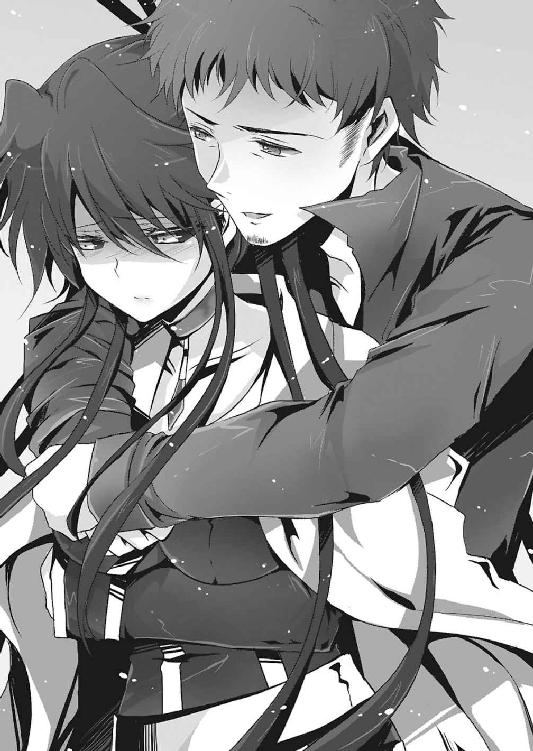
明日菜は制服の身なりを正し、若干右腕を庇いながら、司令室の椅子に座った。
仕事の話となると坂介も顔を引き締めた。
「......オーロラに潜入捜査中の月陽から連絡がきた。近々、オーロラで大規模な動きがあるらしい。詳細はわかっていないが、警戒を強めた方がいいだろうな」
「曖昧すぎる。動きがあると断定しているのに、詳細がわかっていないなどという結果があるものか。......最終手段の内部調査の結果はどうなった」
「続行中だぜ。《審判者の指切り》の契約は絶対だが、それでも月陽の動きは怪しい。......《幸福夢幻》の能力者、イリーナ・ベラヴィナを捕縛したのが月陽なのは聞いているな？」
「報告書は読んだが、あからさまに捏造だ。偶然通りかかった廃病院に偶然能力者が眠っていたなんてことがあるわけないだろう。......君のことだ、奴の後をつけていたんだろう？」
「まあな。月陽が動いたのはあんたが仮眠を取る一時間前だ。その頃から追跡を開始したんだが......」
「で、収穫は？」
「あった。早朝、廃病院を訪れた月陽は確かに誰かと会話していた。俺は直接病室で会話を聞き、防諜班の一人に、ネメシスによる建物外からの録音と録画を試みさせようとした」
「............その口ぶりからすると」
明日菜が言うと、坂介は苦虫を嚙みつぶしたような顔をした。
「お察しの通りだ。録画には月陽とイリーナしか映ってはいなかったし、会話も、月陽の独り言でしかなかった。それとな......俺は直接会話を聞いていたし、相手の顔も確認していたはずなのに、不思議と思い出せねぇんだよ」
「思い出せない？」
「月陽の会話相手の顔と、声がな。もやがかかったみてぇに思い出せねぇ」
右手に拳を作り、コツコツとこめかみを叩いて坂介は舌打ちをした。
明日菜は目を細めて、右腕を強く握りしめた。
──月陽奏麻、元オーロラの巫女として活動していた凶悪な能力者。そんな女がシェードに所属している理由は、単純に決着がつかなかったからだ。
五年前、シェード本部に単身で乗り込んできた奏麻は、明日菜の《怪物》と戦闘を試みた。明日菜は《怪物》の暴走を抑え込みながら戦闘を続けたが、結局戦いは平行線。奏麻のネメシス《魔女》との決着はつかなかった。
このままでは《怪物》の暴走は免れない。
明日菜がそう思った時、奏麻は戦闘を停止。
いきなり妙な提案をしてきたのだ。
『戦闘を止める代わりにわらしをシェードに入れてくらさい。もちろんそっちも条件を提示してくれてかまわないれす。信用を得られるならどんなことれもＯＫれすよ♪』
あからさまに怪しいその提案を、明日菜は受け入れるしかなかった。あのまま戦いを続行していれば一度目の世界と同じ末路をたどりかねない。明日菜は奏麻に《審判者の指切り》の契約書にサインさせて、シェードに入隊させるしかなかった。特務防諜班班長というポジションも、奏麻のたっての希望によって提供せざるを得なかったのである。
奏麻は明日菜にとって脅威ではあったが、首輪をつけた状態に置いておけるのであれば、これ以上の状況は無い。敵のままのさばらせておくよりは、身内で監視できる方が効率がいい。契約書による条件付けをさせて企みなどさせなければいいのだから。
全ては明日菜の手の平の上にある。
そのはずだった。
「何かがおかしい......藤堂凪、石崎朝顔、イリーナ・ベラヴィナ......この三人が何者かによって力の解放の仕方を教えられたのは確かだ。しかし三人とも教えてもらった相手の顔と声を覚えていない。記憶の中をネメシスで探っても、その部分だけがもやがかかっていて確認することができなかった。月陽が接触した人間が、昨今の事件全てに関わっていることは明らかだ」
「......お前さん、覚えはないのか？ 一度目の世界で」
「............無い。恐らくオーロラのトップか幹部の一員なのだろうが......一度目の世界でのオーロラのトップはただの狂った聖職者だったはず。こんなネメシスを使った者はいないし、ネメシスの本当の使い方、などといった噂や出来事は存在しなかった」
つまりは、明日菜にとっても、この一連の出来事は記憶と経験の範疇を超えているのだ。無論、一度目の荒廃した世界と、今のこの世界とではあまりに状況が異なるため、予想できない出来事が起こるのは仕方がないこと。
しかし、それにしても妙である。ネメシスの効果を強化、あるいは引き出すことのできるネメシスなど本当に存在するのだろうか。
藤堂いわく、その人物は『本』を片手に持っていた。
朝顔いわく、その人物は『神』である。
眠り続けるイリーナの記憶でも、その者は『神』と同等の扱いがされていた。
『神』と言えば、能力者ならば誰でもある出来事を想像する。
『木漏れ日現象』
それを引き起こした張本人が、能力者にとっての『神』に他ならない。
（『木漏れ日現象』......確か、佐藤光一がネメシスを得た時に発生した特異点は、前例の無いイレギュラーなものだった。まさか、佐藤光一もこの一件に何か関係しているのか？）
深読みしすぎだろうかとも思ったが、十分に可能性はある。
といっても、明日菜は光一に疑いをかけているわけではない。明日菜は、光一が裏切ることはないと確信している......というより裏切らないことを知っているのだ。
「引き続き防諜班の一人に最終手段の監視を続けさせろ。......それと君は、佐藤光一の監視についてほしい」
「？ まあ可能性が無いわけじゃねぇが、あいつとこの件の関連性は低かねぇか？」
坂介が明日菜の考えを読んだ上で口を挟んだ。
明日菜は頰を伝う汗を拭い、額に手を当てて引きつった笑みを口元に浮かべた。
「さっきの発作はなんとか耐えられたけど......やっぱり、もうあまり時間が無い。浸食はすでに止められないレベルにまで達している。......今は、藁にも縋りたい気分なのよ。どんな小さな可能性も見逃すわけにはいかないの」
坂介は細かく痙攣する明日菜の右腕を見てから、いまだ辛そうに汗の雫を作り続ける顔を見た。
坂介は舌打ちをして、むしゃむしゃと片手で頭をかきむしった。
「わぁったよ、全力で当たらせてもらうぜ。そんかし、へばんじゃねぇぞ？ 再三言うが明日菜ちゃんはまだ俺に復讐をさせる義務がある。俺がお前さんに協力すんのはそんだけの理由なんだからよ。そこんとこ死んでも忘れんじゃねぇぞ」
「は......は、私は死ねないから、忘れないさ」
自虐のような冗談を受け止めて、坂介は司令室を去った。
残された明日菜は、椅子の背もたれに体重を預けて、司令室の真っ暗な天井を見上げた。
精神の激しい揺れと肉体の疼きを抑え込みつつ、疲れ果てた顔で目を閉じる。
そして、脳裏に残った過去の記憶を掘り起こした。
この二度目の世界において、明日菜にしか残されていない、一度目の記憶を。
「......アルル......」
Replay １ 怪物と少女
曇天を駆ける赤い稲妻は、いつだってこの世の終わりを思わせる。
真っ赤な稲光を浴びて、明日菜は一人佇んでいた。
髪を吹き込んできた風に靡かせて、遥か彼方の空を仰ぐ。冷水のように澄んだ瞳は、悲しみも怒りも内包せず、稲光の深紅を濁り無くそのまま映し返していた。
彼女の衣類は、まるで浮浪者のようにボロボロだ。肩にかけただけの裾の長い革製のコートは、埃と垢に塗れて赤褐色に汚れている。穿いているジーンズも意図的に傷つけたわけではなく、乱暴な扱いによってビリビリに破けていた。
この世界の空気は埃と死臭に濁っていて、深呼吸をすれば激しく咳き込んでしまうほど汚染されていた。太陽の光が地上を照らしていたのはもう何年も前の話だ。
空は常に雲に覆われ、歪な稲妻が竜のように飛びかっている。
その雷鳴は、まるで世界そのものの悲鳴のようで、生きる者に滅びの予感を植え付けるのだ。
──雨鶴来市の『木漏れ日現象』から、既に三年の月日が流れていた。
光を浴びた者は眠りにつき、眠りから覚めた者はネメシスと呼ばれる異能に目覚め、例外無く神の声を聞いた。
一〇年後に世界は滅ぶ。そしてその滅びを止めたくば、《一握りの希望》を持つ人間を捜し出し、殺害すべし。神は能力者達にそう告げた。
「............」
一〇年。神は確かにそう言った。
しかし三年が経った現在、すでに世界は限界だった。
『木漏れ日現象』の直後、世界は均衡を失った。雨鶴来市に現れた能力者の暴走は一向に収まらず、政府は隠蔽不可能な状態までに追い込まれた。ネメシスの力は、常軌を逸している。政府の力をもってしても能力者の暴走を止めることはできなかったのだ。
世界は一人の能力者によって、ほぼ修復不可能なまでに破壊されてしまった。現代で開発可能なあらゆる兵器を無限に生成し、操作することのできる《第三次世界大戦》と呼ばれるネメシスによって、世界に無数の核が撃ち込まれたのだ。
無事だった場所は日本、特に雨鶴来市だけだった。何故雨鶴来市が被害を免れたのかはわかっていない。ただ、ぽっかりと雨鶴来市だけが、核の炎や放射能の被害を受けずに済んだらしい。
いずれにしても、時間の問題だった。完全に機能を失った狭い都市では、食糧の供給もなければ、水も満足には得られない。市民は暴徒化し、食糧と水をひたすら奪い合った。
結果は、ご覧の有様である。ネメシスによる暴動によって建物は倒壊し、空気は汚染され、そこら中を死臭が漂っている。全て、『木漏れ日現象』から三年足らずで訪れた現実だった。
「............」
明日菜は自分の足下に転がっている無数の能力者達を踏み潰しながら、廃ホテルのロビーを歩く。ホテルのロビーには数え切れない死体の山がある。皆、皮と骨しか無いほどにやせ細っていた。この三年間を生き延びた人間は皆こんな身体をしているのだ。
彼らの半分は、明日菜が自ら手を下した者達だった。もう半分は、明日菜がこの場所を訪れた時から既に死んでいた。
明日菜が目指しているのは、ロビーの奥にあるエレベーターだ。もとは高級ホテルだったのだろう。少々悪趣味だが、豪奢な装飾が施された金色のエレベーターが行く先に見える。
エレベーターの扉は開いていた。目的の人物はその扉の向こうにいる。
立ちはだかる障害は一つだけ。
一人、ではなく一つだけ。
「────」
扉の前で無言で立つ、少年の姿。少年は、エレベーターの扉の前で誰も入れまいとするように、両腕を大きく広げて力強く立っていた。
長い月日を放置したために傷んでしまった銀色の髪。恐らく学生服であろう、薄汚れた黒い服。
長く伸びた前髪の間から決意に満ちた眼光を放ちつつ、少年は前を見据えていた。
誰も通しはしない──少年の目がそう語っている。
必ず守ってみせる──少年の握りしめた拳は今もなお力強い。
けれど明日菜には、一目でわかった。
彼が、もう息をしていないことが。
「............」
ここに転がっている能力者達の半分は、彼が倒したのだろうと明日菜は推測する。どれほどの能力者かは知らないが、立ったまま死ぬほどの強い心の持ち主だったのは明らかだ。
もはやこの守人が動くことはない。彼の決意がどんなに強固であろうと、死んだ人間はそこまでだ。もう何も救えはしないし、何も成し遂げることはできない。今の明日菜の邪魔をすることなど、奇跡でも起きない限り不可能だった。
明日菜は、無言で少年の横を通り過ぎた。
よく見れば、少年以外にもエレベーター周辺には何かを守るように死んでいる少年少女の姿があった。美しい黒髪の幼い容姿をした少女。前髪の長い大人しそうな少年。桃色の髪の奇抜な外見の少女。他にも一般人であろう子供の死体が何体か転がっている。
明日菜には、彼らが守っていたものが何であるかがよくわかっていた。
明日菜は今から、彼らの守っていたものを殺すためにここへ来たのだ。
立ったまま死んでいる少年を通過し、エレベーターの中へ。
「............」
エレベーターの中央。
光を失った瞳で少年の背中を見つめている、幼い少女の姿があった。
汚らしいボロ布で身体を包んだ小さな女の子。北欧出身なのだろうか、少女の瞳は碧色をしており、髪の色は美しいブロンドだった。
見窄らしいが、目を疑うほどに美しい少女だった。ターゲットがこんな可憐な少女だったのは少しだけ意外だった。よく見れば、彼女の白い頰には、涙の跡がくっきりと残っていた。
「《一握りの希望》......お前がアルル」
憎しみを込めて、明日菜は少女の名を呼んだ。
明日菜はこの少女が憎いわけではない。強いて言うならば、この世界、そして自分自身を憎悪している。
少女は何も言わない。唇も動かなければ、瞼すら微動だにしなかった。
明日菜はわずかに目を細めて、少女の胸ぐらを摑み上げた。
同情や哀れみなどは明日菜の心には浮かばない。年端もいかない少女を乱暴に片手で摑み上げたというのに、心は動かなかった。
ただ、軽い、と思っただけだった。
「時間だ。特異点発生と同時にお前を殺す」
眼前に顔を近づけても、少女は焦点を合わせなかった。
明日菜は特に何の感慨もわかないまま、少女を引きずってエレベーターの外へ出た。
そしてロビー中央、天窓から光が差し込む位置に辿り着いた瞬間。
空から、眩い閃光が降り注いだ。
『木漏れ日現象』、特異点の発生である。
その光を全身に浴びた時、明日菜の心を安堵が満たした。
ついにこの時を迎えられた。これでようやく、怪物と化した自分の心も身体も元に戻すことができる。全て元通りになる。
「これでもう、我を忘れた自分自身に心をかき乱されることもない......死すら奪われることもない......私は、私は人間に戻ることができる......！」
明日菜は深く息を吐いて、ブロンドの少女の首に手をかけた。
ゆっくりと、指に力を込めていく。少女の白い柔肌に、長い爪が食い込んでいく。
明日菜は口元を歪めて、血走った目で少女を見下ろした。そして自分に言い聞かせるように、胸の中で悲願を繰り返す。これでいい。このまま首をへし折ってしまえば、私は過去に戻って自分の呪いを解くことができる。世界がどうなろうと知ったことではない。私は私が救われればそれでいい。幸せになどなれなくてもいい。救い以外を求めようとは思わない。
私は、
私はただ、人でいたいのだ。
「......もう、化け物じゃない......！」
肉と皮と骨を潰そうと、明日菜は歯をむき出しにして爪を押し沈めた。
少女の表情に明日菜が気づいたのは、その直後だった。
降り注ぐ神の光を浴びながら、
今まさに死が訪れようとしているその瞬間に、
少女は、笑っていた。
幸せそうに、笑っていた。
あまりの違和感に、明日菜の手が止まる。少女の笑顔が、自分に向けられていることを理解して、停止した。
人から笑顔を向けられたことなど、生まれてから一度も経験がなかった。生まれ出た瞬間に母は死に、連続猟奇殺人者の父に育てられた自分になど、微笑む者はいなかった。化け物、怪物と言われて日々を過ごしてきた自分に、誰が笑顔を向けるというのか。そう思って、ここまで生きてきた。
だというのに、この土壇場になって、一番欲しくて手に入らなかったものを向けられるとは思いもしなかった。
少女は光の無い瞳に明日菜の顔を映しながら、一筋の涙を流す。
そして頰に優しく手を伸ばして、愛おしそうに──
「コーイチ......」
──明日菜のことを、そう呼んだ。
安らいだような、幸せそうな笑顔だった。
もはや明日菜の腕に力は入らない。閃光が止み、暗闇が戻ってくると、不意に明日菜の頰を涙が伝った。
数年ぶりに流した涙の色は、赤色でも漆黒でもなく、人と同じ澄んだ透明をしていた。
壊れかけた世界。
赤く染まった空の下。
《怪物》と《一握りの希望》は、こうして出会った。
──斬ッ！
脳天から足下にかけて、垂直に腕を一振り。
たったそれだけの動作で、目の前の人間、異能者集団の一人を縦に真っ二つ。
それを見て、仲間達は蜘蛛の子を散らしたように逃げ去って行った。
「......ハァ......」
明日菜は手にこびりついた血やら肉片やら脳漿やらを、汚れまくったコートの裾で適当に拭って、頰にへばりついた髪を鬱陶しそうに払った。
これで今日は能力者達に襲われたのが四度目だ。こんな世界では珍しいことではないが、いくらなんでも多すぎる。明日菜のように血色と肉付きのいい人間は、食糧と水を保管していると思われるのも無理ないが、彼女はネメシスの影響でただ単に肉体が衰えないだけなのだ。別に豊かな食生活を送っているわけではない。
しかし今回ばかりは、敵も食糧や水目的で明日菜を襲ったわけではないだろう。
何が原因かは、わかりきっている。
「コーイチ──ッ！」
背後から声がしたかと思えば、首もと目がけて何かが飛んできた。
首が絞まったことで、思わず明日菜は「ぐぇっ」と間抜けな悲鳴を上げた。
背中にかかる体重に、明日菜が不機嫌そうに目を瞑る。
「......お前な」
「コーイチっ、コーイチ～～～っ」
ジャンピングハグを繰り出してきた犯人は、後ろから明日菜にすりすりと頰ずりしてくる。
能力者が襲ってきているのは、全部この少女、アルルのせいである。
背が小さいくせに、たいしたジャンプ力であるが、いかんせん普通の人間にこのハグは危険である。無論、明日菜にはこの程度のダメージは無視できるレベルなのだが、それよりも気になるのは、
「コーイチ～～～」
この、呼び方だ。不機嫌になっているのはこの呼び方のせいだ。
コーイチ。
コーイチ。
誰やねん。
と、心の中でツッコミを入れてから、明日菜は背中の少女、アルルの胸を突き飛ばして遠のけた。
トスン、という軽い音がして後ろを向くと、アルルが地面に尻餅をついてキョトンとしていた。
「......私はコーイチじゃない。明日菜だ。そういう名前がある」
「......？」
「あんまりくっつくな、鬱陶しい。......離れて歩け」
普段追いはぎや能力者へ向けるような、他者を震え上がらせるための視線をアルルに向けて遠ざけようとする。普通の人間なら、《怪物》が内包する威圧感によって本能的に逃げ出すのが常だ。
しかし、アルルは違った。
「あー♪」
肩からずり落ちた服を直しもせず、明日菜の顔を幸せそうに見つめながらのほほんと笑っているだけだ。視線に耐えただけではない。さきほど能力者達を真っ二つにした現場を見ていただろうに、それでもこの懐きぶりだ。異常と言わざるを得ない。
明日菜は、アルルの光の無い目を見ていて、直感的に理解した。
彼女はきっと、心が壊れてしまっているのだ。
よほど酷い光景を目にしたのだろう。明日菜が廃ホテルにつく直前に、彼女を守っていた少年少女達がオーロラによって虐殺されてしまったに違いない。
彼女がコーイチと呼んでいたのは、立ったまま死んでいた少年のことだ、と明日菜は推測する。
廃ホテルにて殺害に失敗した後、明日菜はひとまず気絶したアルルを連れて夜を明かした。朝になって目覚めると、アルルは明日菜のことをコーイチと呼んだのだ。大切な人が目の前で惨殺された現実を受け入れられずに、身近にいた明日菜のことがあの少年に見えているのかもしれない。
明日菜としては正直、死んだ者の名で呼ばれるのは決して気分のいいものではないし、はっきり言って何の関わりもないことだ。第一、どうして自分を殺そうとした人間を、大切な存在の名で呼べるのだ。心が壊れているにしても、もうちょっとマシな壊れ方をしろと明日菜は思った。明日菜が一番嫌いな人種は、縋り付いてしか生きることのできない、いざとなれば精神的に逃げ出す人間である。
アルルを捨て置いて、踵を返して歩き出す。
関わるな。関われば、また最後の一歩を踏み出せなくなる。
殺せなかった自分が悪い。まさかあの状況でアルルに同情してしまうとは、情けない限りだ。この感情を、自分がまだ人間でいられているということの安心感に置き換えるべきではない。人間に戻りたいのなら、今はまだ心は化け物でいるべきだ。
次の『木漏れ日現象』まであとひと月もある。その間このガキを守り、時が来たら無慈悲に殺せばいい。
......殺さなければならない。同情などせず、本能のままに。
......化け物のように......。
「............」
そのためにも、深入りは禁物なのだ。
明日菜は後ろを振り向かず、歩き続ける。
「コーイチ～、コーイチ～♪」
そしてその後ろを、アルルが小さな足でトテトテとついてくる。
歩幅に差があるため、距離はどんどん開いていった。
「コ、コーイチ......はやーいよ......っ」
アルルの声を聞いても、明日菜は歩調を緩めない。
知ったことかと歩き続ける。
ずてん、とアルルが顔面から前にずっこけた。
明日菜は思わず足を止め、少しだけ後ろを振り返ってしまう。
「う～～......っ、う～～～」
アルルはすり切れた顔を上げて、鼻水と涙を流しながら泣くのを必死に我慢していた。ぐしゅぐしゅと顔を袖で拭って、よろよろと立ち上がる。
膝小僧が擦りむけてしまったのか、血が滲んでいた。
ハッとして、明日菜はすぐにまた歩き出した。
いけない、関わらないと決めた矢先にあんな現場を見てしまった。明日菜は頭を振って、心を冷酷に徹しようと努めた。
負傷してますます歩くのが遅くなったアルルでは、明日菜に追いつくのは困難だった。けれどアルルは文句一つ言わずに明日菜の後ろを必死でついてくる。
明日菜はあまりに遅いので、一度止まって振り返った。
アルルは相変わらず泣きそうな顔で一生懸命歩いてくる。
そして近くにくると、
「あー♪」
嬉しそうに笑って、明日菜の服を摑もうと手を伸ばした。
明日菜はアルルの手が届く寸前に、また踵を返して歩き出す。
「あ......ぅ」
アルルは一瞬しゅんとした顔をして、すぐまた一生懸命に追いかけてくる。
しばらくはこの繰り返しだった。
明日菜は目を細め、イライラしながら前へ進んだ。
あの笑顔をまともに見てはいけない、と自分に言い聞かせていた。どうにも、明日菜は笑顔というものに弱い。今まで一度も他人から向けられたことがなかったからだろう。普段は笑い合う人々や家族の笑顔というものがくだらないと思っていた。そしてその裏で、妬ましくも思っていた。実際に笑顔を向けられてみて、不思議に思う反面、心の中に熱いものがこみ上げてくるのだ。
明日菜は何度も進んでは止まって振り返り、アルルが追いついたら歩く、を繰り返した。
「はッ......はッ......うぅ......っしょ」
アルルは擦りむいた右足を引きずって歩いている。足の出血は止まっていない。右足は、ほとんど真っ赤に染まってしまっていた。
アルルは、止まって背を向けている明日菜に向かって何度も手を伸ばす。
もう何度も繰り返したその動作だったが、ようやく、それは報われた。
ぎゅっと、明日菜のコートを摑んだ時、アルルは本当に明るい笑顔を浮かべた。
「あ～～～♪」
安心したような、心底ホッとした笑顔。
明日菜がそんなアルルを横目で見下ろす。
そして右手を挙げ、そのまま──
「ふぁー？」
──アルルの腰に手を回し、両手で抱き上げた。
「......足が遅い。今日はもういい。ここで休む」
この傷では移動の効率が悪い、適当に治療をして日の出を待つべきだ、と明日菜は考えを改めた。決して同情ではない、と自分に言い聞かせて。
一方アルルは、きょとんとしてから少し涙を溜めて、嬉しそうに明日菜の胸に顔を埋めるのだった。
夜。倒壊した住宅街の隅で、明日菜は焚き火のそばに腰を下ろしていた。
月や星が見えていた頃を思い出して空を見上げたが、あるのは世界を覆う曇天だけ。火が無ければ、この一帯は真の闇が辺りを包み込むことだろう。
焚き火の光から視線を外して、明日菜は横でヘビの丸焼きにかじりついているアルルを見た。
「ん～～～っ♪」
味付けも何もない、ただ焼いただけのヘビの何がそんなに美味いのか、足をパタパタさせてアルルは大喜びだ。
関わらないと決めていたが、必要最低限の問答は必要だと考え、明日菜はいくつかアルルと会話をした。元々、《一握りの希望》の持ち主が『木漏れ日現象』より前の記憶を失っていることは知っていたが、現象発生時は赤ん坊同然の状態だったとは知らなかった。
つまり、見た目は一三歳だが、今のアルルの精神年齢は三歳ということになる。
三歳。ギリギリ会話が通じる程度の言語力だ。
明日菜は頭が痛くなって、盛大に溜息を吐いた。
こんなのと少なくともひと月は一緒にいて、守らなければならないのか......。
まるでベビーシッターになったような気分で、明日菜はうなだれた。
すると、明日菜の眼前に、いきなりアルルがヘビの丸焼きを差し出してきた。
「......？」
「くえっ、コーイチ！」
にぱーっと笑うアルルのせいで、明日菜の肩の力がストンと抜ける。
「私はいい。お前が食え」
「うー......ん～～っ」
また涙目になって、さらに丸焼きを突き出してくる。
食べないと泣くらしい。
明日菜は、はいはい、とでも言いそうな顔で、仕方なく丸焼きを受け取った。
無造作な動きでかじりつくと、アルルは嬉しそうに笑った。こんな不味い食い物を食って笑顔になれる心境は、明日菜にはよくわからなかった。
「うまいかコーイチっ」
「いや、不味い」
「そうかっ、不味いかっ！ あははは！」
......何がおかしいのだろう。子供の考えることは、やはり明日菜にはよくわからなかった。
「食い終わったのならもう寝ろ。明日からひとまずお前を監禁できる安全な場所を探すんだ......また歩くぞ」
「おお。うんっ、わかったっ」
素直に頷いて、アルルは膝を抱えて横になった。毛布の類などは持っていない。季節は春のはずだが、空が雲に覆われて太陽光が入らないため、気温は日本の冬を下回る。
アルルは笑顔だったが、身体はブルブルと細かく震えていた。閉じた口からは、歯がぶつかり合う音がカチカチと響いている。
明日菜はこの程度の寒さで死ぬようなことはないが、普通の人間では、この状況で眠ってしまえば命に関わるだろう。焚き火程度のぬくもりでは気休め程度にしかならない。
（死なれては困る。仕方がない）
明日菜は頭をボリボリと搔き毟ってから、アルルに声をかけた。
「おい」
「？」
「もっと寄れ」
「??」
「こっちに来い、ほら」
明日菜が羽織っていたコートを開いて、アルルを誘う。
するとアルルは顔をパアッと明るくして、猫のように四つん這いで明日菜の懐に飛び込んだ。腰に抱きついたまま、すりすりと顔をこすりつけてくる。
見た感じ、本当に犬か猫のようだ。
「コーイチ～♪ コーイチ～♪」
こうも懐かれるのはよくない傾向だと最初は考えたが、逆に言えば逃げられる心配が無いのだから合理的だ。呼び名を改めさせる必要もないだろう、このまま自分のことをコーイチとやらだと思わせておけばアルルは従順だ。
あとは最低限の問答以外しなければいい。
......笑顔からは、目をそらし続ければいい。
「あったか～い......」
アルルが幸せそうに目を閉じる。
普段眠ることのない明日菜も、何故かこの時ばかりは瞼が重くなった。
人の温もりを感じたのは、何年ぶりだろう。
（......温かい）
そう考えるうちに、明日菜の意識は闇に沈んでいった。
夢。
夢を見ている。
昔の夢。
忌まわしき記憶。最悪の思い出。
悪夢。
──化け物！
孤児院に預けられた日、子供達にそう叫ばれて、石を投げられた。
──お前の親は人殺しだ！
彼らの言っていることは事実だった。父の精神は人間なのかと疑うほどに、荒んで汚れて狂っていた。新聞やテレビなどのメディアで何日もの間取り上げられて、娘の私は父のせいで世の晒し者にされたのだ。
──親が人殺しなら、その子供だって人殺しだ！
子供だった私でも、その理屈が間違っていると判断できた。
だから説明した。
父親は人殺しだけど、私は違うんだよ。
私は人間だよ。君と同じだよ。
そう、何度も諭すように話した。
──近づかないで！ 怖い！
当然のことながら、聞く耳など持ってくれるはずはなかった。
何年も、何年も酷い嫌がらせを受けた。
やめて、やめてよ。
助けて、誰か助けて。
そう叫んでも、誰も手を差し伸べてはくれない。子供だけではなく、大人からも蔑まれ、幼い精神は瞬く間にすり減っていった。
そうして、私は誰かに助けを求めることをやめた。
人に傷つけられるのなら、誰にも関わらなければいい。
口を噤んで、生きればいい。
......化け物。
気持ち悪い......。
背中にかけられる侮蔑と畏怖の言葉。囁き声はどこへ行ってもついてくる。
気にしない、と心の中で強がってみせても、胸の痛みはいつまで経っても治まらなかった。
私は、日々を耐え続けた。ただ黙って、執拗ないじめを無言で身に受け続けた。
勉強もできたし、人並み以上に運動神経も良かった。いつか大人になって、遠くの学校へ通うのが、私の目標。自分のことを知らなくて、事件のことを忘れてしまっている場所ならば、私は人として生きていけるはず。そう信じて月日を過ごしていった。
中学を卒業して、雨鶴来市の高校へ入学。有名な女学院に通うようになってからは、いじめや噂などに悩ませられることはなくなった。
雨鶴来市で過ごすようになった頃には、友人と呼べる人もできた。
初めて会話らしい会話をして、初めて人と食事をして、初めて人と遊びに行った。彼らは私の素性を知っても、態度を変えることはなかった。
何故かと問うと、友人は微笑みながらこう言った。
──だって、友達でしょ？
嬉しかった。涙が出た。
私は化け物じゃない、人間だ。初めて人からそう認められたような気がして、涙が出た。
私の人生はこれからだ。化け物ではない、人としての生をうけられたことの喜びを感じることができる。きっとこれからはいいことばかりだ。友達だけじゃない、恋人だってできるかもしれない。恋なんて考えもしなかったけれど、きっととても幸せなものなのだろう。
大学に入って、仕事を持って、結婚して子供を作る。
そんなあたりまえの人生で構わない。
それが、私が何よりも求めていたものだから。
..................。
............。
......けれど、そんな生活は長くは続かなかった。
ほんのつかの間の幸せ。神の気まぐれ。
そう──神の気まぐれだ。
『木漏れ日現象』
私から、人として生きる道を奪った、最悪の天災。
降り注いだ光を浴びた私は、本物の化け物になってしまった。
閉鎖された雨鶴来市で、私は友人を守るために戦った。
蝕まれる自我を必死に引き留めて、能力者達を殺しに殺した。守るために。
全てが終わって、後ろを振り返ると、友人が叫んだ。
──来ないで！
友人の目は、過去に私を恐れた人々と同じものだった。
私は逃げた。絶望の中、街を走り抜けた。
誰か、誰でもいい、私を人と認めてくれる人はいないのか。
広い路地に出ると、一人の能力者が暴れ回っていた。
人々が虐殺されている。助けなきゃ。助ければ、きっと私を人間と認めてくれる。
無我夢中で、私は能力者を倒した。
けれどやはり、人々の対応は変わらなかった。
──人殺しだ！
──逃げろ！
──やめて！ こっちに来ないで！
恐怖に顔を歪めて、皆が逃げていく。
そんな中で、一人の男が自分のことをじっと睨みつけていた。
憎しみを込めた瞳で、こちらを凝視していた。
──絶対に許さない。
何故だ。何故だ。何故私が恨まれる。
私はあなた達を助けただけなのに、どうして......。
ふと、私は自分の右手を見た。
手が血に濡れていたのを見て、私は一歩後ずさる。
ぴちゃりという音がする。足下に視線を移すと、おびただしい量の血液。血の海が広がっている。明らかに一人分の血液ではなかった。
私は勢いよく振り返った。
背後には、死体の山があった。打ち倒した能力者だけではなく、無関係な一般人までもが死に絶えていた。
死体の中に、ツインテールに髪を結んだ女の子がいた。
青いリボンの女の子。頭には片方のリボンしかついていない。
自分の左手を見ると、手の中に、もう片方のリボンがあった。
絶望に、地面に膝をつく。
膝をついて天を仰ぎ、己を呪う。
私は人を殺してしまった。
私は少女を殺してしまった。
私は、もう人間ではなくなってしまった。
本物の化け物になってしまった。
慟哭する。
爪を立て、頭皮を搔き毟りながら慟哭する。
けれどその慟哭は、私自身が聞いても、獣の咆哮そのものだった。
「......ッ!?」
目が覚めて、明日菜は自分が涙を流していることに気づいた。
瞼が開いた瞬間に見えたのは、少女の笑顔だった。
アルルが、うなされていた明日菜の顔をのぞき込んでいたのだ。
後頭部と額に柔らかい感触。
明日菜は膝枕をされていて、頭を撫でられていた。
「だいじょーぶ......だいじょーぶ......」
拙い言葉で慰めながら、アルルは明日菜の髪をゆっくりと撫でている。
慈悲に満ちた彼女の笑顔は、明日菜の心の動揺を急速に静めていった。
最初は明日菜も突き放そうとしたが、できなかった。
もう少しだけこのままでいたかった。この優しさに、少しだけ心を委ねていたい。
冷たくなっていた頰に、涙が流れている。これは悪夢を見たせいではなく、人の優しさに触れたせいだ。
「コーイチ、怖い夢、みたのか？」
「......ああ」
「そうかー。よしよ～し」
ニコニコと、アルルが微笑む。
この子はどうして、私を恐れないのだろう。心が壊れているからだろうか。
それとも、私のことをコーイチと勘違いしているから？
そう考えただけで、明日菜の胸が痛んだ。
同時に、申し訳ないような気持ちが湧いてくる。
アルルが慕う、コーイチという人間について、少しだけ興味が湧いた。
「ねえ......お前の言う、そのコーイチという人は、どういう人間だったの？」
「？ コーイチ」
アルルが首を捻りながら、明日菜を指さした。
明日菜は困ったように額に手を当ててから、訂正を入れる。
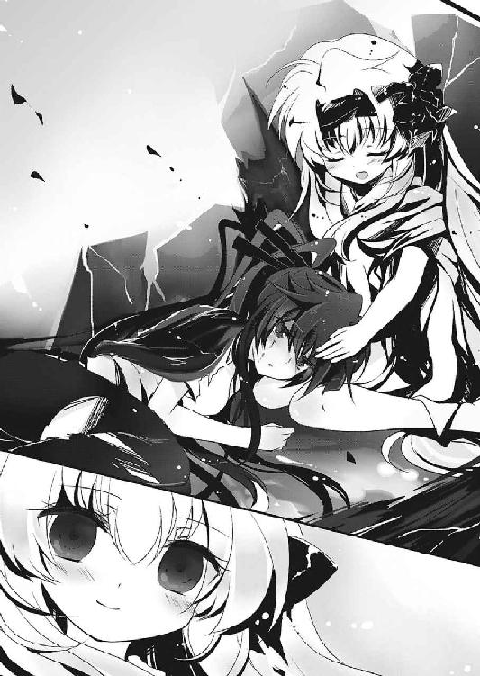
「あー......じゃあ、お前にとって、私はどういう人間だ？」
妙な言い方になってしまったが、こう言う他聞き出す術が無い。
アルルも困ったようにクエスチョンマークを頭の上に浮かべていたが、しばらくしてしゃべり始めた。
「コーイチは、コーイチだ。ボクを守ってくれると約束してくれた、私の一番だいすきな人間だっ」
キャー、とか頰に手を当てて、アルルが照れる。一応目の前にいるように見えているので、恥ずかしがっているのだろう。
「あと～......えーと......じしょう、キューセーシュだ」
「......自称？」
「んむ。じしょーだ。カオルがいつもじしょーをつけろと言っていた」
「............それから？」
「えとー、うとー......あとはー、コーイチは、シェードのリーダーだ」
聞き慣れない単語に、明日菜は首を捻った。
何かの組織名だろうか。聞き覚えが無い。今の雨鶴来市に存在する組織は、新興宗教オーロラくらいのものだ。
明日菜はシェードとは何なのかをアルルに問うた。
「シェードはな、ボクを守るためにコーイチが作った......えっと、ソシキというやつだ」
「......初めて聞くな」
「仲間は、コーイチと、カオルと、ウノと、キョージ......あとはー、アサガオと、カズキとチダイと、それからヒロミだ！」
どうやら非常に少人数の組織らしい。実態は組織とは名ばかりの、徒党を組んだだけのチームだったのだろう。
それにしても、《一握りの希望》の持ち主を守るチームとは、変わった人間もいたものである。普通なら、我先にとアルルを殺そうとするはずなのに。
「みんなみーんな、アルルは大好きだっ」
満面の笑みを浮かべると、アルルは一人一人についてどこが好きかを言い連ねていった。カオルはちっこくて可愛い、ウノは優しくてがんばり屋、キョージは大事にしてくれる、アサガオは明るくて楽しい、カズキとチダイはバカで楽しい、ヒロミは優しく頭を撫でてくれる、などなど、取り留めのないことを話していく。
そして最後に、
「でもやっぱり、コーイチがボクは一番好きだ！」
ここにいるはずの、ここにいなければならない者の名を呼んだ。
「コーイチは、とても弱いけど、すごく強いのだっ」
激しく矛盾していた。
「いつもカッコつけて、いつもボロボロにやられて、いつもぶるぶる震えて泣いている」
「......それは」
「でも強いのだっ」
意味がわからない、という顔で明日菜は眉をひそめる。
アルルは続けた。
「どんなにやられても立ち上がって、どんなにカッコ悪くてもぜったいに負けない。自分を曲げない。りそうのおれさま？ を......目指してがんばる。それがコーイチだっ」
えっへん、と胸を張って、まるで自分のことのようにアルルは話す。
明日菜なりに解釈すると、どうしようもなく弱くてダメダメだけれど、根性だけは人一倍あって......かなりナルシストな奴、といった感じにイメージが固まった。
そんな奴と間違われているのか、私は......。
明日菜は少しだけへこんだ。
「コーイチはな、約束を守る男なのだ。世界もアルルも両方救ってくれるって、コーイチはボクに約束したっ」
なんという大胆な約束をする男だろう、と明日菜は思った。
事実上、そんなことは不可能だ。世界を救うにはアルルを殺さなければならない。逆にアルルを救うには、世界が滅びるしかない。そういう風にできている。
だのに、コーイチという人物は、その二つを救ってみせると言っていたらしい。バカげている。実にアホらしい。そんなものは夢物語だ。
「だから、アルルはコーイチのことを信じてるのだ。ボクのたたかいは、コーイチを信じることだからなっ」
明日菜は思わず苦笑していた。大仰なコーイチとやらにも、ひたむきなアルルにも、酷く心を和まされていた。
アルルは夢中になってコーイチについての話を続ける。明日菜も黙って聞いている内に、コーイチという男のことがわかってきた。正直言ってあまり好きになれるタイプの男ではない。けれど、不思議と嫌いにはなれなかった。数々のことが馬鹿げていてへたれているのに、一点においてはひたむきな姿が想像できる。好きにはなれないけれど嫌いにもなれない。
実に、妙な男である。
アルルは話に熱が入り、聞いている明日菜も、たまに相づちを打つようになった。
──だが、
「コーイチはなっ、命をかけてアルルを──」
会話がループを始めた頃、突然アルルの表情が凍り付いた。
命をかけて。
その言葉が、トリガーになってしまった。
「？ なんだ？」
いきなり静まりかえったアルルに、明日菜が怪訝そうに声をかける。
すると、
「......あ......あぁ......コ、コーイチ......？ コーイチ......カオル......みんな......！ あ、ああぁあっ、あああ！」
「!? どうした!?」
「い、いやだぁっ、そんなの、やだ、やだぁぁっ！ 死んじゃいやだあああああ！」
「しっかりしろ！ おいッ！」
わめき始めたアルルの肩を、明日菜は強く摑んだ。
身体は異常なほどに震えている。光の無い瞳からは涙が溢れ、口からは涎も垂れている。
（いけない、廃ホテルでの出来事を思い出しているのか......コーイチがもう死んでしまったことを、自覚してしまう）
そうなれば厄介だ。懐いていれば一ヶ月間さしたる苦労もなくそばに置いておけるが、トラウマを呼び起こされてしまえば、彼女は自殺しかねない。《一握りの希望》は、自殺では発動しないのだから、そうなれば誰も救われないまま世界が滅ぶ。
どうすればいい。
どうすれば。
「......くそッ」
明日菜は苦渋の末、一番やりたくない方法を取った。
「アルル！」
「あ、あぁぁあっ」
「アルル、大丈夫だ！ 俺はここにいる！ ほら、よく見ろ、コーイチだ。ここにいるだろ？」
「......コー......イチ......？」
「ッ。そ......そーだ、コーイチだ。なに泣いてんだよ、バカだなぁ......俺はどこにもいかねーよ。怖い夢でも見たのか？」
無理に笑顔を作って、優しくアルルの頭を撫でてやる。
コーイチがどういうしゃべり方をするのかはわからなかったので、適当に演じてみせただけだった。
「ほ、ほら、俺は......約束を、守る男だ。世界もお前も救うって約束したろ？ 黙っていなくなるわけないじゃないか」
アルルが言っていたことをそのまま口にする。こんな付け焼刃の演技では騙せないのではないかと不安だったが、約束を守るという一言が決め手になってくれた。
青ざめていたアルルの顔が赤味を取り戻し、悲痛に歪んでいた表情が柔らかいものに戻っていく。
「......あ～♪」
そして、ホッとしたように、アルルは再び笑顔を取り戻した。さっきまでの取り乱しぶりが噓のように、また懐に潜り込んで頰ずりをする。
「コーイチ～♪ コーイチ～♪」
鼻を啜って、アルルは何度もコーイチの名前を呼んだ。
明日菜の胸が、ズキリと痛む。他人の存在を利用したことへの、罪悪感が心を苛んだ。
決して守れない約束をしてしまった。
私は、本物のコーイチが命をかけて守ったこの子を......殺さなければならないのに。
コーイチの名を使い、この子を騙して......噓の約束をしてしまった。
（............いまさら）
唇を嚙んで、明日菜は罪悪感を振り切った。
そう、いまさらだ。さんざん殺してきたのだ。いまさら何を善人ぶっているのか。
過去に奪ってきた命とこの子の命、秤にかければどちらが重い？ 当然のことながら前者だ。命を奪ってしまった幼い女の子の姿を思い出す。憎しみをぶつけてきた、男の姿を思い出す。
死した彼らの視線が、許すまじと語りかける。
けれど明日菜は、それらの残像を頭の中から消し去った。
偽善など無用。
同情など無用。
いくら理由を彼らのためと正当化させたところで、アルルを殺すのは全て自分のためだ。
誰かのため、誰かのせいにしてはならない。
（私は、人間に戻る......！）
人間に戻る。
ただそれだけのために、アルルを殺す。
今までしでかしてしまった全てのことを、忌まわしい記憶を、悲しい光景を......無かったことにするために。
（私は自分のエゴのためにこの子を殺す......それでいい）
血が滲むほどに拳を強く握りしめ、明日菜は瞳に獣の闇を宿らせる。
気がつけば、アルルは胸の中で眠っていた。
明日菜は、目を細めて、アルルの髪を優しく撫でた。
「......コーイチ......」
アルルが寝言で大切な人の名を呼ぶ。
明日菜は、これだけ想われているコーイチのことを、少しだけ、ほんの少しだけ羨ましく思った。
Battle ２ クリスマスの約束
雨鶴来市郊外の深い森には、一軒の別荘がある。
所有者の老人は既に亡くなっており、本来ならば管理する者などおらず、朽ち果てて廃墟となっていたはずの大きな屋敷。誰も知らない、誰も近づかない場所だと言うのに、その屋敷は新築のように美しく、埃一つ無かった。昼下がりの陽光を浴びるその外観は、モデルハウスのように洗練されていた。
二階のテラスには、人影が一つ。
揺り椅子に座るその人物は、二十歳ぐらいの青年だ。
彼は、心地よさそうに床を鳴らして、一冊の本を読んでいた。
本のタイトルは、『導きし者』。
あらゆる奇跡を修正する、天使の教本。同時に、奇跡に対抗するために、あらゆる奇跡を具現させる神秘の道具でもある。
彼は、一ページ一ページゆっくりと指でなぞり、本をめくっていく。
彼の周りを覆う空気は、普通の人間とは違っていた。
たとえるならば......色あせている。
陽光を浴びても彼の存在が明るく照らされることはなく、まるで古い写真のように、セピア色に色あせていた。
彼の周りだけは、時間が止まったように静かで、もの悲しい。
風景は枯れ木だけ。聞こえるものといえば、小鳥のさえずり。
冬の景色が嫌に似合う。そんな青年だ。
「............」
凍てつく木枯らしが、青年の髪を揺らす。同時に青年は『導きし者』を読み終え、静かに閉じた。もう何度も読み返したような、慣れた手つきで。
膝の上に本を置いたまま、青年は椅子を揺らす。
その動きは常に一定で、同じ動作を繰り返すメトロノームのようだった。
「やっほ、神しゃまー」
青年の背後から、黄色い声。
テラスにボロボロの制服を着た少女、月陽奏麻がやってきた。
青年は振り向かない。ただ椅子に揺られて、寒々しい空を見上げていた。
「相変わらず生気無いにゃー。たまには外に出て楽しいことでも探したらどーれすか？」
にしし、と笑いながら、奏麻は青年の首周りに手を回し、猫のように擦り寄った。
青年は動じた風もなく、静かに口を開いた。
「......楽しいことか。俺にとっては、この世のほとんどのことが経験済みだよ」
「あらら、なんというプレイボーイ発言」
「茶化すなよ......それより、よく来てくれた。お前は本当に呼んだらすぐに駆けつけるな」
ぽんぽん、と首に回された手を叩いて誉めてやると、奏麻はにんまりと嬉しそうに笑う。
「お呼びとあらば即参上～ってねん♪ 神しゃまは私の中で面白い人ナンバー２だから、そりゃあかけつけますともよぅ」
「はは、ナンバー２か。ナンバー１はさしずめ《怪物》か？」
「もちろんれすよ。あの女はわらしの全て、わらしの敵、わらしの愛しいしと。あの女と戦うことが、わらしの悲願なのれす♪」
「奏麻は本当に戦うのが好きだな」
「あの女は特別れす。生け贄を捧げるだけの価値がある。最強ＶＳ最凶なんて萌えるじゃないれすかー」
まるで恋でもしているかのように、奏麻は頰を染めて語る。
青年は、微笑みとも苦笑とも取れない含みのある笑みを浮かべてから、椅子の揺れを静かに止めた。
「今日お前を呼んだのは、頼みたいことがあったからだ」
「んぅ？ なんでそ？」
頰をすりあわせて問い返すと、青年は椅子から立ち上がり、空を仰いだ。
入れ替わりで奏麻が椅子に腰を下ろして、子供のように楽しげに揺れ動いた。
「そろそろ、動きがほしい。俺がオーロラに情報を流してけしかける」
「おおっ、ついに戦争？ 戦争なの？」
「シェードができたせいで、展開がもたついて一〇年があっという間に過ぎてしまうからな。このままだと、悪魔の結界のせいで、世界ともども俺も一緒に滅びてしまう。それに、この世界はまだたったの二度目だ......まだまだ繰り返してもらわねばな。俺の目的のために」
「ふふ～、鬼畜だのぅ鬼畜だのぅ」
青年は笑う奏麻に振り返り、椅子に座る彼女の頭を撫でた。
鬼畜と言われ、承知の上だ、とでも言うように青年は苦笑する。
「お前に頼みたいのは......《付け焼刃》についてのことだ」
青年が笑みを止めて口元を奏麻の耳元へ持っていく。
重々しく声を低くして、奏麻の耳元で囁く。
「奴を誘い出してほしい......一度絶望を味わわせてみたい」
「んにゅ、何故そんなことをするのれす？ だって彼は......」
「奴だからだよ。あいつにはまだ足りないんだ。何も失っていない。だから夢見がちでいられる。あれでは俺に追いつけない......現実をわからせてやらないと」
「ふーん............方法はいかにして？」
奏麻の問いに、青年は顎に手を当ててしばらく考えた。
そして何かひらめいたのか、パチンと指を弾いて、口元に弧を描かせた。
「奴の身近な人間を使え──誘い出したら、あとは俺がやる」
目を開けると、光一は暗闇の中に立っていた。
「ここは......」
闇に目を走らせてから、光一はハッとした。
前にも一度こんな経験をしたことがある。この感覚には覚えがあった。
「......いるんだろう。出てこい」
目を鋭くさせて、光一は闇に向かって言い放った。
すると、数秒の沈黙のあと、闇の中央が光り輝き始めた。あまりのまばゆさに光一が目を細めた──次の瞬間。
『メリ～～～～クリスマァァァァッス！』
ぽひん、という間抜けなクラッカーの音と共に、
なんか変なサンタ服着た悪魔っぽいものが出現した。
「............」
『せ、聖なる夜に舞い降りた、純白なる天使......えーと......ティンクル☆アルカナちゃん、ただいま参......上』
「............」
『ね、願い事しないと──天に召しちゃうぞ☆』
............。
............。
「............うわぁ」
それが突如として現れたアルカナの姿に対する光一の感想だった。
『う、うわぁ!? リアクションそれだけですかっ!?』
「久々の登場がそれか......空気読めよ」
最近鬱気味の光一には、このテンションはウザい以外の何ものでもなかった。
遠い目で見てくる光一に、アルカナはぶわっと涙を流した。
『だ、だって、最近光一さんが元気無かったみたいだから、私は元気を出してもらおうとがんばって......よかれと、よかれと思って......っ！』
アルカナは床（？）に倒れて、どこからともなく取り出したハンカチを嚙みながらさめざめと涙する。
相変わらず疲れた顔で遠い目をする光一を、アルカナは上目遣いで見つめた。
『も、萌えませんでした？』
「──萌えるかっ！ 何故俺を元気づけるためにそんな登場の仕方をしようと思ったのだ！」
『だって......光一さん、こういうの好きでしょ？』
「どこ情報だそれ!?」
『うぅ、前の時は悪魔の登場で喜んでくれたのに......元気が出ると思って一生懸命調べたんですよ......よかれと思って......よかれと思ってぇ』
勘違いも甚だしい上に、まるで空気が読めていなかった。
光一もいつもと違ってテンションが低いので、これ以上付き合ってやる気にもなれなかった。
「呼びかけに応えたのは今回が初めてだな。今まで何やってたんだコノヤロウ」
非難の言葉を浴びせつつ、光一は腕を組んでアルカナを見下ろした。
アルカナは、おちゃらけた雰囲気を消して、申し訳無さそうに立ち上がった。
『......すみません、結界の維持で手一杯で、なかなか顔を出せなくて。「導きし者」は天使と同等の力を有していますから......私見習いなんで、結構......キツいんです』
タハハと苦笑しながら、アルカナは光一の前に立った。
キツいと言う通り、アルカナの存在は意識の中であってもなお希薄だった。
光一はアルカナに少しだけ同情しながらも、本題に入ることにした。
「......どうして、この世界が二周目だってことを黙っていた」
光一の問いに、アルカナの肩が微かに震えた。今回の呼び出しに応えたのは、光一が真実を知ったからだろう。
アルカナは深く息を吐いて、真っ直ぐに光一を見つめ返した。
『......言う必要が、無いと思ったからです』
はっきりとアルカナはそう言った。
光一の目が鋭く細まる。
少し考えてから、すぐに視線を和らげた。アルカナの言う通り、一度失敗していることを伝えられてしまえば、光一のやる気に影響が出るのは明らかだった。実際、こうして真実を知った光一は、案の定調子を狂わされている。
アルカナを責めるのは筋違いも甚だしかった。
光一は深く溜息をついて、またじめじめとした空気を纏い始めた。地面にのの字でも書き出しそうなほどに縮こまって、膝を抱える。
いじけ虫がそこにいた。
「はぁ～～～～............一周目の俺は、結局アルルも世界も救えなかったんだよなぁ......」
『......へ？』
「世界が一度巻き戻されているってのはそういうことだろ......」
指先をつんつん合わせながら、光一はショボンとさらに小さくなった。調子に乗ってやる気を出す時はやれる男なのに、しょっちゅう心が折れたりいじけたり、忙しい男である。
この世界が二度目の世界だとわかったところで、いまさら迷いはしない。今の自分の世界は二度目の世界。ならば二度目の世界を救うために躍起になればいい。
......なんて、実際そう簡単には吹っ切れないへたれなのが佐藤光一である。
「もうすでに二周目？ 世界は一度巻き戻っていた？ 何だその鬱展開......俺の伝説にそういうのいらねぇよ。ゲームやアニメならよくある展開だが、実際に自分の世界で起きると全然いい気分じゃねぇ」
うじうじうじうじうじ。
光一にとって、この世界は一度バッドエンドを迎えた世界。明日菜以外の人間の存在がリセットされ、不幸の輪廻に巻き込まれた世界。やる気をそがれてしまうのも無理も無いと言えば無理も無い。
へたれここに極まれり。どんどん光一のネガティブ思考が加速していた。
鬱である。紛うかた無き鬱である。
「前の俺は結局、何もできなかったんだ......きっと今の俺と同じで、たいしたこともできずに......」
光一が自虐に走り出した時、突然アルカナが眉間に皺を寄せた。
『今......なんて？』
「だから......俺は結局何もできずに──」
光一がもう一度自虐的なことを言おうとした瞬間、アルカナはぶるぶる肩を震わせたかと思えば、いきなり、
『チェストォ──ッ！』
ビターン！
「あひん！」
ソニック○ームばりに腕を振るって、強烈な両手ビンタを光一にお見舞いした。
「痛い！ 何!? 何なのいきなり!?」
女々しい感じに倒れて、頰に手を当てながら涙目でアルカナを見上げる。
アルカナは、泣きそうなのを我慢して唇を嚙んでいた。
『一度目の世界の光一さんを馬鹿にするのは──たとえ光一さんであっても許しませんよッ！』
あまりの気迫に、光一が言葉を失う。
まるで尊敬する人を侮辱されたように、アルカナは怒っていた。
『前の光一さんは、必死にアルルちゃんを守ってましたよ！ 今の光一さんなんかよりずっと真剣に、がむしゃらに、命をかけて敵に挑んでいたんです！』
「............」
『歳だって今の光一さんより四歳も若かった！ まだ子供だったのに、それなのにいつも明るくみんなを励まして、先頭に立ってがんばっていたんです！ アルルちゃんを守るんだって、ヒーローになるんだって......胸を張って......！』
瞳からは、ぽろりと大きな雫の涙が零れていた。
アルカナは涙を拭いながら、喉を鳴らす。
『......た......確かにアルルちゃんも世界も救えませんでしたけど、でも......最後の最後まであなたは戦っていた......何にもできない、ドジな私の代わりに......っ』
気丈に立っていたアルカナだったが、次第に膝が折れて、耐えられずに光一の前で泣き崩れる。
『一番責められるべきは私なんです......全ての元凶は私なんです......「導きし者」を紛失したせいで、みんなが苦しんでる。それがわかってても何もできない私は......本当にダメ天使です』
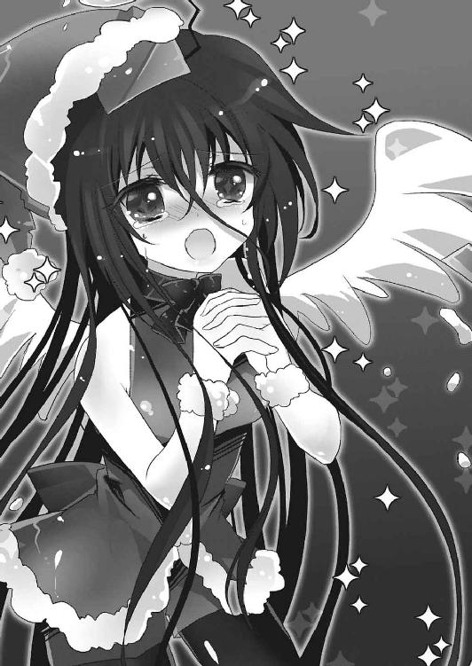
「............」
『光一さんが亡くなる時だって、本の持ち主が別の世界へ移動しないように、結界を維持し続けることしかできなかった......光一さんに助けなくていいって言われて......それに従ってしまった。......助けられたのに......！』
後悔の念に苛まれながら、アルカナは自分の力の無さを責めた。
光一は、考えを改めた。一度目の世界の自分は、決して何もできなかったわけではなかった。死を前にしてもなおアルルを守り......世界を守るために、アルカナに結界を維持させたのだ。
どれほど強い意志が必要だったかは、光一にもわかる。
果たして同じことができるだろうか......そう思うと、光一は自分が情けなくなった。
光一は、子供のようにわんわんと泣くアルカナの頭を優しく撫でてやった。
『ふぇ......？』
「泣くな。全部わかったから......俺が悪かった。こんなことでへこんでいる俺がどんだけ意志が弱いか、ようやく自覚できたぜ」
苦笑してから、光一は勢いよく立ち上がった。
そして、フッとキザったらしく笑みを浮かべる。
「いじけんのは今日で終いだ──明日から俺は、またハイクオリティな俺になってみせるぜ」
キリッ。
光一のその顔を見て、アルカナは「ごういぢざ～ん」と鼻水を垂らしながら感涙した。まったくもって、威厳もなにも無い、間の抜けた天使（自称）である。
「必ず見つけてやるさ......本の持ち主。そんでお前のミスも全部解消して──汚名挽回させてやる！」
汚名返上である。
「言ったろ──俺は絶対に約束を守る男だってなッ！」
光一の顔から迷いが消えて、アルカナにも笑顔が戻る。
一度失敗したから何だ。
俺の伝説は、まだ終わってねぇ。
胸の中で炎を燃えたぎらせ、光一の意識は再び現実へと戻っていった。
早朝の毬藻寮にて、佐藤光一は椅子に座って、机の上で頭を抱えていた。すでに髪の毛は脱色し直して、服もカラーコンタクトもばっちり。
中二病完全復活である。
（一度目の世界で必死に戦った者......俺と、それから司令は世界を救えなかった。これは《一握りの希望》を発動させたとしても、世界は救えなかったということになるんだよな）
光一は思考を高速回転させて、現状の把握と問題の解決に全力で挑んでいた。
（この結果はシェードが正しかったことの裏返しだが......だとしたら藤堂や石崎、オーロラの連中がしてきたことは全くの無駄ってことになる......ひでぇ話だ。曲がりなりにも自分自身や世界のために《一握りの希望》を発動させようとしていたんだ......奴らを決して認めることはできないが、信念や動機を否定するつもりは毛頭無い。それぞれの目的のために必死になっていたんだからな）
少しだけかつての敵に同情しながら、光一は顎に手を当てる。
（でも、《一握りの希望》の発動に意味が無いとすると、提示された唯一の救いの手立てはフェイク。『導きし者』の持ち主の嘲りでしかない。ならば本の持ち主を倒すことが世界とアルルの救済に繫がるわけだが......）
物事を整理して解決策を導きだそうとした光一だったが、いつもそこでつっかかってしまうのだった。
以前、本の持ち主に接触したという藤堂や朝顔に事情聴取を行おうとしたのだが、彼らはほとんど何も覚えていないと言っていた。
手がかりが、全く無かった。
「......くそっ」
ふと、頭の中で二つの言葉が重くのし掛かってきた。
『お前に世界は救えない』
『お前に彼女は救えない』
そんな言葉を投げかけてきた自称神に対して、光一は苛立ちと悔しさを覚えた。
同時に、司令室での明日菜の無念の表情が脳裏に蘇る。アンチテーゼに苦しみながらも、ただアルルを守ることだけに執着する彼女の姿は、光一にはとても眩しく、悲しく見えた。
彼女は、絶望を味わった上で、全てがわかっていた状態でシェードを作った。アルルを救う......その一点の目的のために。
それがどんなに途方もないことか、光一には想像すらできない。
自分は、何もわかってはいなかったのだ。
（俺は......まだまだ付け焼刃だ）
かつて命をかけて戦っていた自分に対しても、申し訳が立たなかった。
こんなことではいけない。そう自覚する。
世界もアルルも両方救うという夢が遥か彼方に遠のいていく。どれだけ大それた夢なのかがよく理解できた。それでも諦めまいと、光一は自分の弱い心と戦っていた。
「ぬぅ......」
腕を組んで思索に耽る。
と、その時。
「......むぅ」
「............ふぅ」
背後から、自分以外の脱力した声が二つ聞こえてきた。
振り向かずとも誰の声かはわかる。というかいるのは最初からわかっていたのだが、無視を決め込んでいたのだ。
今はこいつらに関わっている暇はない、そう考えて。
「............はぁーん」
「ふむぅ............」
「............っ」
しかし、二人の悩ましい声に、そろそろ我慢の限界だった。
光一は、肩を震わせ、椅子をがたつかせて振り返った。
「ぬぅぅぅぅぁんで貴様らはさっきから俺の部屋で湿度を上げているのだぁぁぁッ!?」
せっかく人がシリアスに悩める主人公になっていたというのに！ と心底思いながら怒鳴りつける。
光一の部屋には、一樹とチダイが非常に脱力した状態で死体のように横たわっていた。
二人は我関せず、光一の怒声を聞いてもぴくりとも態度を変えようとはしなかった。
「何なのだ!? なんで朝っぱらから俺の部屋に来てしけった煎餅みたいになっているのだ！」
激しく食ってかかる光一。
それでも二人は廃人のようになって動かない。
「一樹はともかくチダイまで何してる......ッ。貴様は今日の朝飯当番だろうが！ リーダーのくせに何を腐っていやがる！ さっさと準備してこい！」
チダイの胸ぐらを摑んでがくがく揺らしてやると、生気の無い据わった瞳が光一を捉えた。あまりの瞳の薄暗さに、光一も思わずうめいてしまう。
「............準備か......そうだな。よし、一樹」
「..................ああ、わかってる」
チダイに続いて、一樹も顔を上げて暗い瞳をギラつかせた。
そして、二人は勢いよく立ち上がり、超速で光一の部屋を出て行った。
取り残された光一は、ポカン、である。
「......なんだったんだ、あいつら」
静まりかえった部屋で首を傾げたのもつかの間だった。次の瞬間、再び一樹とチダイが勢いよくドアを開けたのだ。
あまりにびっくりして、息が止まりそうになる光一。
再び現れた一樹とチダイは、何故か武装していた。チダイは袴を着て日本刀を腰に携え、頭には額当てを巻いている。一樹は世紀末風味のコスプレをして消化器を装備していた。二人とも、変わらず目は据わったままだ。
「な、なんなんだーッ！」
光一の叫びはごもっともだった。
学園祭も夢がモリモリもとっくに終了したはずなのだが。
二人はなんだか殺る気満々だ。
「──此より我らは修羅に入る！ 者ども続けー！」
「──ヒャッハー！ リア充は消毒だー！」
意味がわからなかった。イベントでも夢でもないとしたら、この二人がご乱心したとしか考えられない。といっても、光一と同じでわりといつも二人はご乱心なのだが。
「貴様らはいったい何と戦おうとしている!?」
「うむ？ 忘れたのか光一、去年もやらかして恒例行事にしようと話したではないか」
光一が問うと、チダイが一瞬シラフに戻って真顔でそんなことを言った。
一方一樹は、
「セイント聖夜じゃぁぁぁ！ 怨敵は聖なる夜じゃぁぁぁ！ 今年こそ滅ぼしてくれようぞ苦裏巣魔棲───威武ぅぅぅえああッ！」
完全にイッちゃっていた。目がもう完全にアッチの人だった。
光一は一樹の言いにハッとして、カレンダーに目をやる。
そして今日の日付を見て、ぱちんと指を弾いた。
「ああそうかっ、明後日はクリスマスイヴではないか」
暗闇謎空間でアルカナがサンタの格好をしていたのを思い出して、「完全に忘れてた」と呟く。
チダイが言うように、光一達は去年、クリスマス討伐という名目で寂しいイヴをなんとか乗り越えようと無駄にハイテンションに過ごした。おかげで野郎だらけのむっさいイヴを過ごすはめになったのだが、当時はやけくそで来年もやらかそうぜ、という話になっていたはず。二人はその約束を律儀に覚えていたらしい。何故こういうどうでもいいことを覚えていてなおかつ全力なのか。ひとえに、光一の幼馴染だからだろう。
「......暇だな、貴様ら」
光一がしみじみ言った。表情には憂いのようなものが含まれている。
チダイと一樹はお互いの顔を見合わせた。
「なんだよノリわりーな。お前が企画したことなのによぉ」
「うむ。最近はどうした？ お前がいつも通り空回りしていないとこちらまで落ち着かないのだがな」
酷い言われようだが、いつものことなので光一は動じない。
フッ、と哀愁漂う笑みを浮かべて、視線を横にそらした。
「俺は貴様らと違っていろいろあるのだ......いろいろと、な」
実に癪に障る言い草である。読点がムカつくことこの上ない。
確かに光一は今考えるべきことがたくさんある。が、この佐藤光一という男は、何かに憂いを抱いたり悩みを抱えている自分の姿がカッコいいと思っていたりするので、実際に悩んでいたりしていてもなんとなーく人の神経を逆撫でするのだ。
「邪魔しないでくれないか？ 俺の崇高でこの上ない思考を邪魔する権利は、貴様ら程度の輩には無いのだ。俺は世界を背負う男......イコール、アイアムレジェンド。貴様らとは住む世界が違う」
全然イコールになってなかった。
光一は、アンニュイな感じに髪をかき上げ、シッシと手を振って二人を追い払おうとする。もちろん、こんなことは日常茶飯事なので、一樹とチダイは軽く受け流す。
「昨今のロリコンへの風当たりの強さに嘆いているとかか？」
「あれだな。最近流行の男の娘に目覚めたとかだろう」
「──俺の悩みはどんだけ程度低いんだよ！」
このように、幼馴染の間ではいつも光一は一枚下手なのだった。
光一は唾を飛ばして怒鳴りつけると、コスプレ野郎二人を押しのけて部屋を出ようとする。
「どけ！ 俺はお前らほど暇じゃないのだ！」
「えぇぇぇ最近ノリわりぃよぉぉ、遊ぼうぜぇぇぇなぁ光一ぃぃぃぃ、わりとマジでクリスマス滅ぼそうぜぇぇぇ」
「離せ！ 縋り付くな気持ち悪い！」
「うむ。俺達の愛すべきバカはどこへ行ってしまったのか」
「バカは貴様らだ！ 離せえええええッ！」
子泣き爺のようにへばりついてくる二人を振り解き、光一は部屋のドアを開けて外に出た。
と、そこには、
「............」
広美がドアの外で、いつもの眠たそうな瞳で待ち構えていた。
「広美？ お前なんでこんな朝早くに......」
きょとんとする光一の前で、広美は制服を着て鞄を持ったまま動かない。
寝ぼけている、わけではないようだが、こんな朝早くに広美が起きているなんてこと前例が無かった。
広美は、真っ直ぐにじっと光一を見つめている。
じ──......っと。
「な、何だ？ 何か用か？」
少し引き気味に尋ねてみる。
すると、広美は、少しだけ残念そうな顔をした。
「明後日、クリスマスイヴ」
「？ だからどうした？」
「............。..................。何でもない」
広美はそれだけ言って、光一に背を向けた。
訝しげに首を傾げる光一。
去りゆく広美は、背中を向けて、最後に小さな声で何かを呟いた。
「......やっぱり......今年も覚えてないんだ......」
覚えてない？ 何のことだ？
光一は広美の背中を見送りながら、必死に何かを思い出そうと額に手を当てる。
光一の後ろから、一樹とチダイが顔を出してきた。
「あーあ、広美、いじけちゃったぞ」
「うむ。光一はなんというか、どこまでも光一だな」
「？ お前ら何か知っているのか？」
光一が問うと、一樹とチダイは盛大に溜息をついた。
「はぁ～～～......なぁ光一、俺らとの約束を覚えてねぇのは別にいいっつーかネタだからどうでもいいんだけどよ。広美は根に持つぞ？」
「うむ。たとえお前でも、広美を傷つけるのは見過ごせんな。幼馴染として」
うんうん、と頷いて、二人が光一を責めてくる。
「待て待て、マジで話が見えん。約束？ 何の約束だ？」
真面目にわからないという顔で、光一は眉を寄せる。
「......見損なったぜ光一。お前はこういうことは忘れないタイプのバカだと思ってたぜ」
「うむ......お前にとってはほんの些細なことだったのだろうが、広美のためを思うならきちんと思い出してやることだ。それが男としての責任というものだぞ」
やれやれと首を振りながら、一樹とチダイが去っていく。
残された光一は、やはり呆けたまま立ちすくむだけだった。
登校中。光一は広美との約束について思い出そうと腕を組んで歩いていた。
自称約束を守る男としては、あんな風に言われて黙ってはいられない。記憶の中を整理整頓し、ここ最近の約束事を順に拾い上げる。
が......。
（ダメだ。やはり思い出せん）
最近の約束ではないのだろうか。これでも光一の記憶力はいい方だ。よほどのことが無い限りは約束事を忘れることなど無いはずなのだが......。
（もしや、俺が眠っている間にもう一人の人格が勝手に約束をしたのではなかろうか......）
珍しく妄想以外で頭脳をフルスロットルで活用している感じだったのに、結局この有様であった。
その時、
「コーイチ～～～～～!!」
昇天坂の下方から、お馴染みの黄色い声が響いてきた。
瞬間、光一は戦慄する。
（──来るか！）
このパターンは、ジャンピングハグの前兆。何度となく首の骨を持っていかれそうになったのだ。これ以上同じことを繰り返されればアルルを殺人者にしてしまいかねない。
（俺は同じ失敗はしない男だ！）
光一はあらかじめ首もとを守るように姿勢を整え、アルルのハグを受け止める体勢を取った。光一にぬかりはなかった。
「おはようコーイチっ！」
──グギッ！
「──おふん！」
でも今日は腰だったらしい。
腰部への不意打ちに地面に倒れつつ、光一は思った。
アルルはこの世界が二周目だということを知っているのだろうか？
明日菜のことだ、恐らく話していないだろうし、アルルも知っていたら光一に伝えていたはずだ。アルルはどう考えても秘密事が苦手だろうし。
となると、アルルは十中八九知らない。
光一は下唇を嚙んで、心を決めた。
......言うべきではない。光一も秘密事が得意ではないが、それでも、こればっかりは知らなくていいことだ。
いつも通りを心がけて、光一は身体を起こして腰に纏わり付いているアルルを見やった。
「──って！ お前なんだその格好!?」
視界に飛び込んできたアルルの姿を見て、光一はすっとんきょうな声を上げた。
アルルの格好は一言で言って、サンタだ。
............。
ミニスカの。
「これか！ さんたくろうさんだ！ 明後日はクリスマスイヴなる行事があるのだろう？」
「そそそそそりゃあるが、何故お前がサンタの格好を！」
「？ 皆こういう格好をするものではないのか？ トオルは、こういう服を着る日だと言っていたのだが......」
言ってから、自分の姿を確認して、光一の顔を見る。
「......変、だろうか？」
不安そうに尋ねてきたアルルを前に、光一は硬直した。
現在光一は、仰向けに地面に横たわっている。アルルは光一の腰付近をまたいで、上に跨がった体勢、つまりは馬乗り状態だ。
アルルの着ているサンタ服は実に扇情的なもので、真冬に着る服であるはずなのに胸部を覆う布は極端に開いており、へそも丸出しだ。極めつけは真っ赤なミニスカートで、下着が見えるんじゃないかというくらいに短い。光一の腰を挟み込む、肉付きのほどよい白い脚は、ニーソックスとスカートにより実現する絶対領域を完璧なまでに作り上げていた。
腰に感じる途方もなく柔らかい感触と優しい温度は、この世のものとは思えないほどに心地よかった。
思考停止どころの話ではない。あまりに唐突な出来事すぎて理性すら働いていない。ただ今はもう、目の前の金髪碧眼の少女をエロい視線でしか見ることができなかった。二周目とかその他いろいろの悩みは突然のエロスには敵わなかったらしく、どこかへ吹き飛んでしまっていた。
しかしあまり良い状況ではない。ここは通学路、公衆の面前だ。生徒達の嫉妬と軽蔑の視線に晒されている。
「へ、変じゃない......っ！ めちゃくちゃ似合っている！ だ、だが──」
「そうか！ ならいいのだっ。学校に来る途中に見た生徒はみんな学生服だったのでな？ もしや自分だけなのではないかと少し不安だったのだが............あぅ、ところで、コーイチ？」
「な、ななな、ななんだ？」
「さっきからお尻に何か硬いものが当たっているのだが、これは」
「──言うなああああああああああああ！」
佐藤光一は、男の子である。
「！ もしやこれが世に言う二股......三本目の足か！」
「妙な解釈してんじゃねぇ！ あふんっ、さ、触っちゃいけまてん！」
顔を真っ赤にしてジタバタする光一。
この状況はいろいろな意味でまずい。往来のド真ん中で少女に馬乗りされているなんて頭がフットーしそうである。動こうにも動けず、カッコつけようにもこんな体勢でキリッとかやってみせてもただの変態だ。
アルルは興味津々で光一の下半身にキャッキャウフフしている。こんな楽しそうな彼女を突き飛ばせるはずもない。
誰かに助けを求めて涙目になりながら辺りを見回すと、
「アァァァァルルゥゥゥゥゥウウウウ！」
これまた聞き覚えのある怒声。
助かった、と思いつつ、前にもこんなことあったなぁ、というデジャブじみた感覚を味わっていると、猛スピードでこちらに走ってくるちっこい姿が見えた。
坂の下から、薫が走ってくる。
ホッとして薫が来るのを待っていた光一だったが、彼女の姿が大きくなるにつれて再び顔が引きつっていく。
なんと、薫もサンタ服だったのだ。
「はぁっ、はぁっ、アルル......あんた、もう......いい加減に......しなさいよ......っ！」
「おーカオル！ おはようございますっ」
「おはようございますじゃないわよバカッ！ なぁんであたしら起こさずに一人で学校行っちゃうの!? アホの子なの!?」
薫はプンスカしながらアルルを光一から引っぺがし、その場で説教を開始した。
助かった......はいいが、この二人の格好はいったいぜんたいどういうことなのか。
「だいたいあんたはいつもいつも犬みたいにちょろちょろちょろちょろ！ おっかけるあたしらの苦労考えたことある!? 無いでしょ!? 何かする前に一言あたしに報告しろっていつも言ってんでしょーが！」
「あぅぅ、わ、忘れていた。すまないカオル......ゆ、ゆるし」
「今回ばっかりは許すもんですか！ こちとら連日走らされて鬱憤溜まってんのよ！ しばきまくってひぃひぃ言わせてやるから覚悟しなさいこの犬属性......っ！」
ビシビシとアルルのデコを指で押しながら、薫は説教を続ける。
アルルと違って、身体の凹凸が極めて少ない薫がサンタ服を着ている。合うサイズが無かったのだろう、上着の袖はだぼだぼで余りまくっていた。それでも露出しているところは露出しているので、どんな体型にも応用できるという制作者のこだわりのようなものが感じられた。
しばらく真剣に二人のコスプレ姿を分析してしまった光一は、我に返って薫に問うた。
「おい薫......」
「あぁ!? ......ってなんだ佐藤か、いるならいるって言いなさいよね。あと薫って呼ぶな」
「いや、それよりもその格好......」
「？ ああ、アルルね。昨日この子、兎乃と一緒にうちに泊まってたのよ。んでバイトの衣装のサンタ服を、透がアルルに着せたがってね。昨日は夜通しだべって気がついたら寝ちゃってて、朝起きたらアルルがそのままの格好でいなくなってた......ってわけ」
やれやれアホの子よねまったく、と薫は溜息を吐く。
話はわかったが、どうにも妙だった。
光一は立ち上がって、服の汚れを払った。
「なぁ、お前もしかして......気づいていないのか？」
「？ 何がよ？」
「お前も激しくサンタだぞ」
「..................へ？」
目が点になった薫に、光一は胴体の方を指さしてみせる。
五秒ほどの沈黙が続いた直後、薫の顔が見る見る内に赤く染まっていった。
周りの視線に気づく。中には携帯電話で写真を撮る輩までいる始末。
薫は咄嗟に胸元を腕で隠した。
「～～～～～～っ！」
「............お前もたいがいドジだよな。着たままおっかけてきちゃったわけだ」
「ぅぅうるさい......こ、これは昨日透が着てみようって言ってきたから着ただけで、その......別に好きで着たわけじゃっ」
薫が恥ずかしさに頰を膨らまし、涙目になってしまう。
光一はそんな薫の仕草が可愛くて、少しいじめたくなってしまった。
「フッ。諦めろ、いまさら隠したところで無駄だぞぅ。それにお前に隠すほどのものが備わっ──べぶら！」
すかさず鉄拳が飛んできて、光一は仰向けにぶっ倒れた。
「あたしだって言われなくたって......言われなくたってねぇっ......うぅ」
うううう、と唸りながら、薫はきょとんとしているアルルを見た。
最初は足、次にお尻、次に胸。順に目線を上げていき、最後にアルルの顔を見た。
「んー？」
目をぱちくりさせて、小首を傾げるアルル。
薫は、黙って視線を自分の胴体に移した。
「............ぅぅぅぅぅぅぅぅぅぅぅ.........っ」
ぽふぽふと自分の胸を手で触ってみて、薫はついにポロポロ泣き始めた。アルルと自分を比べてしまったのだろう。自分の身体の貧弱さを再確認したことと、そんな貧弱な身体を公衆の面前で晒してしまってることの恥ずかしさは薫にとって耐え難いものだった。
少しやりすぎたか。光一はぶっ飛ばされたのを怒ろうと思ったが、スッと立ち上がってお手製長ランを脱いだ。
「ほれ」
そして、長ランを薫に羽織らせて、ぽんと頭に手を置いてやる。
「ふぇぇぇ？」
「別に泣くこたないだろうが。確かに貧弱だが、きちんと似合っているぞお前も」
素だった。光一が、素でカッコいいことを言ってしまった。
しかし言った瞬間は素だったものの、瞬時に「あれ？ これ俺、今すげーイケメンなんじゃね？」とか思って悦に浸ってしまうのが光一なのは言うまでもないが。
「......ほんと？」
てっきり、キザったらしいこと言ってんじゃないわよ、とか返ってくると思っていた光一だったが、予想外にも問い返されてしまった。
「本当だ」
「ほんとにほんと？」
「......本当だっつってんだろ」
なんだかとってもびっくりしたような顔で、薫が光一の顔を見上げてくる。
光一は戸惑いつつも、ここで否定してしまうとまた泣き出して面倒なので、肯定するしかなかった。
「かわいい？」
「んぐ......っ。か、かわいい、ぞ」
立て続けに聞いてくる薫に、冷静に返そうとして少し口ごもってしまう光一。
「エロかわいい？」
「エロかわっておまっ！ いやそういう目線で見てたわけじゃ！」
「............」
光一の反応に、せっかく戻りかけていた薫の自信が消え失せて、またもやどよーんとしてしまう。わかっていたことだが、凄まじいコンプレックスの持ち主だった。
こんな通学路のど真ん中でサンタ服着た幼女から、「あたしってエロかわいい？」などと問い詰められているこの状況下で、「エロかわいい」と答えてしまえばそれは自分がロリコンであると認めてしまうということに他ならない。
普段から疑惑の上がっていたことではあったが、悪い意味で有名人な光一がここで肯定してしまうということは世間体の爆死を意味する。もとより世間体などというものは存在しないと言われればそこまでなのだが、光一にとってロリコンに部類分けされることは中二病と揶揄されることよりも遥かに屈辱的なのである。世間体のベクトルが若干異なるのである。
が、薫のプライドと自分の世間体を秤にかけた結果。
「──だぁぁぁちくしょう！ ああエロかわいいよ今のお前はとてつもなくエロかわいい！ 大興奮だ！ 正直たまらん！ この俺が言うのだ自信を持て！」
光一はビシィッと自分に親指を向けて言い放った。
どちらが真の意味でカッコいいかを自分に問いかけて導き出した答えは、失うものも多かった。
途端に明るくなる薫の表情。裏腹に頰を伝う美しい涙と共に世間体を失う光一。周りの生徒は「ロリコン......」とつぶやき、メールで学校中の生徒に報告を始めていた。
自己犠牲とはかくも心に痛いものなのかと、光一は悟った。
携帯でメールを送る大衆と、何故か楽しそうに拍手をするアルル。
そして頰を染めて嬉しそうにする薫。
光一はこれでよかったのだといろんなものに見切りをつけた。
ところが、そんな現場に、全てをぶちこわす介入者がやってくるとは誰も予想していなかった。
「薫ぢゃ～～～～～～～～ん！ お、おおおお、おいてかないで～～～～！」
坂の下から走ってくる、ピンク色の髪をした少女。
まさかのイレギュラー。まさかの不意打ち。
サンタ服は巨乳が似合う。
その言葉を如実に語る豊満な身体が、胸を揺らしながらこちらに走ってくる。リアルにボインボインという擬音を鳴らして驚愕に値する大きさを主張するその乳は、たとえ巨乳派ではなくとも目を釘付けにさせてしまう。ちなみに光一は巨乳派だ。おっぱい大好き（むっつり）人間だ。
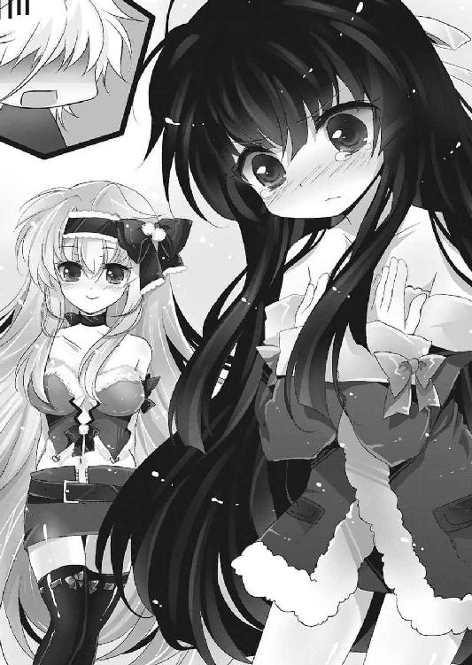
桐咲兎乃。まさかこれほどまでとは......。
真顔で直視した光一は、次の瞬間鼻血を噴射した。
お約束であからさまな反応を示した光一の横で、薫が下を向いてブルブル震え始めた。光一には見えた......彼女の怒りメーター的なナニカが。
「やっぱり巨乳かこの腐れ中二病があああああああああああああああああああああ！」
「ぎゃあああああああああああああああああ！」
ああ無情。
光一の自己犠牲は、かくして無に帰すのであった。
昼休みのチャイムが鳴り、光一が購買のパンの袋を開けようとしていると、突然アルルが身を乗り出して光一に話しかけてきた。
「クリスマスパーティ？」
「そうなのだっ。昨日カオルやトオルと話していてな？ クリスマスにはみんなでパーテーをするらしいのだ」
「場所は？」
「カズキとチダイに話したら、毬藻寮の食堂でやればいいということになったっ」
アルルはうきうきと胸の前で両拳を握って瞳を光らせてから、廊下側のチダイと一樹に手を振った。
「（キリッ）」
「（キリッ）」
バカ二人は親指を立てて歯を光らせている。あれほどクリスマスを滅ぼすとネタながら豪語していたというのに、予定が埋まるとこれである。
光一は目を線にして、視線をアルルへ戻した。
「コーイチも参加してほしいっ。ボクはクリスマスパーテーなるものをするのは生まれて初めてなのだ！」
「やるのは止めはせんが......いいのか？ 薫」
キャッキャとはしゃぐアルルの横に立っている薫に声をかける。
薫は喜ぶアルルに苦笑してから、光一の耳元に口を寄せた。
「別にいいんじゃない？ ここ一ヶ月間、能力者の事件はほとんど起こらなかったし、オーロラの動きもなかった。もちろん油断は禁物だし、するつもりはないけど、あたしがそばにいるなら司令もとやかく言わないでしょ」
「ふむ。しかし珍しいな、お前がこういうことに寛容なんて」
光一がそう言うと、薫はちょっと照れくさそうに口を尖らせた。
「ま、まぁ、あたしも、毎年透と二人きりだったし？ ケーキ販売のバイトでもらえる余り物もいつも食べきれずに腐らせちゃうから......み、みんなで食べた方が......経済的でしょ？」
「なるほど。つまり普通に自分も参加したいと」
「ちちち、ちがっ。あたしは別にいいんだけど、透がね？ みんなで騒ぎたいっていうから......あたしは別に、稼ぎ時だからバイトしててもいいんだし、仕方なくよ、仕方なく」
ほ～～ん、と意地悪な笑みを浮かべる光一。
そんな光一の態度に一瞬血管を浮かび上がらせた薫だったが、すぐに怒りを収めた。
「と、ところで......」
「ん？」
「......あんたも、来る......よね？」
少し上目遣いで、光一をのぞき込んでくる。
ところが、薫の明らかな来て欲しいオーラを華麗にスルーして、光一は「ふむ」と顎に手を当てた。ついでにいつものニヒルを気取ったような表情を浮かべた。
「俺は常々疑問に思っていたのだ」
「......は？ 何を？」
「日本のクリスマスの風習は突き詰めると実に不謹慎なのではないか、とな」
流し目で得意げに決め顔をする光一。
薫は調子を狂わされて、据わった目で話を聞いた。
「日本人はクリスマスイヴに重きを置いているが、一般的にクリスマスイヴは準備の日でしかなく、本番はクリスマス当日だ。それがどうだ？ 日本人はイヴばかりに注目し、クリスマスはどーでもいいと思っている。実に嘆かわしい」
「............」
「そもそもだ。クリスマスとはイエス・キリストの降誕祭だ。本来は家族と過ごし喜びを分かち合う、静かで、落ち着いていて、かつ神聖なものなのだ。それがどうだ？ 日本の街はバカ騒ぎする連中や乳繰り合うカップルで溢れ返っている。低俗極まりない。俺から言わせれば日本のクリスマスやバレンタインなど、商業主義が生み出した悪しき幻想に過ぎん」
「............」
「俺は歴史に則った神聖なるクリスマスを尊重する。俺が滅ぼしたいのは正式なクリスマスではない、日本のクリスマスだ。俺は日本を軽蔑する」
光一は何故かいきなり蘊蓄を交えてクリスマス（日本）批判を始めた。
理由は、ただ単に語りたかったからである。博識アピールがしたかっただけである。
この男はやたらと日本を批判したり紛い物を否定し、本場にこだわる傾向があったりする。自分が博識であるというアピールをせずにはいられないのがこの男の悪いところで、しかもその知識の大半があんまり役に立たないものばかり。北欧神話に妙に詳しかったり、堕天使の名前を全部言えたり、ソロモン七二柱について熟知していたりと、少なくとも普通の人間にはあまり興味のない分野にやけに力を入れているのだ。
ちなみに、全てウィキペディア参照の付け焼刃であるのは言うまでもない。
聞いている方は心底どーでもいいと思っているのにも気づかず、光一は熱く語る。
「そもそもサンタクロースというのはだな──」
「あそ。来ないのね。もういいわかった」
「──行くに決まっているだろう、主役が行かなくてどうする。俺がいなければ始まらんだろう」
「じゃさっきまでのくだりはなんだったのよ。サンタがなんですって？」
「──俺がサンタクロースだ」
キリッ。
何がキリッ、なのか。
光一がこれだけ饒舌なのは、単純にクリスマスパーティが楽しみで仕方がないだけだったりする。
うきうきしているのが丸見えな光一に、アルルも楽しそうに、
「他にもたくさん呼ぼうと思うのだ！ 夜だからキョウジも呼べるし、シンジやユウも呼んだら来てくれるだろうかっ」
水を差した。
一瞬で光一のテンションがストーンと急降下する。
「......待て、澄波はともかく秋雨は無い。絶対に呼ぶな。あいつがいると場の空気が暗くなること請け合いだ。あんなカビ臭いの呼ぶくらいならクラスメイトの誰かを......」
光一がそこまで言った時、突然冷たい手で肩をがしりと摑まれた。
背後に漂う冷気に、光一の頰を汗が伝う。
振り返ると、そこには無表情のまま怒りのオーラを纏う澄波優の姿があった。ついでにその隣には能力泥棒こと秋雨心路も立っている。
「誰が......カビ臭いのですか？」
ゴゴゴゴゴ、という地鳴りのような音がどこからともなく聞こえてくる。光一には、優の髪の毛が覇気で逆立って見えた。
「ひぃっ！ いやお前のことじゃねぇ！ そこにいる辛気くさい──」
「──誰が辛気くさいですって？」
口調が少しだけ乱暴になったのは、感情を表情で表現できない彼女なりの抗議である。優にとって我慢できないのは自分への侮辱ではなく、心路への侮辱だ。そういう意味で光一は見事に地雷を踏んだ。
摑まれた肩が凍りそうなほどに冷たい上に、骨を砕かんばかりの力を込められている。
光一はびびって泣きそうになっていた。
「ユウっ、あのなっ、明後日みんなでクリスマスパーテーをやるのだ！ ユウも来てくれるとうれしいぞ！」
アルルが子犬のように駆け寄って、尻尾を振りながら優の手を握る。
瞬間、優のさっきまでの怒りのオーラがパッと消え失せて、まろやかなものに変わった。
「クリスマスパーティ、ですか？ わたくし達が参加してもいいのでしょうか......」
「ダメな理由がないぞー。シンジにも来て欲しいっ」
「そうですね......心路様がよろしいのでしたら、わたくしも......」
アルルと優が、顔を心路の方へ向ける。
心路は窓の外を見ていたが、ゆっくりと二人の方へ振り返った。
ところがいきなり光一が心路の前へ躍り出た。
「ダメだダメだダメだ！ あのなアルルっ、こいつはなっ、クリスマスってがらじゃないだろどう見ても。こんなのがいたらお葬式みたいになっちゃうぞ？ いいのか？ よくないよなぁそうだよなぁ！」
顔を青くしてアルルを説得しようとしていた光一だったが、背後の心路は彼を押しのけて一歩前へ出た。
ずずい、と。
「パーティの場所は？」
「マリモリョーというところだっ」
「学生寮だな。食事は出るのか？ 誰が作る？」
「カオルが腕を振るうと言っていたぞっ」
「......。間宮薫は、天草食堂でバイトをしていたな」
小声で頭の中の情報を確認して、心路は視線を下げた。しばらく黙った後、真っ直ぐにアルルの瞳を直視する。
そして、
「──了解した。開始予定時刻を教えてくれ」
「来るんかああああああああああい！」
参加意思を提示した心路の胸ぐらを、光一は勢いよく摑み上げた。
心路は不思議そうに首を傾けている。
「手を離せ」
「効率はどうした効率は！ 貴様の目的にクリスマスパーティへの参加は必要か!? 必要ないだろう!? 来んな！」
「パーティへの参加は効率的だ。我々の任務は目標の護衛。参加しない方がおかしい」
「俺には食い物に釣られたようにしか思えんのだがなァ!?」
「食事が効率的ではないと？ 人として必要不可欠に決まっている。それとも君はもしかして光合成か何かでエネルギーを補給しているのか？ 変わったアンチテーゼだ」
「......～～～っ今日も絶好調だなオイ......！ 減らず口叩いてんじゃねぇぞコピー野郎、来んなっつってんだから来んな！」
「君に了承を得る必要はないと判断した。よって拒否する」
「だぁぁぁムカツク！ 夢の中でのことと言い、貴様はプライベートまで俺の主役の座を奪おうというのか......！」
「何の話かさっぱりだ」
一触即発な空気（光一の一方的な）。
今にも殴りかからんとする勢いで光一が鼻息を荒らげていると、突然前の席の広美が椅子を引いて立ち上がった。
広美は光一達に一瞥もせず、すたすたと歩いて教室のドアへと向かう。
「あっ、ヒロミ！ ヒロミもいっしょにクリスマスパーテーに──」
アルルが手を伸ばして広美の腕を摑もうとした時、広美はわざと腕を引っ込めてしまった。アルルは「あっ」という声を上げた。
広美は、背を向けてドアに手をかけたまま、
「......いい、やめとく」
とだけ言い残して、教室を出て行った。残された者達は、不思議そうにドアの方を見ていた。
薫は気にくわなそうに鼻息を吐いて、腕を組んだ。
「......何あの子、感じ悪い。せっかくアルルが誘ってやったのに」
「嫌なことでもあったのでしょうか。あの方は、佐藤さんの幼馴染でしたよね？」
「佐藤～、あんたあの子になんか酷いことでも──ってあれ？」
薫が声をかけた時、すでに光一は心路の胸ぐらから手を離して慌てて広美の後を追いかけて教室を出て行くところだった。
「あらあら、まるで家を出て行こうとする妻を追いかける夫のような背中でしたね」
去って行った光一を見て、優が頰に手を当てながら言った。
その横で、薫が不服そうに頰を膨らましている。
「............」
「どうかしましたか間宮さん？ なにやら不服そうですが」
「なっ!? べ、別に、ただあの女とウマが合わなくて気に入らないだけよ......」
慌てたようにそっぽを向く薫を、優は黙って横目でじっと見つめた。
「............」
「..................な、何よ」
「いーえー？ 別に何もー？ うふふ」
「っ、真顔でうふふじゃないわよ不気味女......！ あんたも大概性格悪いわよねぇっ」
「いえいえ、あまりにもあからさまな反応でしたので、少々おかしくって。ネメシスは能力者の性格を表すといいますし、《矛盾騎士》と同じで直線的でわかりやすい女性なのですね、間宮さんは」
「......喧嘩売ってる？ それ喧嘩売ってるわよねぇ？ 買うわよ喧嘩あたし大好き」
真顔でホホホと口元に手を当てる優に、薫は食ってかかろうとした。
その横で、しょんぼりとして光一の席にアルルが腰を下ろす。
「ヒロミ......ボクとクリスマスパーテーは嫌なのだろうか......」
アルルは、珍しく落ち込んでいた。
優とのいがみ合いを中断して、薫がアルルの肩に手を置く。
「んなわけないでしょ。あの女はあんたのこと気に入ってるし。あんたが落ち込むようなことじゃないのよ」
「......でも」
「きっと生理よ、生理」
男前にぽんぽんと背中を叩いて、アルルを慰める。
薫はアルルの調子を戻してやるために、話題を変えることにした。
「ていうかあんた何人呼ぶ気よ？ 一応料理を作る身としては、人数を把握しておきたいんだけど」
「お？ んーと......あとは、ハンスケとアスナかな」
挙がった名前に、薫が硬直する。
「──は!? 班長と司令呼ぶの!? バ、バカじゃないのあんた」
「ひ、酷いぞカオル。ボクバカじゃないっ」
「あの二人が来るわけないでしょー。特に司令なんて本部から出たとこ見たことないし......そもそもクリスマスパーティにくるようなタマじゃないって」
「......うぅぅぅ。う～ん、でも」
悩んだ末、アルルは一度下を向いて、うん、と頷いた。
「でもやっぱり、ボクはアスナのことをもっと知りたいのだ。やり方は乱暴かもしれないけれど、それでもボクを守ってくれている人だから......できれば、もっと仲良くなりたいのだ」
椅子の上から薫の顔を見上げて、にっこりとアルルは微笑んだ。相変わらず邪気が無いというか、本当に憎めない子だ、と薫はしみじみ思う。
「そうだっ、しょーたいじょーを出そう！ そうすればアスナもきっと来てくれる！」
「......わかったわよ。司令にはあたしから招待状を渡しておくわ。でも期待しないでよ？」
「本当か!? 嬉しいぞっ、大好きだカオル！」
薫は子犬のように縋り付いてくるアルルに深く溜息を吐いて、苦笑しながら頭を撫でてやった。
「おい広美！ おーい！」
教室を出て広美を追いかけてきた光一は、結局屋上へ続く階段の踊り場まで来てしまった。追いかけたら猛ダッシュで逃げるものだから、光一もついムキになってここまできてしまったのである。
踊り場でようやく足を止めた広美は、数段下で膝に手をついて呼吸をする光一に、背を向けたまま黙っていた。
「はぁっ、はぁっ......お前な、何も全力で逃げることはないだろうが」
「......何で追いかけてくるの？」
「そりゃお前、せっかく誘ってくれたアルルにあの言い方はないだろ？」
「それが言いたくて追いかけてきたの？」
「......あ......いや」
光一は口ごもってしまった。自分でも、何故あんなに必死になって追いかけてしまったのかいまいちわからない。ただ、去りゆく広美の姿を見ていたら、なんとなく不安になったのだ。
光一は頭をがしがしと搔いてから、踊り場にいる広美を見上げて両手を広げた。
「お前、なんか今日変だよな？ もしかして、俺が約束覚えてなかったからか？」
「............思い出したの？」
広美が振り返る。
光一は、「う」と唸った。
「..................なら、なんで追いかけてきたの」
「......ああ、確かに覚えてねぇよ？ でも本当に見当がつかねぇんだ。もしかして子供の頃の約束か？ それだったら、お前もこの七年で変わっちまったし......思い出すのにもう少し時間をくれたっていいだろう。怒るほどのことか？」
光一が半ば逆ギレでそう言うと、広美の目が鋭く細まった。
その仕草は、怒りだけではなく、少しの悲しみが含まれているように、光一には見えた。
「私......変わってないよ」
震えた声で、広美は言った。
「変わってない」
いつもは眠たそうな広美の目は、この時ばかりは本気だった。
二度も言われて、夢の中の広美が昔と変わっていなかったことを思い出す。あの世界は自分の理想を現実にさせる効果が働いていたはず。ということは、昔の自分が広美の理想の姿なのだろうか？
昔の自分に戻りたい？ それが広美の願望？ あり得ないとは思うが、もし万が一そうだと仮定すると、やはり約束は幼い頃のものである可能性が高い。
光一は必死に思い出そうとする。そういえば、雨鶴来市から引っ越しをする日、泣きわめく広美を静めるために何か言った気がする。
そう、確か......引っ越しをした日は......。
もう少しで思い出せそうになった、その時だった。
広美の背後、金属製の屋上の扉が、重苦しい音を立てて開かれた。
「お、発見発見～♪ こーんなところにいやがりました」
広美の背後に、長い髪をツインテールにした人物のシルエット。
外の光の眩しさに目が慣れると、扉の前にはいつぞやの電波女、月陽奏麻が仁王立ちしていた。
半ばトラウマになっている未知との遭遇を思い出して、光一は短い悲鳴を上げた。ついでに思い出しかかっていた約束についても、頭の中から全部吹っ飛んでしまった。
広美はといえば、奏麻と光一を交互に見やって、不愉快そうに眉間に皺を寄せている。
奏麻はいつも誰かさんがやるような不敵な笑みを浮かべて、光一をビシッと指さした。
「佐藤光一！」
「は、はいッ!?」
突然名指しで叫ばれて、思わず身構えてしまう。
そこはかとなく緊迫した空気が階段に漂い、その場を沈黙が包む。
奏麻は、光一に向けてこう言い放った。
「月陽奏麻が命ずる──今からわらしとデートをするのれす！」
............。
............。
......。
「............は？」
あまりの意味不明さに、空気が、凍った。
Replay ２ 獣の騎士は少女を守る
しくじった。
明日菜は食糧の調達に出かけて隠れ家の廃墟へ戻ってきた瞬間に、留守の間に何が起きたのかを獣の本能で理解した。
廃墟を中心に、周辺の瓦礫に無数の気配を感じる。数は三〇近く。武装はしてないようだが、ほぼ全員が能力者だろう。《怪物》の研ぎ澄まされた感覚がそう告げていた。
これだけ大人数の能力者を抱えている組織はそういない。まして雨鶴来市には一つだけだ。
十中八九オーロラのメンバー。
幸いアルルの気配も感じられることから、手遅れというわけではなさそうだった。周囲には殺気が垂れ流されており、矛先は全て明日菜へ向いていた。
妙だな、と思う。
アルルの捕縛が目的ならば、明日菜になど構わずに拉致してしまえばいい。そうしない理由が、明日菜には思い当たらなかった。
しかし、相手がその気ならば好都合だった。三〇人程度ならば、自我を保ったままでも十分蹴散らせる。
明日菜が一歩前へ足を踏み出すと、周囲の殺気が一斉に爆ぜた。
廃ビルの屋上から、家屋のドアから、さび付いた車の陰から、身を隠していた能力者達が飛び出してきた。
遠距離からネメシスを射撃する者、近距離用のネメシスを展開して突撃する者、後方から前衛の動きをサポートする者、ありとあらゆる性能を駆使してオーロラの信者達は明日菜に一斉攻撃を開始。
直後、明日菜を中心に巨大な爆発が巻き起こる。ネメシスによる一斉掃射は朽ち果てた大地に巨大なクレーターを生み出した。
能力者達は爆心地付近に視線を移し、ターゲットの破壊を肉眼で確認しようとする。
が、次の瞬間──ドブン......という何かが溢れ出す音と共に、爆心地の煙の中から無数の黒い触手が竜のように宙を舞い、地を這った。
戦慄する餌どもの悲鳴が一斉に上がる。
触手は能力者達に触れた瞬間に棘を生やし、彼らの肉と骨を貫いていく。さらにその棘から再び触手が生え、木の枝のように連鎖し、果ては蜘蛛の巣のように逃げ惑う者どもを喰らっていった。
後方に待機していた者達は恐怖に顔を歪め、その光景を見ていることしかできない。
彼らは、自分達もまた《怪物》の射程圏内にいることを理解していなかった。
爆煙の中から、一つの人影が尾を引いて飛び出したのを見た時、彼らは死を覚悟した。
黒い影のような巨大な翼。竜の爪を思わせる歪な腕。逆立つ深紅の髪は、まるで炎そのもののような熱を発しながら空中を飛び交っている。
能力者の一人が、絶望の淵で呟いた。
──これが、《怪物》。
形状が定まらず常に進化を続けるその塊を前にして、戦意を喪失しない者はいなかった。どれだけ奴にネメシスを直撃させようと、どれだけネメシスで奴を貫こうと、決して通じることがない。微塵もダメージを与えられていない。できることは、こんな化け物を相手にしてしまったことを後悔することぐらいだった。
（......私は............人間.........っ）
嵐のように巻き上がる異形の中心点で、明日菜は自我の維持に全神経を集中させている。《怪物》の発動中は、明日菜が戦意を抱く必要はない。戦闘において彼女が必要としているのは強靭な自制心だけだ。
明日菜自身が戦う意思を抱かずとも、自動的に《怪物》は敵を滅ぼしてくれる。一番難しいのは戦うことではなく、止めること。殺したくない相手をターゲットに含めないこと。
それだけだ。
（私は......化け物じゃない......！）
明日菜は戦闘という名の虐殺が終わるまで、必死に耐えた。
視界には肉片と血飛沫しか映らない。自動的に繰り広げられる殺戮を見たくなくて、明日菜は瞼を閉じた。けれど瞼を閉じようとも、悲鳴と肉を切り裂く音は耳に飛び込んで来る。耳を塞ごうとしても、塞ぐための手は歪な爪となって敵を駆逐している。
「あああ......ああああ......ッ」
だから明日菜は、
「ガアアアアアアアアアアアアアアアアアアアアアアアアッッッ！」
漆黒に染まった瞳から黒い涙を流し、咆哮によって悲鳴を打ち消した。
それから、どれくらい時間が経ったのだろう。数分だった気もするし、数時間だった気もする。明日菜にとっては、時間の感覚が曖昧になるほどに、戦い自体が苦痛そのものだった。
全ての敵を葬り、血だまりの中でなんとか自分の身体を元に戻して、膝をつく。
「は......は......っ」
想定していたよりも、力を解放してしまった。本来は変異を右腕のみに抑えるつもりだったのに、それができなかった。自分が思っているほど肉体と自我の浸食が進んでいることに苛立ち、明日菜は地面の砂を強く握りしめた。
ふと、横を見ると割れた鏡が地面に落ちていた。さきほどの戦闘で廃墟の中にあった鏡が割れて飛び散ったのだろう。
鏡には、荒い息を吐く自分の姿が映し出されていた。
「......！」
明日菜は、映し出された自分自身の姿に絶句した。
左目が、漆黒に染まったまま戻っていない。肉体の浸食は、ついに外見でも見て取れるまでに進んでしまっていた。
通常時でも発動時と同じ状態になっていく......《怪物》は能力そのものがアンチテーゼと言ってもいい。これからはシラフでいる時も、自我の維持に精神を苛まれなければいけなくなってしまったのだ。
明日菜は左目を手で隠して、胸に悲しみを抱いたまま立ち上がろうとした。
瞬間──頭上から新たな敵が降ってきた。
明日菜は瞬時に頭上へ視線を移して、敵を目視する。
戦慄したのは同時だった。
敵の男は、右腕に籠手のようなものを装備していた。おそらくネメシスの産物だろうが、問題はそこではない。
問題は、男の左腕に抱えられた人間だった。
「──アルルッ！」
咄嗟に《怪物》の発動を止め、明日菜は敵の攻撃を甘んじて身に受けることを選択する。
敵は右腕を振り下ろし、明日菜の身体を通り過ぎて地面に着地した。
攻撃は明日菜の肩を大きく抉った。普通ならば大ダメージだが、《怪物》の『人間には殺されない』という性能は常時発動状態にあるため、すぐに修復される。
──はずだった。
「な──に？」
しかし、血飛沫を上げたまま、肩の傷は塞がらなかった。
あり得ないことだ。今までどんな攻撃を受けようと、人間の手によるものならば一瞬で治癒したはず。
明日菜の中に生まれたのは、焦りではなく、驚きだった。
怪物である自分を傷つけることができる人間が、この世に存在することへの驚きだ。
その唯一の存在は、アルルを地面へ放り投げてから、ゆっくりと振り返った。
「やっぱりか、イチかバチかで試してみて正解だったぜ」
こちらをバカにするような、癪に障る笑みを浮かべて、男は明日菜に振り返った。
「いよう──初めましてだな、能登原明日菜ちゃん」
男は何故か明日菜の名前を知っていた。
無精髭が目立ち、髪はぼさぼさ。薄汚れたトレンチコートを着込み、口に火のついていない煙草を咥えている。首に刻まれた焼き印は、オーロラの信徒であることの証だ。
こちらを見透かしたような嫌な笑みを浮かべた、実に胡散臭い男だった。
警戒しつつ、明日菜はアルルの状態を確認する。外傷は無い、ただ気絶しているだけのようだった。ひとまずホッとして、すぐに鋭い視線を男へ向けた。
「おいおいそんな警戒せんでくれよ。俺はお前さんと戦う気はない。ただ取引がしたいだけだ。さっきの攻撃は取引を成立させるための単なる交渉材料さ」
「......取引？ どうせ狙いは《一握りの希望》でしょう？ 私も同じ。どうあっても取引は成立しない」
「ま、そう言うなよ。少しだけ俺の話を聞いてくれ、明日菜ちゃん」
男の馴れ馴れしい呼び方に、明日菜は顔を顰めた。
予想通りの反応だったのか、男は満足そうないやらしい笑みを浮かべた。
「俺の名前は斑坂介......見ての通りオーロラの信者だ。といっても、奴らみてーに救済だとか、神の意思だとか、んなもんに興味は無い。あくまで個人的な目的のために働いている」
オーロラなんざ糞喰らえだ、と男、坂介は言う。
「実はな、長いことお前さんを観察させてもらってたんだわ。お前さんは結構な有名人だからな、無敵の能力者、化け物だってもっぱらの噂だ。オーロラも危険視していた。俺にお前さんの尾行を命じるくらいにな。まあ、つってもすでに気づいていたとは思うけどよ」
坂介の言う通り、明日菜は自分に付きまとう何者かがいるのには気づいていた。ここ最近は気配を感じなかったのだが、確かに彼の気配は付きまとっていた者と酷似している。
坂介は話を続けた。
「尾行の甲斐あって、俺はあんたのネメシスについてだいぶ理解できた。あんたのネメシスは見た目は派手だが、その一番の性能は、『人間には殺されない』ってもんだろ？ 違うか？」
「............」
「その反応は、どうやら当たりみてぇだな。アンチテーゼも当ててやる。自我の喪失と肉体の浸食......当たりだろ？」
ケケケ、と憎たらしい声で、坂介は笑った。
たいした洞察力だった。能力を使用するたびに苦しんでいた明日菜をどこかからか観察していたのだろう。
彼はさらに続けた。
「この際だ、全部暴いてやる。お前は能力を完全にはコントロールできない。お前はコントロールできずに関係ない人間を巻き込んで殺したことに酷く罪悪感を抱いている。お前は怪物になっていく自分が嫌で嫌で仕方がない。お前は《一握りの希望》を使って現象前に時間を巻き戻し、人間に戻りたい」
「......っ」
「そして──最後は命を終わらせたい。死にたいんだろ？ お前さんは」
坂介の言うことは、全て事実だった。
明日菜は顔を歪ませた。
「そりゃそうだよなぁ。人間に戻ったところで、罪の無い人を殺した事実は変わらない。お前さんは誠実な人間だ。時間を巻き戻して殺戮を無かったことにしても、自分で自分を許せない。お前さんはそういう人間だから、人間に戻ったら死のうと思っている......ハッ！ 我ながらかなりいい線いってると思うぜこの予想！」
「......だったらなんだ......！ そんなことを暴いて何になる......何がしたい!?」
「いや悪いね、元刑事なもんで。人間の分析ってのが得意で自重できなくてね。気に障ったなら謝るぜ......でもな」
怒りが爆発寸前の明日菜に、坂介は籠手に包まれた右腕を掲げ、ニヤリと笑った。
「あんたのその願い──《一握りの希望》を使わなくても実現できるとしたら、どうする？」
明日菜は一瞬耳を疑った。
それはつまり、《怪物》を有した状態で自分を殺すことができる、ということか？
聞き返そうとして、明日菜は自分の肩の痛みを思い出す。いまだに、肩の傷は癒えていなかった。人には傷つけることすらできないはずなのに。
坂介は驚いている明日菜に頷いてみせた。
「そういうことだ。この俺のネメシス《九八式》は、人間以外のあらゆる物を殺すことができるって代物さ。アンチテーゼは《一握りの希望》所持者以外の『人間を傷つけることができない』。使えるんだか使えないんだかよくわからんネメシスだが......人間以外は確実に殺せる」
人間以外......物であるなら確実に。
それは、人間ではなく、《怪物》であるなら殺せるということ。
「あんたのネメシスは『人間には殺されない』って性能だ。俺のネメシスとは真逆と言っていい。この二つのネメシスが衝突すれば、当然矛盾が発生する。こうなると、勝敗を分かつ要因はただ一つ......精神力だ」
「............」
「俺にはお前さんを殺すって意志がある。だがお前さんからは、いつも戦闘中に殺すっていう意志が感じられなかった。むしろ止めようとしているのに精一杯だった。ならば当然、二つがぶつかれば勝つのは俺ってことになる」
「............」
「最初の攻撃はその証明だ......俺はお前さんの願いを叶えてやれる唯一の存在なんだぜ」
今度は笑みを浮かべず、坂介は真剣な表情でそう言った。
明日菜は警戒を緩め、力無く腕を下げた。
坂介の言う通り、明日菜が最終的に行き着きたい結末は、死ぬことだ。過去へ世界を巻き戻し、ネメシスを得る前に自害する。それが目的だった。
けれど今目の前に、その目的を完遂させることができる人間がいた。
世界を巻き戻さずとも、死ぬことができる。
人間のまま......死ぬことができる。
啞然とした。こんなにあっさりと目的が達成できるなんて。どうしてもっと早く、この男が現れてくれなかったのか。
どうして、もっと早く......。
「......俺にも、世界を巻き戻さなきゃならねぇ理由がある。俺には殺さなくちゃならない奴がいるんだ。そいつは俺の妻と娘を陵辱し、惨殺した。刑事だった俺は、この手で奴を殺すために居場所を突き止め、ようやく追い詰めた。だがその瞬間に『木漏れ日現象』が発生して、俺はこのネメシスを授かっちまった」
「............」
「因果なもんだろ。アンチテーゼは『人間を殺せない』、だ。殺せるのはそこのガキだけときたもんだ。俺はな......目の前にいたのに殺せなかったんだよ......奴を......！」
狂気じみた怒りが坂介の中で爆発する。
「結局そいつは逃亡して、すぐに別の能力者にぶっ殺されちまった。......俺はな、奴をこの手で......自分の手で殺さなければ気がすまねぇんだ。復讐は何も生まねぇなんてことを言う奴がいるが、このまま永遠に治まらない憎しみと怒りを抱えて生きていくのに救いなんかどこにもねぇ......結果は憎しみと怒りを抱いたままの死が待っているだけだ！」
顔を手で覆って、坂介は狂ったように笑った。
明日菜は坂介の独白を聞いて、この時初めて喜びに似た感情を抱いた。
「お前さんは死にたい、俺は殺したい......双方に損はねぇ」
この男がいてくれたことに、心から感謝した。
ああ、これで全てが終わる。いままでの苦しみからも解放されて、人間のまま無に戻ることができる。
そう思うと、安堵することができた。
けれど......。
（......どうして私は......躊躇っているの？）
不思議と、坂介の提案に頷くことができなかった。自分の心が、人間としての心が、それでいいのかと問いかけてくる。何かが心に引っかかる。あれほど願っていたことなのに、何故か死ぬ気が起きてこない。納得ができない。
（..................何故なの......？）
己に問いかけると、頭の中に一瞬ある記憶が過ぎった。
それは、笑顔。
怪物になってから唯一、他人から向けられた笑顔。
頭から、彼女の笑顔が離れない。
「......取引、成立でいいな？」
坂介が問うてくる。
明日菜は放心状態のまま何も答えられなかった。
「安心しろよ。巻き戻ったら、真っ先にもう一度お前さんを殺してやる。だからもう楽になれ」
坂介が籠手に包まれた右腕を引き、照準を明日菜の心臓に合わせた。
ああ、このままだと殺されてしまう。いや、殺してほしい。でも、それが正しいのかわからない。
どうすればいい？
どうすればいい？
私は、何を求めている？
私は、どうなりたい？
私は、
私は──
「だめえええええええええええええええッ!!」
明日菜の疑問に答えたのは、明日菜自身では無かった。
坂介が飛びかかろうとした瞬間、目を覚ましたアルルが飛び出してきた。
「なっ！」
「────」
坂介は思わず足を止め、明日菜は目を見開いた。
アルルは両腕を広げて、明日菜を守るように立っている。泣きそうな顔で、泣くものかと口を一文字に結んで、震えながら立ち塞がっていた。
「くそッ、お前はあとだ！ 今は──」
「コーイチをいじめるな！ コーイチはボクが守る！」
「これはお互いが望んでやっていることだ！ お前さんには関係無い！」
坂介がいくら怒鳴ろうと、アルルは引こうとはしなかった。
小さな身体で、必死に明日菜を守ろうとしている。明日菜は自ら死を受け入れようとしていたのに、いまだに彼女をコーイチだと思い、命をかけて守ろうとしている。
涙と鼻水でぐずぐずになりながら、アルルは目の前でひたすらにがんばっていた。
「コーイチはボクを、守るって約束したんだっ。コーイチは、約束を守る男なんだっ」
明日菜は、ようやく思い出した。
コーイチの名を騙り、明日菜もアルルに約束をしたのだ。
偽りではあったが、確かに約束したのだ。守るつもりなんてなかったのに、殺すと心に決めていたというのに、いつの間にかあの約束はこんなにも心を縛り付けていた。
「コーイチが死んじゃったら、ボクを守ってくれる人がいなくなっちゃうんだ......！ だから......だから約束を守ってもらうために、ボクがコーイチを守るんだッ！」
それはとても拙い考え方だった。それでは矛盾してしまう。守られるために守るなんて、おかしな話だ。
明日菜は、心の中で苦笑せざるを得なかった。
（ああ............そうか）
一歩踏み出せなかった理由は、単純すぎることだった。
明日菜は、この少女が愛おしくて仕方がなかったのだ。
この二週間、ずっと一緒に旅をして、この子の健気さに触れてきた。そのせいで、毒されてしまった。どんなに強がったところで、アルルの笑顔は明日菜にとって尊かった。どうしようもなく、あの笑顔に癒されていた。それが自分に向けられたものではなく、コーイチに向けられたものだったとしても、明日菜には安らぎ以外のなにものでもなかった。
生きる意味にすらなるほどに、溺れてしまっていたのだ。
深入りするなと言い聞かせていたのに、このザマだ。
本当にお笑いぐさだと、明日菜は笑った。
（私は......この子を、守りたい）
明日菜はそう思えてしまうほどに、執着してしまっていたのだ。
この、アルルという少女に。
「っ、邪魔だぁ──ッ！」
しびれを切らした坂介が、歯を食いしばって身を低く落とす。
攻撃の構えを取った瞬間、籠手だけでなく、鎧のようなものが坂介の全身を包んだ。人以外のあらゆる物を駆逐する《九八式》を身に纏い、坂介は明日菜とアルルへ突進を開始した。
が、その直後。
──坂介の胸を、黒い触手が貫いた。
「......が......ハッ......！」
多量の血液が、坂介の胸からあふれ出し、地面を濡らす。
明日菜が真っ直ぐに坂介を見つめながら、右腕を触手に変えて彼の胸を貫いていた。
「────」
「......な......ぜ、だ......っ」
明日菜が瞬時に能力を解除して触手を収めると、鎧を纏った坂介の身体が重苦しい音とともに仰向けに倒れた。
明日菜が傷ついた肩を押さえながら、倒れた坂介のそばまでやってくる。
「......すまない、私は......」
申し訳なさそうに、明日菜は口ごもった。
「この子を守ると、約束してしまったんだ」
「............」
「私は............この子を、守りたいんだ。たとえ、私が殺した人々が、私を許さないとしても......それでも」
明日菜の告白を前にして、坂介は呆れたように笑った。
「ったく......青臭ぇなぁ。予想が外れちまった。......お前さん、絶対......後悔するぜ」
「......わかっている」
「わかってねぇ......あんたじゃ、あの子を守れるわけがねぇんだ......待ってるのは......絶望だけだぞ」
明日菜は、何も言わなかった。肯定も、否定もする必要はなかった。もう明日菜は、心を決めてしまっていたから。
坂介は真剣な表情の明日菜を見て、血反吐を吐きながら、くだらねぇ、と呟く。
「あー......しょうもねぇ......せいぜいしっかり守れや............明日菜......ちゃん......よぉ......」
坂介が事切れると同時に、纏っていた鎧が砕けて消えていく。
明日菜は開いたままの坂介の目を閉じてやり、ゆっくりと立ち上がった。
「コーイチー！」
するとすぐにアルルが駆け寄ってきて、胸の中に飛び込んできた。
明日菜は、今度はしっかりと抱き留めて、優しく頭を撫でてやった。
擦り寄ってくるアルルの頭を撫でながら、明日菜は静かに目を閉じる。
「コーイチ～♪ コーイチ～♪」
「......はいはい」
顔を上げたアルルが、にっこりと微笑む。
その笑顔に初めて、明日菜も不器用に微笑みを返した。
明日菜は誓う。
このまま、コーイチとしてアルルを守っていこう。彼女がそれを望むなら、私はコーイチとして生きていこう。本物のコーイチの意志、決意を、私が引き継ごう。
おこがましいことだというのは承知の上だった。
世界の終焉まで、アルルを守る......その約束を、私が果たそう。
──この子だけは必ず守ってみせる。
──世界が滅んだとしても、この子だけは。
Battle ３ 魔女の気まぐれ、幼馴染の憂鬱
ガタンゴトン......ガタンゴトン......。
何故自分が今ここにいるのかわからない。
光一は、耳障りかつ恐怖を煽る金属音に、いまだかつてないほどに脂汗をかいていた。
「にゃはははは！ どったの光一君！ 顔色がブルーベリーみたいになってるぜぃ！」
真横では、キャッキャと奏麻が騒いでいる。
光一は現在、地上から高さ七〇メートル付近に迫る場所で、ガタガタと震えていた。
ここは雨鶴来市のとある遊園地。最高高度一二〇メートルから急速降下するジェットコースターのレールの上である。
「怖いのかいっ？ 恐いのかいっ？ チキン野郎なのかいっ？ ねぇねぇどうなの恐いんれすかねぇねぇねぇ!?」
「恐くねぇっ！ こ、この選ばれし者である俺ともあろう男が、この程度の高みで満足するわけが無いのだッ！ ももももっと、もっと高みへ！ ここここのような茶番では俺のハートは揺るがぬぞ！ ふへへはははははは！」
降下開始数秒前ですでに、光一のＳＡＮ値は順調に削れていた。
「にゃははははは！ それでこそ自称救世主れす！ 自称イレギュラーハンターれす！」
「じ、自称ではないッ。俺は世界を変える男──だああああああああああああああああッ!?」
「にゃはあああああああああああああああああ！」
引きつった笑みを浮かべて決め顔を炸裂させようとした瞬間に降下開始。光一は涙と悲鳴をまき散らしながら、ケタケタと爆笑する奏麻と共にビルの合間を高速で駆け抜けるのだった。
屋上へ続く階段の踊り場で奏麻に拉致されてから三時間が経過。奏麻に引きずられて光一はバスに乗り、学校から脱走。そのまま遊園地まで強制連行されてしまった。
奏麻は遊園地に着くなり光一を引き連れてありとあらゆるアトラクションに乗りまくった。ジェットコースター、お化け屋敷、絶叫観覧車、３Ｄアトラクション（ホラー）、フリーフォールなどなど、概ね光一が苦手なものばかりだった。ジェットコースターでは絶叫し、お化け屋敷では自前のロザリオで立ち向かって返り討ちにあい、フリーフォールでは無我の境地に到達した（気絶した）。
現在は遊園地内のゲームセンターのベンチで死んでいる最中だ。
奏麻はベンチの真横にあるＵＦＯキャッチャーに興じている。
「......うぇっぷ......」
「んあー！ まぁた引っかかったれす！ この横の淫乱な熊さんが邪魔しやがったれす！」
奏麻はお目当てのゾンビウサギが取れないことに苛立ち、ドカドカと機械を蹴り散らした。さっきからずっとこの調子である。いったいいくらつぎ込んだのやら、コインの投入音にはいい加減聞き飽きてきた。
だいぶ乗物酔いも治ったため、光一は立ち上がって奏麻の肩に手を置いた。
「フッ、どけ。俺がやってやる」
「おっおっ？ 光一君こういうの得意なのかにゃ？」
「──巷でキャッチャー・ザ・ライトと呼ばれている程度の腕前だ」
キリッ。
「おおぉ、ダサかっこいい」
否、ダサい。そして和訳すると明らかに意味が通らない。
「まあ見ていろ。こういうデカい獲物はな、ワンコインじゃ絶対に取れないようになっているのだ。最低でも五〇〇円は必要だと思え。中央を狙うのではなく、右寄りに......こうして、丁度アームが引っかかるくらいで引きずるように......」
............。
一〇分後。
「............」
既に投資金額は五〇〇〇円をオーバーしていた。
ＵＦＯキャッチャーを前にして、光一はだらだらと汗をかいている。
「き、機械が悪い......アームが、弱すぎるのだ......俺は悪くない......」
とてもカッコ悪い言い訳だった。
「──世の中には、絶対に取れないキャッチャーとそうでないキャッチャーがあってだな！」
俺が下手なわけじゃないッ、と勢い勇んで振り向いたはいいが、すでにそこに奏麻の姿は無かった。飽きられて帰ってしまったのかと思ったが、コイン投入口のところに「トイレなりよ。がんばれ雨鶴来のキャッチアンドリリース！」と書かれた手帳の切れ端が置いてあった。
ホッとしたような......そうでもないような......。
「ええい、どうするっ!? ここで取れないなどという結果を出せば男として......否！ 佐藤光一として立つ瀬が無いッ！」
これは佐藤光一史上最大の危機だ、と戦慄する。佐藤光一史上。いつ歴史を築いたのかは定かではない。
そう言う反面、内心では何故こんなゾンビウサギなんぞに五〇〇〇円もつぎ込んでがんばっているのかと自問自答していた。
せめてもう少しお目当ての代物に愛嬌があれば......と、ゾンビウサギにげんなりしていると、横にあるもう一つの人形に目が行った。
「......確か、この人形」
名前は殺戮クマちゃん。ターゲット層とコンセプトがよくわからないこの人形は、ゾンビウサギと並ぶこの遊園地のイメージキャラクターである。
「昔、広美が好きだったっけな、これ」
幼少の頃、よくバカ三人と広美でこの遊園地に遊びにきていた。当時の頃から比べれば様変わりしたが、イメージキャラクターは変わっていないらしい。
ホラー物ばかりのこの遊園地にくるのが光一は苦痛だったが、どういうわけか当時の広美はホラーだとかスプラッターなものに興味を示しており、この包丁を持った殺戮クマちゃんが大好きだった。もしかしたら、幼い頃からドＳの気質が存在していたのかもしれない。
なんてことを考えつつ、光一は殺戮クマちゃんをじっと見つめてみた。
やたらとつぶらな瞳が、こちらを見ていた。
こうしてよく見ると、つぶらな瞳も、頰についた血糊も、血のついた包丁も、トゲのついた首輪も......。
「......いらんな」
可愛いとか可愛くない以前に欲しくないという結論に至った。
でも、広美がこの人形をすごく欲しがっていたのは確かだ。昔は、この人形をねだられて今日と同じようにＵＦＯキャッチャーで取ろうとしたものである。当時はお小遣いも少なかったため、結局取れずに広美を泣かせてしまったのだ。
無論、今も広美がこのキャラクターを好きかどうかはわからないが......。
『私、変わってないよ』
「............」
階段の踊り場での、広美の悲しそうな表情を思い出し、光一は頰を搔いた。
「......しょうがねぇ。機嫌直してもらうために、取って帰ってやるか」
フッ、とニヒルに笑って、光一は財布の中身を確認した。
──残金、一〇〇〇円。
「............」
これではとてもじゃないが取れる気がしなかった。
「くそッ、こうなったら......！」
光一は脳をフル回転させる。
正攻法では無理だ。ここはお得意の奇策で攻めるしかない。
考えろ、考えろと自分に言い聞かせ、そしてついに、
「──閃いたッ！」
双眼をカッと見開いて、光一は周りに誰もいないのを確認。
確認後、すぐに半身を引いて、指をパチンと弾いた。
「来い！ 俺の──《矛盾騎士》！」
ぼひん。
『ぷおーっ！』
宣言と同時に、毎度お馴染みお子様騎士が、間抜けな音と共に出現した。小さい上に弱いくせに、相変わらずのドヤ顔だった。
しかし、すぐにそのドヤ顔は焦り顔に変わる。
お子様騎士は、自分が今どこにいるかを自覚して、挙動不審に周りを見回した。
『ぷ......ぷおっ？ ぷぷお!?』
なんと、お子様騎士はＵＦＯキャッチャーのガラスの向こう側に現れていたのだ。
光一の作戦は単純。ネメシスの発動地点をあらかじめ設定し、唯一の隔たりであるガラスの向こう側へ出現させてからお子様騎士を操作して、根こそぎ人形をいただこうという魂胆だった。
「フフ......フハハハハ！ 上手くいったぞ！ このキャッチャー・ザ・ライトに不可能は無いのだッ！」
犯罪である。最低である。
「──さあお子様騎士！ 貴様に存在意義を与えてやるッ！ ターゲットを確保し、穴へ投げ入れろ！ それが貴様の使命だ！」
ビシッと指さして、お子様騎士に命令する。
ところが、
『ぷお～～ん！ ぷおお～～～ん！』
お子様騎士は、光一の命令を無視して、ガラスに小さな手を打ち付けて滝のような涙を流していた。
......出して～、という声が、どこからか聞こえてきそうだった。
「っ............に、人形入れたら、頭撫でてやるから。だから今は、がんばりなさい」
あまりの愛らしさに胸キュンしてしまったが、なんとかたしなめるように言ってお子様騎士を説得する光一。
お子様騎士は頭を撫でてやるという餌に飛び跳ねて喜び、うんせと人形を小さな両手で持ち上げた。
「いいぞお子様騎士っ。そのまま穴へ投げ入れるのだっ」
ガッツポーズを決めて、お子様騎士に声援を送る。
お子様騎士は、人形で前が見えないのか、ふらふらしながら穴に接近していく。
光一の顔が紅潮する。手に汗握る展開が、そこにはあった。
光一が何度も場所を指示して、お子様騎士は穴を囲む縁にまで辿り着く。
そしてお子様騎士は、ついに──
『ぷぷお？ ぷ、ぷぷおっ！ ぷぷおおおおおっ！』
──ついに縁に躓いて、そのままずっこけた。
「ああ──ッ！」
躓いたお子様騎士は、そのまま前につんのめって穴へ落下。
人形は落ちてこず、取り出し口にガゴンという音を立てて、可愛らしいお子様騎士の尻が飛び出してきた。
「............」
『ぷお～～～っ、ぷお～～～～ぉっ！』
尻が挟まって出られずに、お子様騎士が足をバタつかせている。
光一は、切なそうな顔でその光景を見つつ、がくりと床に膝をつく。
かつてないピンチに、光一はごくりと喉を鳴らした。
「おのれ......こうなったら──」
くじけずに次なる手を繰り出す。
「──ヤケクソだああああああ！」
──かと思いきや、結局虎の子の一〇〇〇円を両替しに両替機に走るのだった。
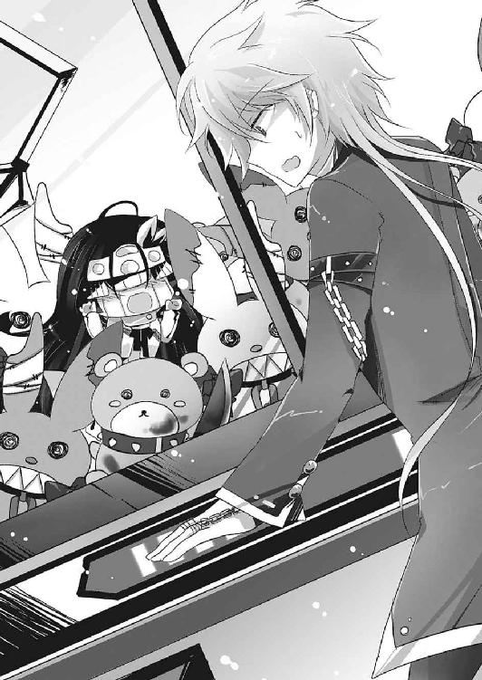
............。
さらに一〇分後。
なんと、光一は見事にゾンビウサギをゲットしていた。
トイレから帰ってきた奏麻はおおはしゃぎで喜んだ。
「さっすがキャッチ・アンド・佐藤れすね！」
「キャッチャー・ザ・ライトだ！ フ......まあ俺にかかればこんなものよ」
顎に手を当ててドヤ顔をしてみせる。
これが、投資金額が六〇〇〇円をオーバーしてようやく取れた男の顔である。見栄を張っているが、内心財布の中身が気になって仕方がないのは言うまでもない。最後の最後でゾンビウサギだけではなく隣にあった殺戮クマちゃんまでも取れたのは予想外の戦果だが、それでも六〇〇〇円はかなり痛かった。
「ほれ」
ひとまず取れたので良しとして、光一はゾンビウサギ人形を奏麻に投げてよこした。
奏麻は反射的にキャッチして、驚いた顔をする。不思議そうな目が、ぱちくりと瞬きをしている。
「あん？ なんだよ、それ欲しかったんじゃないのか？」
「......くれるんれすか？」
奏麻はきょとんとしている。
光一は当然だろうという顔で頷いてみせた。
すると奏麻は、いきなりボロボロの制服のポケットをまさぐった。
「えーと、お金」
「......は？」
「お金、払いまふ」
「い、いや、いらん。くれてやるって言ったんだ、男に二言は無い」
「......タダ？ あんなにいっぱいお金使ったのにれすか？」
「ぐっ──そうだよタダだよ！ プレゼントしてやるって言ってんだ！ お前は黙ってもらってりゃいいの！」
いきなり律儀になった奏麻に調子を狂わされて、光一は胸を張って大声で言った。
奏麻は、やはりびっくりした顔で人形と光一の顔を見比べた。
そして、しばらくしてから、
「......えへへぇ」
本当に嬉しそうに人形を抱いて、頰を染めて笑みを浮かべた。
ドキリとした。元々黙っていれば可愛い顔をしていたし、やたらとトランスしている性格を抜きにすればかなりの美少女だ。まさか笑顔がこんなにも自然で可愛らしいとは思いもしなかった。
「わらし、いつも奪うか奪われるかのどっちかだったから、人からプレゼントされるのって初めてなんれす。結構、嬉しいもんれすねっ」
「変な奴だな。奪うか奪われるかって......どんだけサバイバルな世界の住人だお前は」
「あー、見ての通り、わらしハーフなんれすよ。目の色違うれしょ？ 育ったのは日本じゃないんれす。どことどこの混血かはわらしも知らないんですがに、育ったのがそりゃもう治安の悪い国れして、アウトローな生活を送っていたんれすよ～」
まいっちゃいまふよね～、と奏麻はケタケタ笑った。
......なんだか突拍子もない話を聞いてしまった、と光一は思った。電波女の言うことなので十中八九噓だろう。やはり変な女である。
奏麻は、人形に頰ずりをしてとても嬉しそうだった。アルルが子犬ならば、この奏麻という少女は猫だな、と光一はなんとなく思った。
なんだか和んでしまいそうになったが、自分が拉致られたことを思い出して、すぐに警戒心を取り戻す。
「それより......そろそろ話してもらおうか。貴様、俺に何の用だ？」
「んに？ ただデートにお誘いしただけれすけど？」
「噓をつくな。貴様に屋上で会った後、俺は生徒名簿を調べたのだ。そうしたら、月陽奏麻などという生徒は雨鶴来高校には存在していなかった」
「............」
「貴様......何者だ。返答によっては......」
光一は制服の裾を翻し、指先を弾く構えを取った。散々一緒に遊んでおいていまさらである。
奏麻はいきなりバトルモードにシフトした光一を前にして、目をぱちくりさせてみせた。
「ありー？ わらし、話してなかったれすか？」
「何をだ」
光一が問う。
すると奏麻は、自分を指さして、
「わらしも君とおんなしシェードの一員。んで防諜班の班長なんぞやってるんれすよ～」
──あっさりと、とんでもないことを口にした。
光一の目が点になる。
「..................................................................................................................................................................は？」
「だからぁ、わらしは防諜班の班長なのれす。ネメシスは《魔女》。通り名は......ふふふぅ、聞いて驚いてくらさい──最終手段、なんて呼ばれてもす」
キリッ、とか、奏麻が光一を真似て決め顔を向けてくる。
光一は、はははまさかそんな、と笑い飛ばそうと思ったが、よくよく考えるとシェードやネメシスのことについて知っているのだから、一概に全否定はできない。
「あーその顔、信じてないれすね？ なら証明してあげますお！」
奏麻は再びポケットをまさぐると、中から小さな人形を取りだした。小型の薄汚れたフィギュアだ。ガシャポンで出てくるような、戦隊ヒーローの子供向けの人形だった。
奏麻はそれを......ぐしゃり、と手で握りつぶした。いきなりの行動に、光一は眉間に皺を寄せてその行いに嫌悪感を示した。
奏麻はニコッと笑って光一の顔を見上げ、ゲームセンター入り口付近に設置してある自動販売機を指さした。
そして、
「── Trick or Treat ──」
嫌に澄んだ声で奏麻がそう告げた瞬間、指さしていた自動販売機が突然稲妻のようなものを纏い──爆発した。
ゲームセンター内にいた人々の悲鳴が上がる。爆発自体は大したことはなかったが、大量の煙が発生して警報機が反応。
大騒ぎになってしまった。
「お、おまっ！ 何やって──」
「これがわらしのネメシス、《魔女》れすよ。性能は、自分が想像した魔法をそのまま具現化するって代物なんだにゃー。アンチテーゼは、生け贄。魔法を使用する前に、魔法の強さに応じて自分の大切なモノを破壊しなきゃならないんれす」
淡々と語り終えると、奏麻はえっへんと胸を張った。
「ぬふふ、これで信じてもらえたかなん？」
「こんな人目につく場所でネメシスを使用するんじゃねぇ！ 防諜班の班長のくせに何をバカなことをしてんだ貴様は！」
「お、信じてくれたみたいれすねー。よかったよかった」
「よくねぇよ！」
光一はすぐさま奏麻の手を摑み、猛ダッシュで遊園地から抜け出した。
遊園地を出て、なんとか人気の無い公園まで辿り着くと、光一は膝に手をついて深く息を吐いた。
そして振り向きざまに、
「アホか───ッ！」
奏麻に向けて目一杯の怒声を放った。
奏麻は「えー」と納得いかなそうな声を上げる。
「君が信じないのが悪いんれそー」
「だからってネメシス使うバカがどこにいる!?」
さっきそのネメシスを使って犯罪を犯そうとしていた男が言う台詞ではない。
「もっとやり方があるだろうが、ＩＤ見せるとか！」
「あ、それもそうれすね......はい、ＩＤ♪」
「いまさらだ！」
まだ息が整っていなかったのか、怒鳴った勢いでそのまま倒れるように公園のベンチに腰を下ろす。
奏麻はこちらをおちょくるように、ベンチの前の砂場で、人形を抱いたままくるくると回っている。
光一は盛大に溜息を吐いた。
「......んで、防諜班の班長が俺に何の用だ？」
言った直後に、光一はハッとした。
光一の中である推測が浮上した。薫や兎乃ですら知らなかった極秘の存在である防諜班班長が自分に接触を図ってきたということは、それはつまり......。
「もしかして──引き抜きか？ スカウトか？ 俺の活躍を見て、防諜班へ転属しないかという誘いにきたのだな？」
「......んにゅ？」
「いや悪いがその申し出は断らせていただこう。俺の仕事はあくまでアルルの守護、アルルの騎士だ。地位や名誉、階級や金は関係無い。俺はこの使命に誇りをもって挑んでいる。残念だが他を当たってくれ」
足と腕を組み、クールに言い放つ。完璧だ。完璧な断り方だ。俺は今最高にカッコいい。いつものように自分に酔う。
もちろんカッコいいなんて思っているのは光一だけだったし、同時にその推測はほとほと見当外れだった。
奏麻は砂場から一歩一歩光一に接近し、顔をのぞき込むように腰を曲げた。
間近に迫る奏麻の整った顔に、図らずも赤面してしまう光一。
「さっきも言ったけど、本当に君に興味があって、デートに誘っただけらよ？」
そんな、ドキリとするようなことを奏麻は言った。
奏麻は優しく両手で光一の頰を包み、ゆっくりと、顔を近づけていく。
「な、ななな、なななな!?」
狼狽する光一。キスされる。そう思うのは男なら正常だった。突き飛ばそうとするもできない。男としてそれはどうなんだ？ と思ってしまい、このまま流れに身を任せてしまいそうになる。
ところが、奏麻は鼻と鼻がくっつく距離まで顔を近づけて、まじまじと光一を観察してから、う～んと低く唸った。
「なーんでコレが、ああいう風になっちゃったんれすかねぇ？」
「...............はい？」
実に意味深なことを呟いて、奏麻が光一から手を離す。
光一は拍子抜けしつつも安堵した。
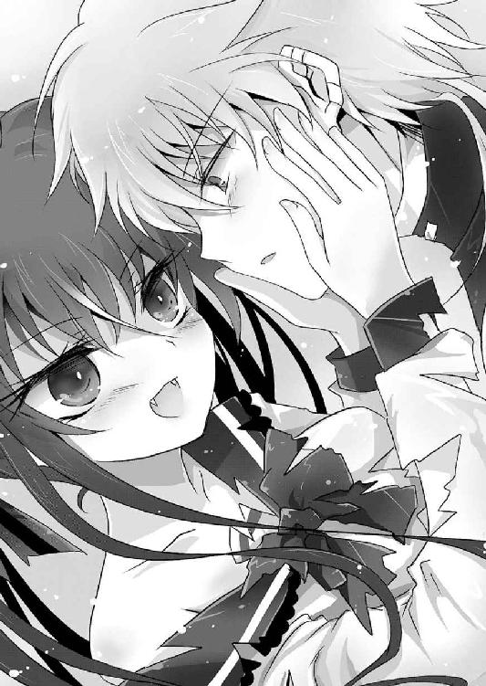
奏麻は謎の行動をした後、何かを考えるように唸っていたが、すぐに思考を放棄してあっけらかんと笑ってみせた。
「まあいいや。今日は本当に遊びたかっただけなんれすよ。だからわらしの用事はこれでおっしまい」
用事が済んだからこれで帰る、と奏麻は言う。本当に気まぐれというか、よくわからない女だった。くるくると軽快にステップを踏んで、奏麻が遠ざかっていく。光一は、彼女に聞きたいことがあったため、引き留めようとした。
が、光一が呼びかける前に、奏麻は何かを思いだしたように、くるりと振り返った。
「そうそうっ、屋上の入り口にいた女の子、あれ君の幼馴染れすよねぃ？」
「......あ、ああ、そうだが......なんでそんなこと聞く？」
立て続けの意味深な問いに、光一は奏麻という人間がますますわからなくなった。
「あの子、わらしが君を連れて行く時、すごく寂しそうな顔してたれすよ。帰ったらちゃんと話を聞いてあげるといいれす」
人差し指を立てて、年上のお姉さん風にウィンクする。
そんな奏麻を見て、自分から拉致しておいて......と思わなくもなかったが、確かに彼女の言う通りではあった。奏麻に引きずられて階段を下る時に、ちらりと見えた広美の顔は、とても寂しそうだった。全てはこの電波女が悪いのは間違いないが、また傷つけてしまった。約束を忘れていたことといい......重ねて機嫌を損ねさせてしまったのは事実だ。
「君にとって、あの子は大切な人なんれすよね？」
「......ああ、まあな」
「だったらそばにいてやることれす。人間、いつ死ぬかわかったもんじゃないれすしね～」
くふふ、と笑いながら縁起の悪いことを言って、奏麻は人形を胸の前でギュッと抱いた。
「おにんぎょさん、ありがとれすっ。光一君のこと、わらし好きれすよ。二番目くらいにっ」
いきなり好きだと言われて、光一は一瞬思考停止してしまう。
奏麻は軽快なステップで公園の中を進み、手を振りながら去って行った。
残された光一は、ぽつんとベンチの上で放心するしかなかった。
「本当に......何だったのだ、あいつは」
奏麻のことについては、いろいろなことがわかったようで、全然わかっていないような気がした。それにしてもまさかあの電波女が防諜班の班長だったとは思いもしなかった。てっきり敵の刺客とかそういう類のポジションだと思っていたのだが、人は見かけによらないものである。
ふと空を見上げると、いつの間にか日が沈みかけているのに気づく。毬藻寮に門限は無いが、七時までに帰らなければ夕飯を食いっぱぐれてしまうので、光一はそろそろ帰宅することにした。いろいろ考えねばならないことがあるが、とりあえず今は休みたい。朝から怒濤の展開で疲れてしまった。
光一は一度大きなあくびをして立ち上がろうとした。
「──学校サボって遊園地でデートとは、いいご身分だな新入り」
足に力を込めてベンチから腰を浮かした時、突然肩を押し沈められた。
再びベンチに強制的に座らせられた光一は、慌てて後ろを振り返った。
「あ、あんたは......！」
「よう、ガキのくせに盛ってるじゃねぇか、俺も混ぜてほしかったね」
光一の肩を押さえつけているその男は、紛れもなく特務護衛班班長、斑坂介だった。
いつから背後にいたのだろう。坂介は音も気配もなく一瞬で光一の後ろを取っていた。
「今日は次から次へと......あんたも俺に用があるのか？」
嫌そうな顔で光一は坂介を睨んだ。光一はどうにもこの男が苦手なのである。人のことを見透かしたような笑みや、おちょくっているような態度。心路とはまた違ったベクトルで光一と真逆なため、なんだか視界に入るだけで不快なのだ。
坂介は例の如く憎たらしい笑みを浮かべていた。
「お前さんはほんとに俺のことが嫌いみてぇだな」
「好きだっつったらあんた嬉しいか？」
「はっは、願い下げだねぇ。喜べ、俺もお前さんが嫌いだよ」
「............じゃあ話しかけてくるな。あんたが声をかけてくるということは、仕事がらみのことなんじゃないのか？」
「俺がここにいるのは、若者の男女の営みに対するおっさんのひやかし......と言いたいところだが、残念ながらそうじゃねぇ。察しがいいな、さすが俺の部下。んじゃ遠慮なくストレートにいくぜ」
坂介がそう宣言した直後、摑まれた肩への圧力が異様なほどに増した。光一は思わず息を呑んだ。
背後から発せられる、身震いするほどの殺気。明日菜のような獣じみたものではなく、人間らしい悪意に濁った殺意が光一の肩にのし掛かっていた。
「問うぜ......お前さん、月陽奏麻とはどういう関係だ？」
「？」
「噓はつくなよ。悪いが今日のお前と月陽の会話は全部盗聴させてもらっていた。誤魔化しても無駄だ。それに、尋問は俺の得意分野でね。お前さんの一挙手一投足が俺に噓かどうかを教えてくれる。さあ、答えろ」
「っ、どういう関係って、俺があいつと会ったのは今日で二度目だ。あいつが特務防諜班だと知ったのもさっきだぞ。関係を語れるほど深い仲じゃねぇよ」
「じゃあ、どうしてあいつはお前に接触を図る？」
「お、俺が知るかっ。こっちが聞きてぇよ。つかなんで同じ組織の人間なのに月陽について聞いてくるんだ？ 俺なんかよりよっぽどあんたの方があいつを──」
「質問していいと誰が言った？ ......次だ。オーロラについてどこまで知ってる」
「っ......新興宗教で、異能者集団で、アルルを狙ってる......このくらいしか知らん！」
背後の殺気にビビりながら、光一は半ばやけくそで真実を述べた。
噓は言っていないが、信じてもらえるかは別だ。嫌な汗が止まらなかった。
坂介は光一の頭上から静かに冷ややかな視線を向けてじっくりと観察していたが、そのうち小さく溜息をついた。殺気はそのままだった。
「............。どうやら白みてぇだな。妙な話だ、あいつは何が目的でお前さんに近づいたんだろうな？」
「だから知らねーって！ あいつは何なんだ？ 味方なんじゃないのかよ」
「味方か......お前さんほんと、明日菜ちゃんが言ってた通り青臭いな。あの女はお前さんが思っているほど単純じゃねぇ。シェードだって一枚岩じゃねぇんだ。それぞれがそれぞれの目的のために動いている。味方とか敵とか、んなもんで括れるほど単純じゃねぇんだよ」
言って、坂介は光一の肩から手を離した。
解放された途端、光一の精神にどっと疲れが襲ってくる。坂介は息を吐く光一に目もくれず、さっさと背を向けて去ろうとする。
「おデート中悪かったな。帰って幼馴染とイチャつくなり間宮と乳繰り合うなり好きにしろ」
「──待てよ！ 俺からも質問させろ。あんたはどうしてシェードに入った？ 司令や薫みたいにまっとうな理由があるとは思えない。どちらかと言えば能力泥棒と同じような理由なんじゃねぇのか」
散々疑われて、やり返そうという心持ちで坂介に問う。謎の多い男だったのだ、ここで情報を引き出しておくのも悪くない。
何よりシェードが一枚岩ではないのなら......こいつだって同じだ。
坂介は背を向けたまま吐き捨てるように笑った。
「まっとうな理由ねぇ。じゃ逆に聞くが、お前さんがアルルを守るってのは、果たしてまっとうな理由なのかい？ そもそもまっとうってのは誰が決めるんだ？ お前か？ それとも神様か？」
挑発するように言う。
さすがの光一もムカついたのか、大声で言い返した。
「間違えるなッ！ 俺が戦う理由はアルルを守ることだけではない！ 世界もアルルも両方救うことだ！」
「──じゃてめぇは、ここで何してんだ」
光一が豪語すると、坂介も同時に身体を反転させた。
振り向いた坂介の表情は、いつものニヤけ顔ではなく、怒りと軽蔑に歪んでいた。
「世界もアルルも両方救うんだろ？ それなら今までてめぇは何を成し遂げた？ 今この時、てめぇは何してる？ のうのうと日常を過ごし、女どもといちゃついているだけだろうが。両方救うってのは、そんなに甘っちょろいもんなのか」
低く、錆びついたその声は、光一の胸に突き刺さった。
夢の中で明日菜に言われたことと同じことを、坂介にも言われてしまった。
そこまで言うのならさっさと世界を救う方法を見つけろ......もっともな意見だ。
あれからすでに一ヶ月。
進展は一切無い。
「世界の滅びまであと三年......いやもうそろそろ二年か。それまでに成し遂げられんのか？」
「そ、それは」
「お前さん、明日菜ちゃんに世界の真相を聞かされたんだろ？ 一度世界は巻き戻っている。いいか、あの能登原明日菜でさえ失敗したんだ。救えなかったんだ。あいつはがむしゃらだったろうぜ、少なくとも今のお前よりはずっとな」
非難するような言葉は、いちいち光一の胸に突き刺さった。
坂介の真意は光一でも読み取れた。
つまりは、世界とアルルを両方救うなら、日常は捨てろということだ。安穏と過ごしている暇などない。日常を捨て、目的を遂行するために修羅となれ。
司令、能登原明日菜のように......。
一度目の世界で死んだ、光一のように......。
坂介のいちいちもっともな物言いに、光一は何も言い返せなかった。
「真相を聞いても何もできねぇ、まだ先のことだから明日がんばればいい......そう思ってんだろ。俺はな、お前のそういうところにムカついてんだ。口先ばっかりで、一歩も進めてねぇのに自分は正しいと言い張る。悔しかったら結果を出して証明してみせろ。デカい口叩くのはそれからだ」
坂介は再び踵を返した。
「班長として命令する。月陽奏麻には注意しろ。あいつはシェードの身内じゃねぇ......ただシェードに首輪をつけられただけの狂犬だ。向こうから接触を図ってきたら逐一内容を報告するんだ。いいな」
事務的な命令を言い残し、坂介が公園を後にする。
光一は自分の拳を額に押しつけて、歯を食いしばった。
「言われなくたって......わかってんだよ......ちくしょう......ッ！」
先の見えない戦いに、焦りは募るばかりだった。
光一は苛立ちの矛先を見つけられず、唇を嚙み締めて空を仰いだ。
毬藻寮に戻った頃には、すっかりと日は沈んで、渡り廊下には月明かり以外の光は存在していなかった。結局あの後あてもなくぶらついて、無駄に時間を潰してしまった。光一にだって、悦に浸る以外で一人になりたい時もある。
考えなければならないことがたくさんあった。
考えたとしても、いまさら悩んだりはしない。ただがむしゃらに世界とアルルを救えばいい、その決意は変わらない。けれど、どうがむしゃらになればいいのかがわからなかった。アルルを守っているだけでは世界は救えない。世界を救う方法には、見当がつかない。行き場の無いやる気は、ただの空回りだ。これでは口先だけと言われても仕方がない。
もっとがむしゃらにならなければ。
遊んでいる暇などない。呑気に日常を謳歌している場合ではない。
二つを救うなら、自分を捨てなければならない。
光一は自分の手の平を見つめて、ぎゅっと握りしめた。
「............あ」
下を向いて歩いていると、廊下の先に誰かが立っているのが見えた。
人影は黙ってこっちを見ている。
光一にはシルエットから、すぐに誰なのかがわかった。
「こんなに遅くまでデートしてたんだ......不健康だね、光一」
水色のスウェットを着た広美が、月明かりの中で静かに佇んでいた。ハンドタオルを手に持っているから、トイレに行った帰りなのだろう。
光一は微妙に気まずい気持ちになって、思わず目をそらした。
「別に......お前には関係ないだろう」
普段なら弁解するはずなのだが、今は誰とも話したい気分ではなかったからか、口調は強めになってしまった。別に悪気があったわけではないが、広美にそれが伝わるはずもない。ただ本当に、一人になりたいだけだった。
広美は、無言でこちらまで歩いてくると、光一のそばで足を止めた。
「何、その言い方」
「言葉通りだ。今、お前と話している気分じゃないんだ......悪いが、どいてくれ」
光一の冷たい言葉に、広美は目を細めて眉根を寄せた。
普段はこんな表情はしない。怒っているような、泣いているような......初めて見る顔だった。
「......何か、あったの？」
「関係ないって言ったろ。もう、ほっといてくれよ」
突き放すように言って、光一は広美の横を通り過ぎようとした。
すぐに右腕に引力を感じて、足を止める。
広美が、光一の上着の袖を摑んでいた。
「関係なくない......幼馴染だもん。心配くらいする」
「......心配してくれんのは嬉しいけどな、今は一人になりたいんだよ。だから離せ」
意思表示のためにぐっと腕を引っ張るも、広美は離さなかった。
「......嫌」
「離せ」
「..................嫌だ」
「っ──離せよ！」
感極まって、光一は思い切り腕を引いた。
拍子に広美の身体がぐらついて、肩を廊下の壁にぶつけてしまった。短い悲鳴を上げて、広美は肩を押さえた。
しまった。力が強すぎた。広美は顔を上げずに、ただ壁に寄りかかったままだ。気まずい空気が流れる。
今のは俺が悪い。謝らなければ。
光一が声をかけようとした時、
「変わったのは......光一の方じゃないか」
下を向いたままの広美の口から、震えた声が漏れた。
いつもの冷めた口調ではなく、感情の籠った、悲痛な声音だった。
広美が顔を上げる。
広美は、泣いていた。昔と同じように、ぽろぽろと涙を流していた。
広美の泣き顔を見たのは、本当に七年ぶりだった。
「......噓つき」
それは、何に対する言葉だったのか。この時の光一にはわからなかった。
広美が走り去って行く。髪を振り乱して、女子寮の方へ。光一には、それを引き止めることができなかった。
伸ばした手が、虚しく空を摑む。
自己嫌悪はすぐにやってきた。
「......俺は......バカだ......」
口元に手を当てて、やっちまったと自己嫌悪。
自分の不甲斐なさに落ち込んでいただけなのに、広美にあたるなど言語道断。光一のポリシーに反する最悪の行動だ。
広美を泣かせてしまった。
その事実は、思いの外胸にくるものがあった。
「だぁぁぁっ、最低だぁぁぁ......俺はぁぁぁ......」
光一は、頭を抱えて自分を戒める。
情けない、情けない。カッコ悪い、カッコ悪い。
誰でもいい、誰か俺を殴ってくれ。
光一が自己嫌悪に苛まれ、そう思った直後、
「──ああ、まったく、今のお前は最低だぜ」
すかさず、背後から声がした。
意気消沈した顔で光一が振り返ろうとしたその瞬間、
「ホォォォ......アタァアアアアアアアアアアアアアアア！」
「──へん！」
大きく振りかぶった上での超絶右ストレートが、光一の左頰に炸裂した。
光一は、首から後ろへ五メートルほど吹っ飛び、ドリフト中の車のように地面を滑ってようやく停止。自称『殴られるのは慣れてるから大丈夫な男』である光一でも、この一撃は今まで味わったことが無いほどに強烈だった。
ぶっ飛ばされた瞬間に光一が見たものは、世紀末救世主的な出で立ちで拳を放った男の姿だった。
金髪チャラ男、東野一樹である。
一樹は光一が吹っ飛んだのを見届けて、バァンとポーズを決めた。
そして、
「佐藤光一──てめぇは俺を怒らせた」
ビシィっと光一を指さし、どこからともなくゴゴゴゴという効果音を響かせつつ、一樹は光一に言い放った。
横にはチダイも立っており、やれやれと溜息混じりに光一を見下ろしている。
「うむ。普段ならやりすぎだとひっぱたくところだが......今回ばかりはよくやったぞ、一樹」
「あいつを泣かせる奴ぁ、たとえ親友でも許さねぇ......なんてな！ 久々に本気出しちまった、現役の頃を思い出すぜ」
「それは思い出さんでいい。......おい、光一、生きているか？」
チダイが膝を曲げて、光一の頰をペチペチと叩いた。
光一は左頰を風船みたいに腫れさせて、もごもごと口を動かした。
「......もごもご（死んだ）」
光一のその反応を見て、一樹とチダイはニカッと屈託の無い笑顔を浮かべた。
「ほらよ、こいつで冷やせ」
寮門の段差に腰を下ろした光一に、一樹が自販機で購入した飲み物を投げて寄こした。
「さんきゅ......ってこれホットじゃねぇか！」
「ギャハハ！ 騙されてやんのバーカバーカ！」
一樹が両手をバンバン叩いて猿のように笑い転げる。
普段ならここで食ってかかる光一だったが、今回ばかりはやり返せない。全てにおいて自業自得なのだ。どんな仕打ちも甘んじて受けるしかなかった。
落ち込んだ顔で、光一は一樹が買ってきたおしるこのプルタブを引き開け、ひとくち含んだ。
「いちっ......」
「だはは、染みるか。それが青春の味だぜっ」
一樹が笑いながら光一の真横に腰を下ろし、その隣にチダイが座り込む。
三人は並んで、黙ってジュースを飲んだ。
別に気まずくはなかった。七年間のブランクこそあれ、幼馴染は幼馴染だ。幼少の頃を共に過ごし、バカをやってきたこの三人にとって、沈黙はさして気になるものではない。
昔っから仲が良く、毎日のように遊んでいた三人だが、同じくらいによく喧嘩もした。喧嘩をした後は、小さい頃からこうやって三人で黙ってジュースを飲み交わしたものである。一種の仲直りの方法というか、バカ三人のお決まりの習性といってもいい。
三人の間を沈黙が包む中、しばらくして、ようやく一樹が口を開いた。
「......俺ら二人はさ。別にお前がどんなことに首突っ込んだって笑って済ませてやるし、なんかあったらすぐに駆けつけて手を貸してやる。お前がやることだから心配はしてねぇし、ヤバくなったら全力で助けてやればいいと思ってる」
一樹はアルミ缶の底をコツコツと地面に打ち鳴らしながら、薄く微笑んでいた。
「でも広美はさ、そうじゃねぇんだ。お前が何かやらかす前からずーっと心配してるし、気になって仕方がないんだ。いつもあんな態度だけど、本当は過保護で、泣き虫で、心配性で、そんでもって嫉妬深い奴だ。お前もそれはわかってんだろ？」
「............まあ、な」
「俺もチダイも、最近、お前が妙なことに首突っ込んでんのは勘づいてたさ。明らかに様子が違ったからな......ここ一ヶ月は特によ。俺らが気づいてて、あいつが気づかないわけ、ないだろ？」
「............」
光一は黙って頷いた。さすが幼馴染というべきか、おちゃらけていてもよく光一のことを見ていた。
「あいつは昔っからそうだったぜ。いつもお前の後ろにくっついてたのは、心配だったからだ。泣き虫で弱虫だけど、お前のことが心配でたまらないから、がんばって追っかけてたんだ」
言われて、昔の広美の姿を思い出す。
いつも涙と鼻水を垂らして、スカートの裾をギュッと握って後ろをくっついてきていた。「コーちゃん待ってよ、危ないよ」が広美の口癖だった。
「つってもあいつは、お前を信用してないわけじゃないんだぜ？ なぁチダイ」
「うむ。光一は知らんだろうが、お前が引っ越してから、広美はお前の悪口を言う奴に食ってかかっていたんだぞ」
初耳だった光一は眉をぴくりと動かし、驚いて顔を上げた。
チダイは腕を組んで、目を瞑りながら昔の話を語った。
「お前は近所で目立っていたし、敵も多かった。そのせいで、引っ越した後になっても、悪口が絶えなかった。光一は口ばっかりだ、だの、光一は噓つきだ、だの、言いたい放題言われていたな」
今とたいして変わっていない、というより光一は昔からこの調子だったので、チダイの言う通り敵が多かった。光一が周りの連中にいじめられなかったのは、一樹とチダイがいたからだ。二人に守られていたからこそ、光一はヒーローだのなんだのと宣っていられたのである。光一も、今ではそれを自覚していた。昔ほどではないが、今も守られていると思う時が多々ある。
「俺達は好きに言わせておけばいいと思って何もしなかったのだがな......広美は、泣きながらいつも立ち向かっていたのだ」
「コーちゃんは噓つきじゃない！ コーちゃんは本当にヒーローなんだもん！ ってな」
女声でそう言って、あの剣幕はすごかったよなぁ、と一樹は笑った。
チダイは続ける。
「当然そんなことを言って回っていれば、広美もいじめのターゲットにされた。無論、俺達が守ってやったからいじめはすぐに収まったが、あいつにとって一番辛かったのはな......お前を馬鹿にされることだったのだ」
チダイが目を瞑ったまま、重い声でそう言った。
初耳の連続に、光一は言葉を返せない。あの泣き虫の広美が光一のために戦っていたことも知らなかったし、そこまで想われていたとも思わなかった。
「広美へのいじめは収まったが、お前を笑う奴は依然として多かった。広美は、俺達に気を遣って、そいつらに反論するのをやめてしまったが......きっと辛かったのだろう。何を言っても無駄だと察し、次第に今のようにあまりしゃべらなくなっていった」
「でも根は変わってねぇ」
一樹がすかさず口を挟んだ。
チダイが深く頷く。
「ああ。あいつはいつだってお前のことが心配だ。そして、泣き虫だ」
うんうん、と二人が頷き合う。
光一は、広美の言葉を思い出していた。
『私、変わってないよ』
ようやく、そうだったのだと気づく。広美は昔と何も変わっていない。夢の中で見た広美も、普段のクールな広美も、内面は何一つ変わっていないのだ。
よくよく考えればいつだって広美は光一のことを気にしていた。初めて非現実に遭遇した日、非現実が思っていたほど生易しくはなかったことに落ち込んでいた時も、広美は光一を気遣ってくれた。夢の中でもそうだ。いつだって、大丈夫？ と声をかけてくれた。
どうして気づかなかったのだろう。どうして思い出せなかったのだろう。
（俺は広美の、外見しか見ていなかったのだろうか......）
すっかり冷めてしまったおしるこの缶を、光一はぐっと握った。
一樹は静かに苦笑して、光一の肩を叩いた。
「なぁ光一......お前が非日常に憧れていて、それに向かって突っ走るのは、俺達は止めねぇよ。でも頼むから、非日常と同じくらいに、日常も大切にしてやってくんねぇか？」
照れくさそうに一樹は言った。
「お前にとっては、つまらねぇことかもしれねぇけどさ。でも俺やチダイ、そして広美にとっては、この日常が全てなんだ。俺達は日常が好きなんだ。お前のいる日常が大好きなんだよ」
チダイも一樹に倣って深く頷く。
光一は忘れていたのだ。日常のありがたさを。
長い間非日常を追い続け、ようやく求めていたものを手に入れた。それによって光一の生活は、非日常を重んじるようになっていった。挙げ句光一は、坂介の言葉によって、日常を捨てようとまでしたのだ。
日常と非日常、どちらが大切なのかを自問してしまっていた。どちらかを切り捨てなければならない。そんな風に思い始めていた。
光一は気づく。世界を選ぶか、アルルの命を選ぶか......光一が悩んでいる非日常と日常は、この選択と何も変わらないのだ。
（......俺にとっては、どっちも大切だ）
どちらも蔑ろにしていいものではない。光一は日常の大切さを嚙み締めた。こうして話を聞いてくれる仲間がいること......心配してくれる幼馴染がいることを、忘れてはならない。自分には大切なものがたくさんあるということを、胸に仕舞っておかなければ。
光一の顔に生気が戻ってくる。
坂介の忠告は、受け止めるべきところは受け止める。けれど日常を捨てはしない。怠けていると言われようが、腑抜けていると言われようが構わない。
日常を守るとは、日常を過ごすことと同じだと思うから。
「ま、時々でいいからよ。たまには後ろを振り返って、立ち止まってみてくれよ」
一樹が尻についた砂を払って立ち上がる。
「うむ。振り返ることは大切だ。お前がいない間、広美は散々泣いていたのだ。頼むから、あいつをこれ以上泣かせんでやってくれ」
チダイも立ち上がって、大きく伸びをした。
「まずはあいつとの約束を思い出すこったな。あいつとの仲直りはそこからだぜ。お兄さんの助言だ、ありがたく受け取れ」
一樹はそう言い残し、バチコーンとムカつくほど爽やかなウィンクをして、チダイと一緒に寮の方へ戻っていく。光一も二人に続いて寮の中へ戻った。
何一つ解決などしていないし、相変わらずお先は真っ暗だ。
けれど光一の心の不安は、すっぽりと抜け落ちていた。
光一は、先を歩く二人の背中を眺めて、しみじみ思った。
こいつらが俺の親友でいてくれて本当によかった、と。
Replay ３ されど汝はひとでなし
自分の息づかいが獣じみたものに変わっていくのがわかった。
身体の作りは常に変化しているため、元の形に戻す作業を延々頭の中で繰り返す必要があった。肉体は命令を聞かずに暴れ出し、精神は途切れ途切れになっていく。
それでも明日菜は、『私は人間だ』と言葉を脳内で反芻して、なんとか人の形と精神を保ち続けていた。
「コーイチ、どーした？」
自分の胸の中でパンを齧っていたアルルが、顔を上げてこちらを見てくる。
明日菜は辛そうに微笑んだ。
「......大丈夫だ......何でもないよ」
安心させるように呟くと、自分の声が想像以上に弱々しいことに気づいた。
「すごい汗だ......どこか痛いのか？」
「少し雨に濡れただけだ。どってことない」
「ホントウか？ 噓はやだぞ」
「ほんとだよ......心配ないよ」
言いながら、頭を優しく撫でてやる。アルルはくすぐったそうに目を細めて、明るい笑顔を見せてくれた。
それだけで、明日菜の心は癒されて、身体の変異も止まってくれる。
もう長いこと、時間の感覚が曖昧だった。アルルと出会って、どれくらいの時が経っただろう。何年も経過したようにも思えるし、つい昨日出会ったばかりのようにも感じられた。
ただ記憶にあるのは、彼女を守るために戦い続けてきたということだけ。最初のオーロラの襲撃以後、彼らは昼も夜も構わずに何度も襲ってきた。明日菜はアルルを守るために、彼らをことごとく屠っていった。その都度、精神と肉体の浸食に苦しまされてきた。今ではもう、瞳の色は完全に漆黒に染まっている。腕と足も、根本が変異を始めていた。まるで疫病に感染したように、身体は黒く蝕まれている。
今いる場所は、雨鶴来市の学校だった。敵の手から逃れるために住処を転々として、この場所へやってきたのだ。明日菜はこの学校には見覚えがあった。確か、校名は雨鶴来高校だった気がする。雨鶴来市には彼女が通っていた女学院と、この雨鶴来高校しか存在しないため、たいして興味は無かったが覚えていた。廃墟ではあったが、幸い原形は留めていた。今いる部屋は、きっと音楽室だろう。中央には、朽ち果てたピアノが置かれていた。
「......コーイチ」
再び目を閉じてしまいそうになった時、アルルがふと名前を呼んだ。もちろん明日菜の名ではないが、アルルにとっては明日菜がコーイチだ。
「......ん？ どうした」
「ガッコウとは、どういうものなのだろうか」
窓の外をぼんやりと眺めながら、アルルは尋ねた。
「......学校に興味があるのか？」
「ヒロミやカズキの話では、人がいっぱいいて、みんなでおべんきょうをして、みんなでご飯を食べて、みんなでおしゃべりをする場所だったと聞いたっ。ホントウか？」
アルルが、目をキラキラさせてくる。
明日菜は微笑んで、昔のことを思い出しながら、アルルに学校について聞かせてやった。小学校や中学の頃の辛い思い出ではなく、希望を持って毎日を過ごしていた高校時代の話をした。今となってはどれも辛い記憶だが、アルルが笑ってくれるなら、自分の痛みなどどうでもよかった。
アルルは始終楽しそうに話を聞いていた。当然だろう。彼女には『木漏れ日現象』以前の記憶がない。つまり彼女の知っている日常は、この崩壊した世界での出来事でしかないのだ。崩壊前の生活に憧れるのも無理はない。
「......アルルは、学校に通ってみたい？」
「？」
「学校に通って......友達を作って......帰り道にみんなで遊んだりしたい？」
答えなどわかりきっていたが、明日菜はアルルに問うた。
アルルは、口を尖らせて考えるように唸ってから、笑顔で首を振った。明日菜にとって予想外の反応だった。
「ううん。そうできたらいいなって思ったことはあるけど、今はコーイチがいればそれでいいっ」
足をパタパタさせて、アルルは明日菜の胸に頰をすり寄せた。
涙が出そうになった。人から求められることなど、アルルに出会うまでは一度たりとも無かった。もちろんアルルが求めているのは明日菜ではなくコーイチだ。その点に関しては胸が痛む。自分はコーイチの偽者であるということは事実。
でも......。
「コーイチは、ボクとずっといっしょにいてくれるっ。ボクはコーイチがいてくれるだけで幸せだ」
今目の前にあるこの笑顔は、本物だ。
そしてこの笑顔を守りたいという自分の想いも、また本物だ。
罪深い自分にも、この安らぎを受け入れることぐらいは許されるはずだ。
「ああ......私も、お前がそばにいてくれれば......それでいいよ」
明日菜はアルルの言葉に気持ちを返すように、強く身体を抱きしめた。
いつまでもこの時間が続けばいい。もう世界を巻き戻そうとは思わなかった。ここにいるアルルは、今この時だけのものだ。巻き戻ってしまえば、目の前のアルルは失われてしまう。
世界が滅びるのならそれでいい。私はアルルを胸に抱いたまま、共に滅びよう。化け物である私にとって、それ以上の幸せは無い。
許されるなら......いや、誰にも許されないとしても、
私はコーイチとして、この先もアルルを守り続けよう。
「ずっと一緒......ずっと......一緒だ」
漆黒の瞳から、透明な涙が流れる。
胸に抱いた小さな光を抱きしめて、明日菜は瞼を閉じた。
いつまでもこの時が続くよう......心から願いながら。
されどその願いが、叶うことは無かった。
運命は変えられない。
宿命は避けられない。
まるであざ笑うかのように、絶望の時は悠々と訪れる。
守ると誓った、三ケ月後の一三日。
明日菜の願いは砕かれた。
「──オオオオオオオオオオオオオオオッ!!」
咆哮と同時に、地面を削り取るように右腕を天高く薙ぎ払う。右腕のつもりで振るったそれは、竜のようにうねり、地面を砕きながら敵を粉砕した。
学校に潜伏していた明日菜達はオーロラの総攻撃を受けた。オーロラ信者、総勢二〇〇〇名。能力者だけでなく一般の信者も武器を持って明日菜に敵対していた。
明日菜はアルルを地下倉庫に隠し、その入り口を守っていた。
誰も通しはしない。その意志を貫くために、明日菜は率先して能力を使用した。いつものように止める戦いをするのではなく、殺意を持って立ち向かっていた。そうしなければ守れないほどの軍勢が、雨鶴来高校を取り囲んでいたのだ。
薙ぎ払い、捻り潰し、ひたすらに滅ぼし続けた。
肉体はすでに黒い渦の塊となり、原形など留めていない。ただ中央に赤い髪を逆立てる悪鬼のような人型が存在するだけだ。
敵も必死だった。終末の迫る人類を救うため、あるいは自らを救うために、彼らは命を惜しまず立ち向かってくる。
今の明日菜は、まさに世界の敵だった。
それでも、構わなかった。
「守ル......必ず私ガ」
闘争本能は獣の意識を強化させる。既に自我はボロボロで、視界は赤く染まっている。
されど明日菜は止まらない。
ここで止まるわけにはいかないのだ。
「私ガ──アルルヲ守ルんだァァァァァァァッ！」
咆哮は黒き衝撃波となって、能力者達を一気に屠った。
その光景は、まるで地上にブラックホールが出現したようだった。呑み込まれた者は自分が死んだことすら気づかずに消滅を余儀なくされた。
ギリギリで自我を引き留めて、黒き渦の中で明日菜は目を開ける。
──まだだ、まだ終わってない。
明日菜は渦の中で、いまだ健在している人影を捕捉した。
あらゆる物を滅ぼす空間に、そいつは涼しい顔で立っている。
オーロラのローブを羽織り、髪を両サイドに結んだ奇妙な少女だった。彼女が着ているのは普通の信者が着るローブとは違い、幹部であることを証明する刺繡が施された、特注のローブだ。
オーロラの幹部とは即ち巫女を表す。
この三ケ月で明日菜はオーロラの巫女のほとんどを滅ぼしてきた。
ただ一人を除いて。
「くふ、くふふふふふッ......この時をどれほど待ったかにゃー......三ケ月ぶりれすかね、《怪物》さん」
目の前にいるのは、明日菜が殺しそこねたオーロラの巫女だった。彼女はオーロラの中で、唯一明日菜と互角に渡り合えるほど強力なネメシスを持っている。
少女の見た目は、以前とは少し異なっていた。彼女には右腕と左目が存在していないのだ。
「この時のために......わらしの大切なもの、たーくさん生け贄にしたんれす。これだけいっぱい供物を捧げたら、どんな魔法もわらしの思いのままれすよね......きっとそうれす。《怪物》を殺すっていう魔法だって......生み出せるはず......！」
狂気じみた琥珀色の瞳が見開かれ、少女が明日菜を捕捉する。
黒い渦の中であってもなお、その瞳は異様な輝きを放っていた。
「邪魔ヲするナ......アルルを守る......ワタシが......守ルんだ」
「あんらら、もうほとんど理性が無くなっちゃってるんれすね。勘違いしないでほしいれすにゃー、《一握りの希望》なんてもうどうでもいいんれす。わらしはねぇ《怪物》さん......」
少女が左手を後方へ振りかぶって、殺気を迸らせる。
明日菜も彼女に対抗するように、黒い渦の塊を倍増させた。
そして次の瞬間、
「守ル────ワタシが！」
「あんたと戦えれば──それでいいんれすよ！」
二つの力が真っ向から衝突した。
少女は左手の中央に太陽のような球体を出現させ、膨張させてから一気に明日菜へ向けて放った。対する明日菜は触手を出現させて球体を防ごうとする。
「きゃははははははは！ まだまだぁッ！」
休む間を与えずに、少女は連続で球体を発射。球体は受け止めていた触手を粉砕し、明日菜本体へ向けて接近する。
されど闘志という糧を得た《怪物》は、この程度の滅びなど容易く拒絶する。
「ＧＡＡＡＡＡＡＡＡＡＡＡＡＡＡＡＡＡＡＡＡＡＡＡＡＡＡＡＡＡ！」
黒い滅びの球体を発生させ、《怪物》は脅威を瞬時に無力化させた。
それを見て、少女はケタケタと笑う。
「楽しいねっ！ 楽しいねっ！ もっとやろう！ もっと殺ろう！ 世界が滅びるまで続けよう──ずっとずっとわらしと踊ろう！」
狂笑を振りまきながら、少女は凄絶なる魔法を連射する。まるでその姿は、力に酔う狂った魔女のようだった。
ぶつかり合う二つの力は、廃墟を、街そのものを破壊し尽くしていく。
生き残った人々を黒い渦が巻き込み、逃げようとする人々を魔法が虐殺する。意図的ではなく、単なる戦いの余波で人類最後の砦が滅ぼされていく。
そんな中であっても、明日菜はアルルのいる場所だけは守り続けていた。人々の命を捨て、世界を捨て、彼女はたった一つのものだけを守っていた。
アルルがいる地下倉庫。その空間だけは破壊しないように、全精神を集中させている。
彼女の中に残った自我は、たったのひとかけらだった。
アルルを守る。
アルルを守る。
黒く塗りつぶされていく意識の中、明日菜が思い描いたものは、アルルの笑顔だけだった。
全てが終わった時、明日菜は白くて何も無い世界に佇んでいた。
ここはどこだろう。私は、何をしていたんだっけ......。
首を傾げても、答えは見つからない。記憶が曖昧というより、自分が曖昧だった。
明日菜は白い世界を彷徨い歩く。自分でも思い出せないけれど、何か大切なものがあったのだ。それを捜さなければならなかった。
手探りで大切なものを捜す。白き世界はあまりに孤独で、明日菜は泣きそうになった。この世界には救いがないのではないかと、絶望しそうになる。
「どこ......どこにいるの......」
胸を締め付けられながら、必死に彷徨い歩く。
名前は思い出せないけれど、明日菜には確かに大切な人がいた。唯一安らぎを与えてくれる人がいた。
涙を流し、嗚咽に噎びながら......明日菜は、ようやく見つけた。
白い世界の中心に立つ、幼い少女の姿を。
「アル......ル」
少女の名前を呼ぶ。安らぎの名前を呼ぶ。
白い世界に微笑む、たった一人の救いに手を伸ばす。
やっと、会えた......。
幸福に胸を満たしながら、明日菜はアルルの頰に触れようとした。
されど──伸びた腕は、黒き爪を生やし、アルルの首を締め上げた。
「──ッ！」
視界が黒い渦に呑み込まれる。真実が頭の中に飛び込んでくる。
幻想は砕かれて、現実が目の前に広がっていた。
「ア......アア......！」
世界は《怪物》に呑み込まれ、すでに死に絶えていた。嵐のように渦巻く黒い塊の中で、絶望を祝福するように空から光が降り注いでいた。『木漏れ日現象』の特異点が発生しているのだ。
世界の終わりの中心で、忌まわしき光を浴びながら......自分の腕が、大切な人の首を絞めている。
明日菜は微かに再起した自我に呼びかける。
やめろ。
やめてくれ、と。
（誰か私を止めてくれ！ 誰か私を殺してくれ！ こんな結末は嫌だ......私はアルルを守るんだ......守らなきゃいけないのに......！ 一緒にいるって約束したのに......！ 嫌だ、殺したくない！ 嫌だ嫌だ嫌だ嫌だ！ アルル！ アルル──ッ！）
声は出ない。獣の咆哮が全てをかき消している。
明日菜の意志に反して、締め上げる腕に力がこもっていく。
獣の本能に抗いながら、明日菜は泣いた。もはや人の身体などどこにも残っていないというのに、異形と化した瞳からは、涙が溢れていた。
獣の流す涙が黒き風に流されていく。
自分を殺そうとするモノが泣いていることに気づいたのか、アルルがうっすらと目を開けた。
彼女は、獣に微笑んでいた。
いつものような屈託の無い笑顔ではなく、少しだけ悲しそうな微笑みだった。
「ごめん......ね」
彼女の口から漏れたのは、謝罪の言葉だった。
何故？ 何故お前が謝る必要がある？
謝らなければならないのは私の方だ。
約束を守れなかった。
ずっと一緒にいるって言ったのに......私はお前を殺そうとしている。
結局私は人ではいられなかった。
私は化け物だ。
私は怪物だ。
私は、お前を守れなかった！
「ごめんね......」
明日菜はアルルの言葉に首を振って否定しようとした。
黒き嵐は吹き荒れ、世界の終わりが迫り来る。明日菜にはもう何もできない。最悪の結末に対して、為す術など残されてはいなかった。
もはや、残されたのは絶望だけだった。
明日菜の自我が消えていく。
化け物になっていく。
絶望に呑み込まれていく中で、明日菜は少女の最後の言葉を聞いた。
「ごめんね......アス、ナ」
──。
────。
──────。
「」
獣の慟哭が全てを包み、そして世界は再び開始する。
Last Battle 奪われた日常
あれは、夕暮れ時だったのを覚えている。
「コーちゃん行っちゃやだぁ～～～！」
雨鶴来市を離れる日、家の前で広美が泣いていた。すでに車に荷物は積み終わっていたし、友人への別れも済ませた後だった。もちろん広美にも一言挨拶はしたはずなのだが、何故か今頃になって泣きながら玄関の前で待ち構えていたのだ。
泣きじゃくる広美を前に、光一はぎょっとした。
「げっ、ヒロミゴン、鼻水きったね......」
別れの日に見送りに来た幼馴染への最初の言葉がそれだった。
最低なガキである。
「うぐっ、ひっ、ヒロミゴンてゆーなー......うくっ」
「泣くんじゃねー、泣いた分だけ──幸せは逃げていくんだぜ？」
キリッ。
今俺すげーカッコいいこと言った、と悦に浸る光一。
「びええええええええええええええん！」
もちろん小学校低学年がそんなこと言っても説得力がまるで無い上に、同年代の相手では聞く耳を持つわけもなかった。
美学のわからねーやろーだ、と光一は顔を引きつらせて、ポケットからくしゃくしゃになったハンカチを取り出した。
「ハナかめ」
「うぇ？ ティッシュじゃないよ、これハンケチだよ？」
「うっせ。女が泣いてたら黙ってハンケチ差し出すのがクールな男なのだ」
でも～と悩んでいる広美の鼻に、無理矢理ハンカチを押しつけてやると、広美はぢーんと思い切り洟をかんだ。
洟をかみ終えた後のハンカチを嫌そうにしながらポケットに仕舞う。せっかくハンカチを犠牲にしてやったというのに、広美はすぐにまた鼻水を垂らしていた。
「うっ、うっ、今日、クリスマスイヴなのにぃ......」
「しょうがねぇだろ？ 親父の転勤のせいで予定が早まっちゃったんだからよ......」
「だってぇ」
「だってじゃねぇ。選ばれし者であるこの俺様でも、引っ越しの日時を変えることはできんのだ。これは宿命なのだ。ディスティニーなのだ」
口を尖らせて説き伏せるように言う。
光一だって雨鶴来市を離れたくはない。バカ二人組や広美と離ればなれになるのは光一だって望んでいない。これからは一樹達の守りが無い状態で自分を貫かなければならないのだ。いじめられやしないかという不安は、拭い去れない。
光一が仕方ないの一言で終わりにしようとすると、広美が恨めしい目でこちらを見てきた。
「コーちゃん、サンタクロースがいることしょーめいしてくれるって約束したのにぃ」
「............う」
「しょーめいして、みんなを見返してくれるって言ってくれたのにぃ......」
噓つきー、と広美がまた泣き始める。
そうなのだ。光一はサンタクロースを信じ切っている広美のために、サンタが実在していることを実証してみせると約束してしまったのだ。
事の発端は三日前だった。サンタはいない、サンタはお父さんだ、と酷いネタバレをしてきたクラスメイトに、広美は「絶対にサンタはいるもん！」と突っかかったのである。小学三年生になってもサンタを信じていると知られてしまった広美は、クラスメイトに馬鹿にされたのだ。
悔しそうに唇を嚙んでいた広美の姿に我慢できず、光一は皆の前で、
『サンタは俺の舎弟だぜ？』
キリッ、と大見得切ってしまったのである。当然のことながら、クラスメイトからは、じゃあ連れてこい、と言われてしまった。
光一も言ったそばから、どうしようという思いでいっぱいだった。ところが、直後に引っ越しの日がイヴに変更になったので、内心恥をかかずに済んでホッとしていたのだが。
「コーちゃんの噓つきー！ コーちゃんのほら吹きー！ コーちゃんのへたれうんこー！」
「誰がへたれうんこだ！」
「うわぁ～～～～～ん！」
......どうやら逃れられそうになかった。何をやっても広美は泣き止まない。
仕方なく、光一はまた見栄を張ることにした。
「よぉぉぉしわかった！ なら約束してやろうじゃねーか！」
光一は泣きじゃくる広美を指さして、その場で仁王立ちした。
ほえ？ という顔で鼻水を垂らしながら、広美が顔を上げる。
光一は、自信に満ちた笑みを浮かべていた。
「次俺が雨鶴来に帰って来るときは、サンタも一緒に連れてきてやるよ！」
実に胡散臭いドヤ顔で、光一はそう言い放った。
「うぅ......ほんと？」
広美は、泣き腫らした目を擦って尋ねた。
「ああ、俺は噓はつかねぇ」
「ほんとにほんと？」
「ああ、俺は約束を守る男だ」
ふふん、と自信満々に言い張って、光一は頷いた。
すると広美の顔がゆっくりと綻んでいった。
「うんっ......広美、待ってるよ。コーちゃんが帰ってくるの、ずっと待ってる！」
相変わらず鼻水を垂らしたまんまだったが、見慣れている光一ですら、彼女の笑顔はかわいいと思った。
光一は最後に、泣き止んだ広美の頭を撫でてやった。
広美は鼻水を啜って顔を赤くして、光一の顔を見ていた。
光一が車に乗って、雨鶴来市を去って行く。
広美は車が見えなくなるまで、ずっとそこで手を振り続けていた。
パチリと目を開けた瞬間、光一は飛び起きた。
「──ぅぅ思い出したああああああああああッ！」
そしてベッドの上で即座に頭を抱え、口元を引きつらせた。
夢の中で見た記憶を思い出しながら、光一は自分の交わした約束を口に出して呟いてみる。
「俺が帰って来るときは、サンタも一緒に連れてくる......」
そうなのだ。そうだったのだ。光一が引っ越しをした日はクリスマスイヴ、つまり七年前の今日だったのだ。
しかしまさかあの広美が......中身が変わっていないとはいえ、あの広美がこんな約束に執着していたとは意外すぎだった。あんな子供の頃の口約束、覚えていたとしてもいまだに実行してほしいと思っていたというのか、あの広美が。
こればっかりは覚えていなくてもしょうがないと思うのだがどうだろう......と、光一は自分を正当化させようとして、やめた。
『お前にとってはほんの些細なことだったのだろうが、広美のためを思うならきちんと思い出してやることだ。それが男としての責任というものだぞ』
チダイの言葉を思い出し、光一は拳を握りしめた。
くだらないものか。約束は約束だ。
たとえどんなに些細な約束でも、果たさなければ佐藤光一が佐藤光一ではなくなってしまう。
非日常を全力で突き進むなら──日常だって全力だ。
「フッ、サンタか......上等ではないか。この佐藤光一に不可能は無い」
パジャマハットを脱ぎ捨てて、光一はベッドから立ち上がった。
フッフッフと余裕の笑みを浮かべ、勝利を確信する。いったい何と戦っているのかはいささか疑問だが、彼にとって約束とは戦いだった。
「ふふふ、サンタか......サンタクロース......ふふ、サンタ」
顎に手を当てて、己が交わした約束を吟味する。
そして、
「................................................どうしよう、サンタ」
意外にも難題なことにいまさら気がつき、光一は床に膝をついた。
少なくとも光一の知り合いに空陸両用高性能トナカイを使役するボランティアお爺ちゃんはいない。
マジでどうすっかな、と考えあぐねていると、そこへ、
「──コーイチ起きろーっ！ もうクリスマスパーテーが始まっちゃうぞーっ！」
おもむろに部屋のドアを開け放ち、アルルがやってきた。
言われて時計を見てみると、時刻は既に午後四時半だった。昨日は約束を思い出すために夜通し起きていて、眠ったのは朝八時だったので仕方がない。今日は土曜日だから学校も休みなので特に問題は無かった。
「......どした？ コーイチ？」
「............いや、ところでアルルさん」
「んぅ？」
「知り合いに......サンタクロースさんとかいないっスかね」
ダメもとで聞きながら、光一が顔を上げる。
そこで初めて、アルルの格好を見た。
「......あ」
アルルの格好にヒントを得たのか、光一は目を見開いた。アルルが目をぱちくりさせて首を傾げている。
「アルル......それ」
「？ これか？」
アルルが自分の身体を指さして、確認してくる。
光一は頷くよりも先に、聞くべきことを聞いた。
「......それの男用ってあるか？」
雨鶴来市のシンボルであり観光名所でもある電波塔は、東京タワーほど高くはないが非常に見晴らしがいい。夜になればライトアップされ、外から見ても美しい外観を持っている。
そんなタワーの頂点、本来ならば立ち入り禁止のその場所に、片手に本を持った青年が立っていた。
都市の上空は強風が吹き荒れているはずなのに、青年の身体は絶妙なバランスを保ったまま微動だにしていない。それどころか髪や服ですら風に煽られていなかった。
「......始めよう」
青年は本を開き、その中の一節をゆっくりとなぞった。
瞬間、本と共に青年の身体が発光し始めた。
優しい青い光の中で、青年は薄い笑みを浮かべる。
「さあ、五六億目の犠牲だ......この世界は、俺に救いをもたらしてくれるだろうか」
その笑みはどこか自嘲染みたものであり、決して足搔く者達をあざ笑うような表情ではなかった。
青年は悲しげに世界を見下ろす。
地上では、鈴のような音色が一斉に鳴り響いていた。
雨鶴来市中央区、タワー周辺。
夜の空気に賑わう人々で溢れ返った大通りで、突然一斉に携帯電話の着信音が鳴り響いた。皆、何事かと辺りを見回し、自分の携帯電話を確認する。
半分は自分の携帯ではないと確認するや否や歩きだし、再び日常の雑踏の中へと消えていく。
されど、そのもう半分は液晶画面を見た瞬間に一瞬だけ表情を失い、本文に目を通した。
「......どしたの、メール？ 誰から？」
急に顔を強張らせた友人を見て、女学生の一人が尋ねた。
「ううん、何でもない。あのさ、ちょっと野暮用ができちゃったから、カラオケまた今度ね！」
友人は両手を合わせてごめんねと言い残し、走り去っていった。
引き止める暇も無く去っていく友人の背中に、「何よいきなりー」と女学生は呟いた。
そこで女学生は、ふと周りを見た。
彼女は、同じように液晶画面を見て、友人と同じ方向へ走り出す者達が多くいるのに気づいた。
二次会への参加を断り、走り去っていくサラリーマン。配っていたティッシュを投げ捨てて、鬼気迫る表情で人ごみに消えていくバイトくん。その他にも多数の人間が、似たような行動を取っている。
周りの人間は誰一人気づいていないが、女学生はその異様な光景に首を傾げていた。
「あっちでなんかイベントでもやんのかな......？」
彼らの走って行った方向をぼんやりと眺めながら、女学生はさらに変だな、と思った。
あっちの方向は確か、業務施設や物流センターしか無かったはず。そんな場所で突発的にイベントが開催されるだろうか......？
女学生は若干の不気味さを感じたが、妙だな、と思う程度だった。
シェード本部司令室。
明日菜はもう一ヶ月もこの場所に籠っていた。夢の世界でネメシスを使用してから、アンチテーゼの余波は相変わらず収まらない。
明日菜は医療班からもらった精神安定剤をざらざらと口に流し込んだ。
普通の人間ならば死に至る量だが、死ぬことのできない明日菜にとってはこの程度では足りないくらいだった。こんなものは気休め程度にしかならないことがわかっていても、明日菜は貪るように薬を飲んだ。
「............」
水も使わずに胃に下して、口の中に残ったわずかな苦味に顔をしかめる。
明日菜は時折途切れる意識を必死に引き留めつつ、机の上に置かれた手紙を見やった。
可愛らしい装丁をした封筒だった。
お世辞にも綺麗とは言い難い丸文字で書かれた差出人名は、篠塚ルルル。
明日菜は手紙を手に取り、椅子の背もたれに体重を預けた。
『──アスナへ。明日コーイチたちといっしょにくりすますぱーてーをやります。おいしい料理や飲み物がいっぱいたべれます。キョージやウノ、カオルもよんで、みんなで楽しいことをいっぱいします。ぜひ、アスナもきてください。ボクは、アスナといっぱいお話がしたいです。ボクは、もっとアスナのことを知りたいです。アスナは、ボクを守ってくれている人だから、いっぱいいっぱいかんしゃがしたいです。ありがとうをいいたいです。だから、いっしょにご飯をたべて、いっしょにお話をしよう。あと、コーイチたちといっしょに、くりすますぱーてーをして、さんたくろうさんをほかくしよう！ しのづかルルル』
右腕の痛みと精神の衰弱が激しいというのに、明日菜はくすりと笑いを漏らした。
「まずは名前をちゃんと書けるようにならないとね......」
優しい声で、明日菜は呟く。
「でも......字を書けるようになったんだな」
弱弱しい動きで、手紙に書かれた文字をなぞる。
嬉しそうに、その手紙を読み返した。一字一句を大切に、胸に刻むように、何度も、何度も......。
何度も指でなぞるうちに、ポタリと、雫が手紙を濡らした。
自分が泣いていることに気づき、頰に指を当てる。
「はっ......一丁前に涙か......まだ人間のつもりでいるのか、私は」
自嘲しつつ、指に触れた涙を見て、自分の言葉を心の中で訂正した。
涙は、すでに墨のように黒く濁っていた。もうあまり、明日菜が明日菜でいるための時間は残されていない証拠だった。
明日菜は脱力し、項垂れながら右腕を押さえた。
「......行けるわけ、ないだろう......こんな私が」
瞳から、止め処なく黒い涙が溢れる。
アルルを殺し、巻き戻った世界で、明日菜は鬼になると誓った。アルルを守るためならば、どんなことでもしてきた。利用できるものは全て利用してきた......アルル自身でさえも、守るために利用したこともあった。
彼女を監禁し、七年もの間外界との接触を絶ち、孤立させてきた。アルルが外へ出ることを望んでいるのを知っていながら、明日菜はその願いを断ち切ってきた。
アルルとの接触を避けてきたのは、自分がアルルにとって一番危険であることを、当の本人が一番よくわかっていたからだ。
アルルに恨まれても構わない。
アルルに憎まれても構わない。
全ては守るために。
全てはアルルを死なせないために。
アルル自身の幸せなど考えず、徹底して彼女を閉じ込めてきた。
それなのに......それなのに......！
「どうして......どうして......私なんかを......」
アルルは明日菜を憎んでなどいなかった。
あれだけ非人道的な扱いをしてきたというのに、アルルは明日菜のことをもっと知りたいと言う。守ってきてくれたことに感謝しているという。
ありがとう、と、アルルは笑顔でそう言うのだ。
「う......ぁぁ......っ」
胸を締め付けられるような想いに、明日菜はうめいた。黒い涙が床を汚していく様は、まるで自分の血液が流れ出ていくようだった。
安らぎに浸りそうになる自分をひたすらに戒めた。
痛みに耐えなければならない。安らぎを拒絶しなければならない。自分に、アルルと会話をする権利は無い。彼女と共に楽しい時間を過ごす資格は無い。
心が落ち着くまでに、さほど時間はかからなかった。
全てはいまさらのことであると処理すれば、冷めた心はすぐに戻ってくる。
「............っ」
震える手で手紙を封筒に戻し、明日菜は引き出しにそれを仕舞った。
──と、その時。
突然デスクに設置された通信機のランプが光り輝いた。
明日菜は涙を拭い、即座に通信ボタンを押す。
「どうした？」
『地上の警備より司令へ入電です。つ、繫ぎます』
どことなく慌しくオペレーターは通信を切り替えた。
直後、耳元に爆音と悲鳴が飛び込んできた。
『こ、こちら警備！ 本部周辺を多数の能力者に囲まれ、攻撃を受けています！ 至急応援を！』
切羽詰った声で、警備はインカム越しに叫んだ。
明日菜の顔に、緊迫感が走る。
「能力者......？ 直接本部へ攻撃を仕掛けてきたのか？ 人数は？」
『地上の警備だけではもちそうにありません！ な、なんて数だ......こいつら全員──うわああああああああああ！』
「!? おい、どうした！ 応答しろ！」
『..................』
スピーカーからは、もう静寂しか返ってこなかった。
明日菜は目を細め、状況を整理する。
シェード本部に配置されている地上警備班は、決して脆弱ではない。構成している能力者はそれなりに腕の立つ者ばかりだ。彼らが苦戦を強いられ、なおかつ数が多いとなると、考えられる敵は一つしかなかった。
「オーロラ......」
最近動きがある可能性が高かったこともあり、恐らく間違いないだろう。明日菜も襲撃を見越して地上の警備は強化していたつもりだった。
が、まさか総力を結集させて押し寄せてくるとは考えていなかった。
シェードとオーロラが衝突するのは、双方にとって得はあまり無い。オーロラ側からしても、半分要塞化しているシェード本部に攻め入るにはかなりの犠牲を考慮しなければならないのだ。まして大掛かりな強襲であれば、一般人に情報が漏れる可能性もある。それはオーロラも本意ではないはず。
だが、そうまでして今この時総力戦を挑んできたというならば、彼らの目的は......。
「......アルルか......！」
シェードが《一握りの希望》を保護していたという事実が漏洩してしまった可能性が高い。
幸か不幸か、アルルは現在毬藻寮にいるはずだ。
明日菜は携帯電話を取り出し、寮で待機中の兎乃へ連絡を取った。
日はすっかり沈んだというのに、広美は学校のグラウンドを走っていた。
彼女は中学の頃から陸上部に所属しており、部の中でもトップクラスの足の速さだった。後輩からも慕われていて、他校からも注目されている選手だった。問題があるとすれば本人にあまりやる気が無いことと、幽霊部員なせいで顧問からの評判が悪いことだけだ。
今日は珍しく早朝から休日の練習に参加して汗を流していた。部活仲間や顧問は皆驚いていた。あまりにも珍しいことなので皆がどうしたのかと問うと、広美は「生理痛が酷いから」という理由で誤魔化した（誤魔化せてない）。
本当の理由は、何も考えたくなかったからだ。走っている間は何も考えないで済む。個人的なことでアルルの誘いを断り、八つ当たりしてしまったことや、光一の前で涙を見せてしまったことを思い出したくなかった。
練習はとっくに終わって、陸上トラックには広美しか残っていない。
広美は、トラックを一〇周ほど全力疾走してから、膝に手をついて息を落ち着かせた。
「はっ......はっ......」
足を止めると、すぐに昔の思い出や一昨日のことを思い出してしまう。
頭の中で、サンタに会わせると約束してくれた時の光一の顔がちらついた。
「............」
別に広美も、昔と違っていまさらサンタを信じているわけではない。広美にとって大切だったのは、約束そのものだった。約束を覚えているかどうかが大事だった。
大人になっても、広美の光一像は変わっていない。それは、光一が七年の月日が経っても全く変わっていないのと同じことだった。
佐藤光一。彼はバカだ。お調子者で、ナルシストで、いつだってええかっこしいだ。
でも口先だけではないことを、広美は知っている。いつだって、彼が本気でバカなことをしているのを、子供の頃からよく理解していた。
だから彼に憧れた。自分に正直で、自分のやりたいことを全力でやろうとする彼のことが好きだった。ずっと彼のことが見ていたくて、後ろを必死に追いかけていた。
広美は彼のことが守りたかった。バカなことを真剣にやると言っても、光一はよく無茶をする。怪我をされたら悲しいし、万が一死ぬなんてことがあったら泣くどころの話ではなかった。だから広美は、いつも彼のやらかすバカなことに付き合い、本当に危ないことをしそうになった時は、泣き喚いて止める役割を自分から進んでやっていた。
別に自分のために何かをしてほしいとか、思ったことは無かった。
そばにいられればそれでよかった。
でも、光一は別れの日に、たった一度だけ広美のために約束をしてくれたのだ。
嬉しかった。たったそれだけで、別れが寂しくなくなった。帰ってくるのを待つ気になれた。
待っている間、広美は光一の名誉を守った。光一は噓つきじゃない。光一は口ばっかりじゃない。光一は約束を守る男だ。彼を馬鹿にする者がいれば、広美は歯を食いしばって立ち向かった。
だって、彼は約束してくれたのだ、次に会う時に必ずサンタクロースを連れてくるって。
「............」
広美は膝から手を離して、深く溜息を吐いた。
あの頃の自分を思い出して、今の自分を嫌悪した。
私は変わってない。光一にはそう言ったけれど、実際広美は変わった。あの頃ほど自分に素直になれなくなった。光一がいなくなって、彼の名誉を守ろうとする度に、他人の悪意を理解するようになって、そのうちに心は冷めてしまった。あまり自分を表に出さなくなっていったのだ。一樹やチダイの迷惑になるというのもあったけれど、もう半分の理由は、ただ単に自分の心が弱かっただけだ。
数年が経って、一樹から光一が帰ってくるという話を聞いた時は、嬉しかった。広美の中に、再び微かな期待が蘇ってきた。彼は、約束を覚えているだろうか。彼は昔と変わっていないだろうか。私はこんなにも嫌な女になってしまったけれど、彼は昔と変わらず私を受け入れてくれるだろうか。
「............っ」
広美の望み通り、帰ってきた光一は変わっていなかった。
相変わらずバカで、お調子者で、ナルシストで、真剣だった。
......けれど......。
「..................私......ばっかみたい」
彼は約束を、覚えていなかった。
淡い期待が消え失せて、結果はかすかな失望が残っただけだった。もちろん光一が悪いなんて思っていない。もう七年も前の約束だ、覚えていなくて当然だ。勝手に期待して、勝手に信じていた自分が悪い。去年もそうやって自己嫌悪したのに、今年もまた同じことを繰り返してしまった。もう期待するのはやめよう。
光一だって、そんなの迷惑なだけだろうし......。
広美は呼吸が落ち着いたのを確認して、再びトラックを走り出した。
何も考えなくて済むように、スピードを上げて走り続ける。
そうして、一周半ほど走り抜けた時、
遠くから、自分を呼ぶ声を聞いた。
「お～～～～～～い！ ひ～～～～ろ～～～～み～～～～～～！」
「...........................」
声の正体は考えずともわかった。
一瞬、また少し期待してしまった自分が嫌で、広美は走るスピードをさらに上げた。
「あ！ てめっ！ 待てこのやろっ！ 何故逃げるッ！」
光一は焦ったように声を上げて、広美の背中を追いかけてきた。
こういう時に限って、狙ったようなタイミングでやってくる光一に、広美はムカついた。
いまさら何をしに来たのだろう、と思った。どうせ約束を忘れてしまったことを謝りにきたに決まっている。謝られたって惨めになるだけだ。自分にだってプライドがある。いままで築いてきた冷めた女というスタイルは、簡単には崩れない。
だから広美は逃げた。
「ハァ......このッ......くそ......待てってばっ......ハァ」
段々と光一との差が開いていく。
仮にも広美は陸上部のエース。帰宅部の光一に追いつけるわけがない。
広美は本気だった。
本気で逃げていた。
......しかし、
「く──うおりゃあああああああああッ！」
──それ以上に、佐藤光一は本気だった。
いきなり急加速した光一が、広美の背中に迫る。光一は手を目一杯伸ばし、飛びかかる勢いで前へ出た。
そしてついに、広美のジャージの裾を光一は摑んだ。
その拍子に、
「捕まえ──たぁぁぁっ!?」
「っ──!?」
光一と広美はバランスを崩し、トラックの硬い地面の上に折り重なるようにずっこけてしまった。
ごろごろと抱き合うように転がって、埃まみれになりながら停止。
止まった時には、広美を押し倒すような形で、光一が上に乗っていた。
「うぐぁ......わ、悪い！ け、怪我無いか!? 足、大丈夫か!?」
自分の体勢に赤面してから、素のままの自分で広美の身を案じる。
一方広美は、目を見開いて、驚いた顔で光一を見ていた。
何故なら、光一の格好がいつもと違ったからだ。
......たとえるなら......いやたとえなくてもこれは......。
どう見ても......サンタクロースだった。
広美は怪我の有無を問われ、半ば放心状態で首を振って答えた。
光一が立ち上がり、広美に手を差し出してくる。広美は光一の手を取って、彼の姿をまじまじと見つめながらゆっくりと立ち上がった。
「............何、その格好」
もっともかつ、実にストレートな反応だった。
「フッ......これのことか」
広美の訝しげな視線を受けて、いつもの悦に浸った顔を決めてみせる。
「ずっと黙っていた真実を、今お前に明かしてやる......いいか、聞いて驚けよ」
光一はそう言って、大きく息を吸い込んだ。
そして、近所迷惑になりかねないほどの大声で、こう叫んだ。
「──俺がサンタだッ！」
シーン......と、誰もいないグラウンドに静寂が訪れる。
光一は、堂々と胸を張っていた。
なんともいえない木枯らしが二人の間を駆け抜けて、さらに状況の間抜けさに拍車がかかる。学校のグラウンドのど真ん中に、ジャージ姿の少女と、サンタ服を着た銀髪の少年。パッと見、意味がわからない。
もしこの場に関係の無い人間がいたら、光一の宣言に対してこう思ったことだろう。
......何言ってんだこいつ、と。
広美も例外ではなかった。叫ばれた瞬間は大いに面食らった。何言ってんだこいつ、とも思った。けれど光一のドヤ顔を見ているうちに、そんなことどうでもよくなって、笑いがこみ上げてきた。笑っちゃダメ、と思いながらも、口を押さえようが何しようが声が漏れてくる。
「ぐ......ぷ......ふふふ......くっ、あははははははは！」
広美は、ついに目に涙を溜めながら腹を押さえて笑った。
「笑うところではないッ！ 俺は真剣だ！ 俺がサンタクロースだ！」
「あっははははは！ 意味わかんないよ光一......ていうか、ここまでずっとその格好で走ってきたの？ 信じらんない......ぷぐっ、くふふふふふ」
「これはサンタの正装だっ。強化外骨格（？）だっ。いいか、そもそもサンタの起源というものはだな──」
「君がサンタなんだよね？ トナカイはどうしたの？」
「トナカイ!? あ、や、うん、奴は......療養中だ。ちょっと腰を痛めてな。『俺はここまでだ。必ず子供達に夢を届けてくれ......！』と涙ながらに俺に全てを託した」
「腰って......トナカイが腰って......ぐくふふふふ」
いろいろツボに入ったらしく、広美は下を向いて笑い、顔を上げたかと思えば再び光一の姿を見て笑った。
光一は、こんなに笑っている広美を見たのは本当に久しぶりだった。小さい頃はよく泣いてよく笑う子だったが、転校先から戻ってきてからは一度もお目にかかっていなかった。笑われているというのに悪い気はせず、光一の顔にも笑みが浮かんだ。
誰もいないグラウンドに、笑い声が響く。
広美が笑い疲れて息を整え始めた頃、光一はサンタ帽を取って照れくさそうに頭を搔いた。
「その......悪かったな。約束、忘れてて」
「............」
「失望させちまって、すまん。これじゃあ、約束を守る男なんて言えるわけないな......ほんと口ばっかりっつーか、付け焼刃っつーか」
「............違うよ」
広美は光一のそばまでやってきて、目を細めた。
「光一は、ちゃんと約束守ってくれたよ。口ばっかりなんかじゃない」
いつものように眠たそうな瞳だったけれど、広美の表情は極上に優しかった。
「ていうか......似合わない」
「なっ、俺だってこんな服趣味じゃねぇよ。それに俺に中年的なダンディズムが備わるまではあと二〇年くらい......」
「服のことじゃなくて」
広美が言葉を遮り、一歩前へ出る。
眼前に広美の顔が迫って、照れ隠しのために光一は視線を外した。
「光一は、自分で付け焼刃とか口ばっかりとか、言っちゃだめ。そういうの似合わない」
「？ なんだよそれ」
「光一はいつも胸張ってればいいの。失敗しても、躓いても、馬鹿にされても......カッコつけてればいい」
いつになく真剣に、広美は言った。
光一は、自分がいなくなった後の広美の話を思い出した。広美は、光一がいない間、彼の名誉を守っていた。馬鹿にする奴がいれば食って掛かっていたと、一樹は言っていた。それはきっと、今も変わらないのだろう。
だから、光一自身が自分を苛んでしまっては、広美の立つ瀬がない。約束を守らないのと同じように、広美を失望させてしまうことになる。
「ヒーローになるんでしょ......ヒーローは自分のこと、口ばっかりとか言わないよ」
優しく苦笑しながら、広美はこつんと光一の胸を拳で叩いた。
自覚するのはいい、でも口に出すのはダメ。広美が言いたいのはそういうことだった。口に出してしまったら、本当にそうなってしまうかもしれない。自覚しているのを言い訳にして、前に進むのを諦めてしまうかもしれない。弱い人間は、自分が弱いことを自覚していて、なおかつ諦めてしまう人間だ。
光一は、そうであってはならない。
「............そうか」
「うん、そうだよ」
「......そうだよな。似合わないよな。よし──ならば俺は俺を貫こうッ！ 俺は約束を守る男......否、約束を守った男だ！ さあ存分に誉め称え──」
「あ、でも胸を張るのと調子に乗るのは別だからね。そこのところ間違えないで。あといい歳こいて気持ち悪いものは気持ち悪いから、私は気持ち悪い時は気持ち悪いって言うからね」
「──えええええええ!? いままでのやりとりが台無しだ！ そしていまだかつて無いほどに気持ち悪いって言われた！」
許可をもらった瞬間に釘を打たれてショックを受ける光一。
広美は、口元に手を当ててくすくすと笑った。
不服そうな顔をしつつ、光一も苦笑する。
と、そこで光一は肝心なことを忘れていたことに気づいた。
「忘れていた。ちょっと待ってろ広美」
「？」
光一は広美の前でしゃがみこみ、背負っていた袋を地面に置いて中をまさぐり始めた。
お目当ての物が見つかったのか、光一は立ち上がって、無造作に取り出した物を広美の前へ突き出した。
「ほらよ......クリスマス......プレ、プレゼントだ」
こういうことに慣れていないので、光一の顔は真っ赤だった。
受け取った広美は、目をぱちくりさせていた。
「お前の好きだった......殺戮クマちゃんだ」
「............覚えてたの？」
「ま、まあな。一昨日、思い出して......その、ゲーセンで、あの......取ったもんなんだが......も、申し訳ない」
肝心なところで噓がつけない男。それが佐藤光一だった。
広美は少しだけ意地悪そうに、目を細めた。
「......ふーん、クリスマスプレゼントがゲーセンの景品なんだ」
「うがっ......しょーがねぇだろ!? 約束のことで頭がいっぱいで、ろくな物が用意できなかったんだよッ」
両手をわたわたとさせながら、必死に言い訳をする。
不満そうな目をしていた広美だったが、「冗談だよ」と付け足して、人形を胸に抱いた。
「嬉しいよ。ありがとう、光一」
大事そうに人形を抱く広美は、今までで一番の笑顔を見せてくれた。
光一は思わず息を呑んだ。
広美のことを女性として見ていなかったと言ったら噓になる。広美は、誰がどう見たって美人だし、クラスの男子連中からの人気もさりげなく高い。でも、綺麗だとか、美人だなと思うことはあっても、可愛いと思ったことは一度も無かった。
過去の広美と今の広美のイメージが融合して、光一の中の認識が少しだけずれた。
自分に素直になった広美は、こうも愛らしいというのか。
（まま、まずい......顔が......）
赤くなって仕方がなかった。
「？ どうしたの、光一？」
「な、なんでもねぇっ。それよりさっさと帰るぞッ。アルル達がパーティの準備をしてお前を待っているのだ。は、腹も減ったし、帰りの支度をしろっ」
「......？ なんでちょっと怒ってるの？」
「怒ってないっ。いいから早く着替えてこい、ヒロミゴン！」
照れ隠しに後ろを向いて、光一が歩き出す。
広美は、
「......ヒロミゴンてゆーな」
懐かしい口癖を呟いて、光一の後を追った。
約束を思い出すことができてよかったと、光一は心から思った。広美や一樹やチダイは、やはり光一には必要な存在だった。彼らは非現実な出来事との関わりは無いけれど、光一にとっての守る対象だった。
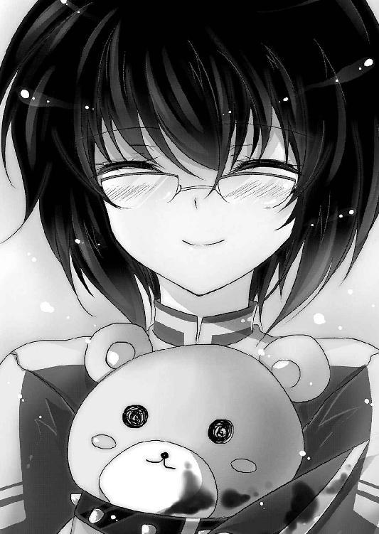
もちろん『木漏れ日現象』の予言、あと三年で世界が滅びるというのが真実であるなら、関係が無いとは決して言えない。《一握りの希望》が発動するにしても、この七年間培ってきた彼らの思い出が全て無に帰してしまうのだ。
どんなに辛いことがあったとしても、幼馴染との思い出がリセットされるのは絶対に嫌だった。
（救ってみせるさ......日常も、非日常も）
決意を新たに、光一は歩き出す。
広美が着替えている間に、こちらもあらかじめ袋に詰めてきたいつもの制服に着替えておこう。
光一は、袋に手を伸ばした。
その時。
どさっ......。
背後で何かが倒れた音がした。
「？ 広美、どうし──え？」
身体を反転させて、後ろを向いた瞬間、光一の顔が強張った。
さっきまで広美が立っていた場所に何故か、
「にゃっほ♪」
月陽奏麻が、箒を片手に立っていた。
一瞬、思考が停止する。広美が奏麻になってしまった、などとあり得ない考えが浮かんだ。
が、奏麻の足元に倒れている広美の姿を見て、光一は戦慄した。
「おまえ......なんで......!?」
「やはー、アドバイス通り仲直りしたんれすねー。感心感心。モテる男への第一歩成功れすおーキャハハ♪」
「何してんだ──てめぇ！」
広美は奏麻の足元でぴくりとも動かない。胸が上下しているところを見ると息はしているようだったが、完全に意識は無かった。
「広美に何をした！」
「だいじょうぶれすよ～。気ぃ失ってるだけれす」
「なんでこんなことする!?」
「あるぇー、坂ちゃんから忠告されてたはずれすよねー？ わらしのこと信用するなって言われてませんれした？」
奏麻に言われて、光一は坂介との会話を思い出した。
『月陽奏麻には注意しろ。あいつはシェードの身内じゃねぇ......ただシェードに首輪をつけられただけの狂犬だ』
確かにそう忠告された。
けれど、何故この女はそれを知っている？
「くふふ、わらしは元オーロラの巫女れすからねぇ。常に監視がついてるのは承知の上なのれす」
「!? お前が元オーロラの巫女!?」
「あれれ、そこまでは知らされてなかったんれすね」
舌を蛇のように出して、奏麻が光一を嘲る。
奏麻がオーロラの信者。そんな危険な人間がシェードで防諜班の班長なんぞやっている理由が光一には予想もつかないが、確かなのは目の前の女が敵だということ。
そして何よりも、広美を傷つけたということだ。
「......結局オーロラ側の人間......また元の鞘に収まったってことか......！」
光一が身構えて指を弾く構えを取る。
奏麻はオーロラ側の人間と言われて、顎に指を当てながら口を尖らせた。
「んにゃ～？ それはどーかなぁ......んー、わらしとしては、ちんたらやってる《怪物》さんの背中を押してやったつもりなんれすけどねぇ。あのしとのやり方じゃあ、どうやってもアルルたんも世界も救えまてんし。このまま放置したら全部滅んじゃうから善意でやらかしてるつもりなんれすけど」
意味深なことを口走っているが、光一には一切理解できない。
今の光一は、怒りでそんなものに耳を傾ける余裕は無かった。
「貴様は広美を傷つけた時点で俺の敵だ！」
「ありゃりゃ......敵にされちった」
「広美から離れろ──さもねぇと容赦しねぇぞ！」
光一が指を奏麻に向けて弾こうと、半身を引く。
しかし、光一の動きよりも早く、奏麻は光一を鋭い動きで指差した。
「── Trick or Treat ──」
瞬間、光一の身体はまるでビデオ再生を一時停止したかのように固まった。
「......っ!? ......！」
慌てて動こうとするも、身体は一切動かない。指どころか、舌すらも動かず、息すらもできない。
奏麻は光一にウィンクをしてみせた。
「安心してくらさい。三分もすれば硬直は解けるれす」
「......！」
奏麻は片手で軽々と広美の首根っこを摑んで、ひょいと持ち上げた。
光一の視線が、広美を放せと叫んでいる。
「そんな怖い目で見ないれくらさい。これも自業自得っていうんれすかね？ わらしだってこんなことしたくてしてるわけじゃないんれすよ？ ある人の命令で仕方なく、れす」
箒にまたがりながら、奏麻は狐のように目を細めて口元に弧を描かせた。
「......君に会いたがっている人がいます。この子を返してほしければ海沿いのコンテナターミナルまできてくらさい」
場所を指定したと同時に、奏麻の身体がふわりと浮き上がった。箒にまたがり空を浮遊する姿は、魔女そのものだ。
「......ぐ.........か......！ ぁぁ......あああ！」
光一は硬直から脱しようと力を込め続けた。
広美を助けなければ。日常を守ると誓ったのだ。ここで助けられなければ、本当に口ばっかりのただの噓つきになってしまう。
動け、動け、動け。
気合だけで、光一はようやく一歩足を前へ出した。
「わーお！ すごいれすね、絶対に動けないって設定の魔法だったんれすけど......」
「ま......て......ッ！ 広美は、関係ねぇ！ 俺と戦え！」
「んぅ......でもなぁ......君のことは好きらけど、戦ってもあんまり楽しそうじゃないのよねぃ」
奏麻は広美を箒の柄にひっかけて、さらに上昇。
光一から離れていく。
「必ず指定の場所に行ってあげてくらさい。この子のためにも、そしてあの人のためにも」
「待て......ぇ！」
必死に動こうとする光一を見下ろして、奏麻は少しだけ悲しそうに苦笑した。
「......がんばってくらさいね。君なら、もしかしたらあの人を救えるかもしれない。根拠はないけど、そう思うんれす」
最後に見せた表情と言葉の意味は、どういうものだったのか。
奏麻は光一に手を振ると、ばかばかしいほどメルヘンな星を撒き散らして、高速で空の向こうへ消えていった。
奏麻の姿が見えなくなった途端に拘束が解かれ、光一は反動で前のめりに倒れた。
止まっていた呼吸が再開し、身体が酸素を貪った。
「はっ......はっ......くそ......！ くそ、くそぉぉぉ！」
地面を叩いて、悔しさを吐き出す。
決意が「甘い」と言わんばかりに、現実は非情だった。力の無さを、改めて思い知る。気概だけではどうにもならないことをさっそく突きつけられた光一は、歯を食いしばるしかなかった。
けれど、まだだ。まだ終わったわけではない。
敵の目的はわからないが、光一をおびき出すために広美を使ったのだとすれば、そう簡単に殺したりはしないだろう。
しかし、何故自分と接触を図る？ 奏麻が事の発端でないのなら、いったい誰がこんなまどろっこしいことをしようというのだろう。
「......ええい、とにかく向かうまでだ！」
こんなところで悶えている時間はないのだ。場所は港のコンテナターミナル。気持ち的に走って向かいたいところだが、現実的に考えて車で向かった方が早い。
どこかでタクシーでも捕まえて......。
と、光一が駅前へ向かおうと決めた時、携帯の着信音が響いた。
この非常時に誰だと思い、携帯を取り出す。
着信相手は薫だった。丁度いい、彼女に応援を頼もう。いくら広美と仲が悪いとはいえ、薫は人情に厚い。手を貸してくれるはずだ。
「薫か!? いきなりですまん、実は──」
『佐藤！ 緊急事態よ！ 本部がオーロラの信者から襲撃を受けたわ！』
光一の救援要請を遮って、薫がとんでもないことを言った。
「何......？ 今、なんつった!?」
『オーロラの襲撃よ！ 本部は今信者に囲まれてる！ もの凄い数よ......アルルが危ないわ！ 今すぐ兎乃に連絡を取ってアルル達のところへ向かって！』
鬼気迫る薫の声を聞いて、光一は狼狽した。
オーロラの襲撃？ 本部が？ 何故そんな、いきなり......。
「ま、待て......順を追って話してくれ！ 今ちょっと、混乱してて......」
『話してる暇なんて無いわよ！ 今どこにいるの!?』
「......学校の......グラウンド」
『じゃああんたの方が近い。アルルを連れて雨鶴来市から脱出しろって、司令からの命令よ！ すぐに向かって！』
にわかに信じ難いことだった。
ネメシスに関することは部外秘......その鉄則はシェードと同じく、オーロラの教えにも存在していたはず。なのに、大々的に強襲を仕掛けるなんてことがあるだろうか。何かの間違いでは？
光一の頰を汗が伝った、その瞬間。
シェード本部が建っている物流センターの方面から爆音が轟いた。
視線を向けると、炎と煙が上がっているのが見えた。
「............噓、だろ」
携帯電話から薫の喚く声が聞こえているが、光一の耳には入らなかった。
シェードとオーロラの全面抗争が開始されたとでもいうのか？ このタイミングで......そんなことが起こり得るというのか？
「............俺は、俺はどうすればいい」
光一の中で、ぐるぐると思考が回る。
広美を助けるか、アルルを連れて雨鶴来市から逃げるか。そのどちらかの選択を迫られている。
日常と、非日常。
そのどちらもが、今崩れ去ろうとしていた。
「......っ！」
携帯を耳に当てたまま、光一は目を閉じた。
『佐藤ってば！ どうしたのよ！ ねぇ！』
「......薫、今どこにいる？」
『どこって......バイト先から《矛盾騎士》でダッシュで毬藻寮へ向かってる途中だけど？』
訝しげに、薫は答えた。
『ねぇ、どうしたのよ？』
「悪い。俺、先に行かなきゃならないところがある」
『は!? あんた何言ってんのよこの非常時に！ アルルが狙われてんのかもしれないのよ!?』
薫は激怒して怒鳴り散らした。特務班、ひいてはアルルの友人として当然の反応だった。
光一は目を細め、その怒声を受け止めた。
「............広美が、さらわれた」
『？ 広美って......なんで浅野が？』
「わからない。でもさらわれた以上、俺はあいつを......見捨てることはできない。そんな選択肢は俺には無い」
拳を握り、力強く光一は言った。
「だから行かせてくれ......アルルが危ないのは百も承知だ。俺が行かなきゃいけねぇってのもわかってる......でも広美は、俺の幼馴染だから」
『............』
「俺の大切な、日常だから」
すまない、と一言謝って、光一は顔を引き締めた。
「できれば早急にお前がアルル達のところへ行ってやってほしい......俺は」
『──あんたバッカじゃないの？』
返ってきたのは、あまりにストレートな罵倒だった。
これも当然の反応だろう。特務班にとっての急務はアルルの守護。何より、光一は一緒にアルルを必ず守ると薫に誓ったのだ。
怒るのも当然だった。
「......承知の上だ。それでも、俺は！」
許してくれとは言わない、黙って行かせてくれ、と光一は切実な想いを薫に伝えようとした。
しかし、
『なんでそれを早く言わないのよバーカ』
「......へ？」
『浅野がヤバいんでしょ？ そういうの先に言いなさいよね。わかったわよ。行ってきなさい。アルルのことはあたしに任せていいわ』
あっさりと、薫は光一の願いを受け入れてくれた。
思わず呆けてしまう光一。
「い、いいのか？」
『あのねぇ......あたしだって浅野見捨ててまでアルル優先しろなんて言わないわよっ。それにあんたに先に行けって言ったのは、あんたの方が近いって理由だけだし。朱里や兎乃はもうアルルのそばにいるしね』
「しかし、もしお前がたどり着く前に敵襲にあったら......ッ」
光一の言いに、薫はめちゃくちゃ不愉快そうに大きな溜息を吐いた。
『あんたさ......あの二人を舐めすぎ』
「だ、だが、朱里も桐咲も戦闘向けのネメシスは持ってないだろう？」
『それ言ったらあんたのネメシスなんてほとんどはったりじゃない』
「うが......」
図星。
『仮にもあいつらはあんたの先輩よ？ 正直あんたより優秀だし』
「そそ、それはいかがなものか!? お、俺だって」
『本当のことだし。ていうかあんたどんだけ自分を過大評価してるわけ？ それ素？ いつもの見栄じゃなくて素？ だとしたら救いようがない自惚れ屋ね』
薫に鼻で笑われて、光一はがくりと肩を落とした。
何もそこまで言わなくてもいいじゃない......と涙する。
『とにかく、アルルのことは心配いらない。車が無くったって、あたしには《矛盾騎士》がある。まだ人払いが済んでないから一般人に目撃されるかもしれないけど、この際仕方が無いわ』
鼻息をフンッと吐いて、薫は気合を入れたようだった。たぶん、無い胸でも張っているのだろう。
『だからあんたは安心して、全力で浅野を追いかけなさい。そっちが終わったら連絡頂戴、合流しましょう』
「......すまん、恩に着る」
『その代わり、ぜぇぇぇぇったいに！ ちゃんと助けてきなさいよね！ あの女だいっ嫌いだけど、死んだりしたら夢見が悪いもの。ダメでしたーなんて結果許さないわよ！ いいわね!?』
言われて、光一は嬉しそうに口元に笑みを浮かべた。なんだかんだ言って、やはり薫はいい奴である。
ここまで言われたからには、証明しなければならない。
期待に応えてこそ、ヒーローなのだ。
薫の激励に、光一は顔を上げた。
「──任せろ！ この俺に不可能は無いことを教えてやる！」
光一は電話の向こうの薫にそう宣言し、いつもの決め顔を炸裂させるのだった。
緊急連絡を受けた兎乃達は、誰もいなくなった大手デパート付近の路地で途方に暮れていた。
彼らが毬藻寮ではなく繁華街付近にいる理由は、パーティの買出しのためにデパ地下を訪れたからだ。買出しの途中で薫から連絡が来たため、こんな人目につく場所にいたのである。
「どどど、どーしよ～どーしよ～......あ、ああ朱里さんどうしましょう？」
「............」
兎乃がアルルを抱きながら、朱里矜持に助けを求めるような視線を送った。
矜持はタキシードの蝶ネクタイを緩めて、細い路地の壁から大通りを覗いた。
《無人都市》の効果によって、街中に一般人の姿は無い。ゴーストタウンのような静けさが広がっていた。
しかし、時折忙しなく集団で動いている者達が窺えた。
緊急連絡の内容はオーロラ信者の本部強襲。そして《一握りの希望》の情報が漏洩した危険性があるというものだった。
あの走り回っている集団がオーロラ信者なのは間違いない。接触は避けるべきだ。
「......見つかるのは時間の問題。毬藻寮へ戻るのも危険。途中で発見されればどうにもできないと思う」
「あわ、あわわわわわわ」
「......間宮が合流するまでは、動かない方がいい」
矜持は顔を引っ込めて、携帯を開いた。
兎乃は高速でボタンを操作する矜持を見つめながら、挙動不審に辺りを警戒している。
「だだだ、大丈夫ですからねアルルちゃんっ！ アルルちゃんは、う、うの、うの兎乃が必ず守ってみせ、みせま、みせます！」
「うんっ、アルルは大丈夫だ。ウノとキョージがついていてくれるから全然平気だぞっ」
いつになくテンパっている兎乃を、逆にアルルがあやしていた。
矜持は携帯の操作を終えて、黙ってアルルを見た。兎乃の頭を撫でるアルルの横顔を、じっと眺める。
「どうしたキョージ？ ボクの顔に何かついてるか？」
アルルが不思議そうにしている。表情は明るい。けれど矜持は、アルルの微妙な変化をすばやく察知し、心情を把握した。
「......クリスマスパーティ、残念だったね」
矜持の言葉に、アルルはきょとんとしていたが、しばらくして徐々に下を向き始めた。
そして虚勢を張っていた笑顔が崩れて、しょぼーんという擬音が似合うような顔つきになってしまった。
やっぱりか、という顔で矜持はアルルのそばへ歩み寄った。
アルルはまた無理矢理虚勢を張って、元気を出そうとした。
「残念だけど......仕方がないのだ。こんなことになってしまっては、クリスマスパーテーどころではないからな......だから、仕方がない」
しょぼ──ん......。
「............」
あからさまに落ち込んでいるアルルの肩に、矜持は黙って羽織っていたコートをかけてやった。その時の彼の表情は、実に悲しそうだった。
されど直後、矜持は再び大通りに視線を移した。
──怨念が籠ったような、凄絶な光を瞳に宿して。
矜持の目を見て、兎乃は「ひぃっ」と声を上げた。
「あ、あのあの、朱里さ......お、怒って、ますか？」
「............」
青い炎のように静かな怒りが、矜持の周りを覆っていた。
オーロラ信者──許すまじ。矜持の視線はそう語っている。
過保護を通り越してアルルを溺愛している矜持にとって、この状況は実に不愉快だった。
矜持はアルルを悲しませ、アルルを泣かせる存在を絶対に許さない。彼にとってアルルとは生きる意味なのだ。薫よりも兎乃よりも、誰よりも長くアルルと一緒にいたのは紛れもなく矜持である。それ故に、アルルへの想いは計り知れない。
アルルがクリスマスパーティを楽しみにしていたように、彼もまたパーティを心待ちにしていたのだ。彼のタキシード姿を見れば、どれだけこのイベントに気合を入れていたかは一目瞭然である。
アルルが笑顔を浮かべてくれる、アルルが喜んでくれる。それだけでこのパーティに参加する意味はあった。もっと言えば矜持がパーティに参加する理由はそれだけだった。
クリスマスプレゼントの超巨大テディベアも用意していた。サプライズイベントの打ち上げ花火ですら独自にセットアップしておいた。
それら全ての努力を水の泡にしたオーロラ信者を、矜持は絶対に許さない。
「......潰す」
「ひぃぃぃっ」
見返りを求めない男、朱里矜持。
彼のアルルへの愛は──まさにお兄ちゃんのそれだった！
「動かない方がいいとは言った......でも間宮が到着するまでに襲われない保証も無い......探査用のネメシスを使われれば、すぐにバレる」
「ま、まさか朱里さん......た、戦う気じゃ......」
「......もしものために、時間稼ぎくらいは必要だ」
幽霊のような不気味さでギロリと兎乃を睨む。
兎乃はガタガタと震えながら、アルルに抱きつくしかなかった。
「で、でも、う、兎乃達の能力じゃ、た、た、戦いなんてぇ～」
「もちろん真っ向から戦ったりしない......俺達には俺達なりの戦い方がある......」
矜持はそう言って、バッグからキャンバスと筆を取り出した。
「迎撃戦の準備だ──桐咲」
濃い隈ができた目をキャンバスに落として、静かに、静かに矜持は開戦の狼煙を上げた。
矜持達のいるデパート付近に、二〇人の能力者が近づいていた。五人はそれぞれがばらばらの格好をしていて、見た感じただの一般人に見えるが、表情は鬼気迫るものだった。
彼らの纏う殺気は普通とはとても言い難い。どこか狂気染みたものが、彼らの挙動からは感じられる。
「──信者以外の心音を感知。数は一つ。シェードの隊員かな？」
信者の一人が足を止めて他の者へ報告した。
「敵がシェードかどうかなど関係ない。信者以外の人間は全員殺していいと教祖様は言っていた」
「だが、もしその中に《一握りの希望》がいたらどうする？ 間違って殺しでもしたら我々の悲願は達成されない」
「金髪碧眼の女などそうはいない。確認すればわかることでは？」
眼鏡をかけた青年の一言に、皆が頷く。オーロラの信者は、基本的に信者同士での交流は禁じられている。任務や作戦が無い限りは、行動を共にすることは無かった。それなのに彼らの統率が取れているように感じるのは、ひとえに教祖と呼ばれる存在のおかげだと言える。
信者達は、教祖のカリスマ性に心酔し、自己というものを捨てている者がほとんどだった。故に、教祖によりメールで送信された任務を遂行するために、信者は全力を尽くす。実のところ、彼らは別に統率が取れているわけではない。命令に実直なだけなのだ。
命すら顧みない真っ直ぐな意志。神のお告げを心から信じているからこそ実現できる強靭な精神。
それら全ては、世界の救済のため。
「この道の向こう、反応が一つある」
信者の少女が、高級そうな洋服店の並ぶ通りを指差した。
信者達がお互いの顔を確認し合い、頷く。
「「「「「行こう」」」」」
声が重なり、信者達は一斉に一歩前へ足を踏み出した。
──瞬間。
ズルッ......。
「「「「「!!」」」」」
これまた一斉に、信者達は足並み揃えて地面に尻餅をついた。全員が眉間に皺を寄せて、またお互いの顔を確認する。
今度はそれぞれが別々に立ち上がろうと、地面に足をついた。
が、またもや一人が転倒。続いてさらにまた一人が地面に転がった。
転倒は止まらない。誰かが立ち上がり、歩き出そうとすればすぐに足を滑らせてしまう。
「......なんだ？」
明らかに偶然ではない。眼鏡をかけてダッフルコートを着たリーダー格らしき青年は、恐る恐るアスファルトの地面を手で探ってみる。
......何か、ある。目に見えない何かが、地面に転がっているのがわかった。
「............パチンコ玉？」
透明のナニカを拾い上げ、指でなぞるうちにその正体が判明した。完全に透明化していて輪郭すら見えないが、触れればわかる。
周りを見回すと、近くにパチンコ店があるのが確認できた。
青年は眼鏡を押し上げてから、足元に注意しながら立ち上がった。
「敵は透明化のネメシスの持ち主だ。進行方向に注意しよう」
彼の言葉に、今度は信者達が目を光らせて頷きあう。
敵のネメシスの性能が判明すれば恐れることはない。
皆がそう思っていた。
が、しかし。
「──いてっ」
「ぐっ！」
「ぬぁっ──がっ！」
進もうとすればするほど、透明化した謎の物体が目の前に立ちはだかった。
ある者は進行方向を壁のようなもので遮られ、ある者は柱のようなものに顔面をぶつけ、ある者は踏みつけた時のぐにゃりという生物じみた感触に悲鳴を上げた。そして気が逸れた直後に無造作に足を踏み出してしまい、またパチンコ玉で転倒。その繰り返しだった。
次第に、信者達の足取りは遅くなっていく。
額には汗をかき、顔は青ざめていく。最初は背筋を伸ばしていたのに、皆いつの間にか中腰になっていた。
まるで、闇の中を歩いているかのような姿だった。手探りで前を確認しなければ、恐くて進むことができない。
そう、彼らは明らかに、前へ進むのに恐怖していた。
透明化のネメシスを最大限に利用した罠だった。人は見えているからこそ自信を持って前へ歩くことができる。逆に暗闇の中であったとすれば、見えていないことに慣れて、次第に歩く速度は上がっていくことだろう。だが、見えているのに、視えていないこの状況は、暗闇の中よりも遥かに不気味で、恐怖を煽るのだ。
目の前には何もない......でも、もしかしたら透明な刃が待ち構えていて、胸を貫かれるかもしれない。そんな恐怖が、信者達の心を満たしていた。
ストレスは募り、息が上がっていく。統率の取れていた彼らのチームは、気づけばバラバラになっていた。
ところが信者達の不安もよそに、そんな状況は長くは続かなかった。
謎の障害物に翻弄されること七分ほど。透明化の効果が切れたのか、手前から一斉に元の状態へ戻り始めたのだ。
道を遮る物全てが視覚化した時、彼らは自分達を遮っていた物の正体を見て、落胆した。
パチンコ玉、電信柱、自動車、ぬいぐるみ、マネキン、箒、鏡などなど。恐れていたのがアホらしくなるほど、なんのことはない物ばかりだった。
「「「「「............」」」」」
信者達が、黙って姿勢を正す。黙ってはいたが、全員がそこはかとなく怒りのオーラを発していた。
特に眼鏡の青年は、こめかみに血管を浮かべている。
「心音は......？」
「道の先です。鼓動が上がっていますので、走っているのでしょう」
「......っ、追うぞ......！」
皆が頷き、走り出す。敵の能力に翻弄されたせいか、殺気立ちっぷりが半端なかった。
そして走ること五分。ようやくターゲットの背後を視認。
「追え！ 逃がすな！」
ターゲットの足は速くない。ピンク色の髪をした派手な少女を、信者達は捕食者のような勢いで追いかけた。
距離にしてあと一〇メートル。
先頭を行く一〇人が、ネメシスを発動させようと走りつつそれぞれの構えを取った。
──が、次の瞬間、彼らの見ていた世界が一変した。
先頭の一〇人の思考が、一瞬にして停止する。
皆が全員同じことを思った。
ここはどこだ？ と。
自分達は一瞬前まで街の中を駆けていたはずなのに、今この時は不気味な部屋の中にいた。
信者達は突然ワープしたのかと、焦りに焦った。
「......な、な......え？」
「!? !? !?」
「こ、ここは、どこだ!?」
周りにはビルもなければ店もない。信号や電柱はどこへ行ったというのか。
ここにあるのは、音を立てて揺れ動く巨大な振り子ギロチン。自動で開閉を繰り返すアイアンメイデン、天井のいたるところから垂れ下がる首吊り用の縄と錆びついた鎖の数々。他にも針椅子、ユダの揺籠、爪剝ぎ機、拷問車輪、ペリロスの雄牛、三角木馬、断頭台、ヘッドクラッシャー、電気椅子などなど、ありとあらゆる拷問、処刑器具がそこかしこに配備されていた。そのどれもがドロリとした赤黒い血に塗れており、床には白骨化した死体のようなものがごろごろと転がっている。
信者達は啞然とした。天井の鎖から滴る血が頰を濡らし、誰もが全身に鳥肌を走らせていた。ギィギィ、メキメキ、ガゴン、ガゴンという得体の知れない駆動音が、彼らの恐怖を倍増させている。そして何より不気味だったのは、その部屋の中央に立つ、悪魔のような顔をした少年だった。
「......《無能箱庭》へようこそ」
彼の印象は、まるでゾンビか吸血鬼だ。
「入場料はタダだ......楽しんでいってくれ」
ニィィ、と少年......朱里矜持の口元が弧を描く。
信者達の震えた身体が鞭を打ったように弾かれ、咄嗟にネメシスで少年を滅ぼそうとした。意識したのではなく、恐怖によって無意識に身体が動いたのだ。
信者達を、さらなる絶望が襲う。
「ネ、ネメシスが発動しない!?」
「なんだこれ!? なんだよ、これぇぇ!?」
信じられないとでも言うように、信者達の顔が引きつっていく。
「無駄だ。ここじゃネメシスは使えない......お前達はもう、俺の胃袋の中さ」
矜持が信者達に向かって、ゆっくりと歩み始める。
両手に──処刑刀を携えて。
「い、いやだあああああああ！ ここから出して！ 出してくれぇぇぇ！」
信者の一人が耐え切れずに逃げ出そうとする。他の信者も彼と同じように、叫びながらドンドンと鋼鉄の扉を叩いた。もちろん、扉は南京錠で施錠されていて外には出られない。
「俺の箱庭は入るのは簡単だが......出るのは少々難しいぞ」
「「「「「......ひっ」」」」」
「遠慮するな。遊んでけ。せっかくいい出来に描けたんだ。いろいろ試したい」
矜持は処刑刀をすり合わせて、火花を散らしながらずんずんと近づいてくる。
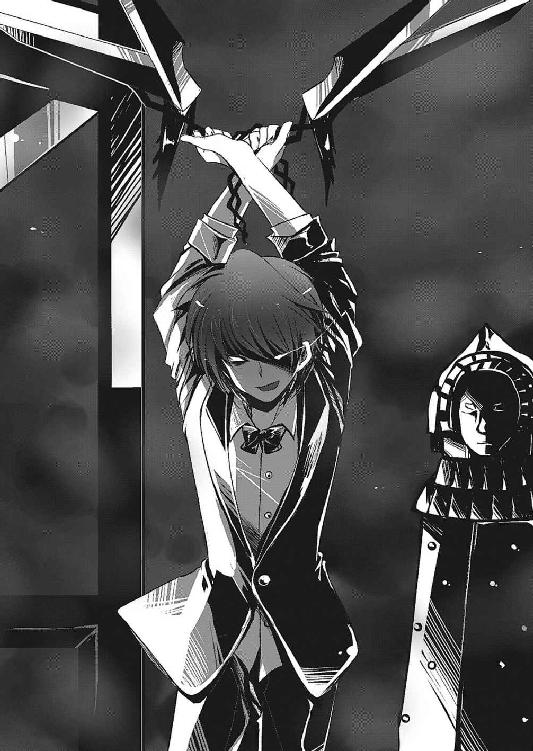
「俺は虚弱体質で肉弾戦は苦手だったが......どういうわけか刃物とは相性が良かったらしくてな。前の経験を生かして、少し訓練したんだ」
クックック、と、今までにないくらい楽しそうに、矜持は笑った。その笑みは、実に、実に猟奇的だった。
「なぁに、安心しろ、刃引きはして切れにくくしてある......死にはしないさ」
擦り合わされて火花を散らす処刑刀の刃は、矜持の言う通りまるでノコギリのように切れにくそうだった。
「死にはしないが、それはつまり長く楽しめるということだ」
「ひ、ひィィィ！」
「──堪能しろよ、狂信者ども」
矜持の狂笑が響いた瞬間、箱庭の中に絶叫が轟いた。
パーティを潰された矜持の恨みは、計り知れなかった。
「う、うわぁ......」
作戦通りに敵を罠にはめることに成功した兎乃は、透明化させたアルルの手を握りながら、箱庭の中から響く悲鳴に身震いした。
兎乃達の作戦は、実にシンプルなものだった。
まず《裏腹海月》によって古典的なトラップを道に仕掛け、透明化の効果が切れたら兎乃は敵を引きつけて走って逃げる。兎乃が指定した位置まで逃げてきた直後に、矜持が《無能箱庭》によってあらかじめキャンバスに描いておいた空間を敵の進路上に構築。空間そのものは外部からは確認できないため、まるで落とし穴に引っかかるように信者達は箱庭へ足を踏み入れる。
あとは矜持が好きに料理する、という寸法である。ネメシスが使えない空間では、刃物を持った矜持には敵わない。
「え、えげつないですぅ......」
兎乃のトラップも相当なものだが、矜持の真性ドＳっぷりは引くほど凄まじい。
残った敵は前方から聞こえてくる悲鳴に、全員足を止めていた。
「空間構築系のネメシスか......！」
「発動中のネメシスの分析完了。あの空間にはネメシスを無効化する作用が働いています。同時に一度足を踏み入れれば、能力者が許さない限り外へ出られません。空間範囲は測定できませんが、恐らく道の幅を覆っているのでしょう。直進しては危険です。別の道を探しますか？」
「悪魔の手先どもが......我らの使命を邪魔するか......！」
青年はその場に留まり、ダッフルコートを脱ぎ捨てた。
「構わん！ 空間に入ってはならないのなら、物理的に空間ごと潰してしまえばいいだけのことだ！」
青年は一度右腕を横へ広げてから、くいっと眼鏡を押し上げた。
「腐り堕ちろ──《腐食神話》！」
ネメシスの発動を呼びかけると、青年の前に赤褐色の巨大な液体の塊が出現した。
液体は大きくうねり、間欠泉のような勢いで近くのビルに直撃。
液体がぶち当たった瞬間、ビルの壁がじゅうじゅうと音を立てて溶け始める。見る見るうちにビルの下層が溶解し、通りに向かって傾いていく。
ビルは、丁度矜持の構築した箱庭の真横に建っていた。
「ま、まさか──いけない！ 朱里さん！」
傾き始めたビルを見て、兎乃が叫ぶ。
箱庭内部にいた矜持も外の地鳴りに気づき、拷問部屋の中で天井を見上げた。
（──しまったッ。まさか、ビルを倒壊させて物理的に押しつぶすつもりか！）
矜持の空間はネメシスを無効にし、取り込んだ物を閉じ込めることはできるが、入るのは簡単だと本人が言ったように、あらゆる物質を通してしまう。
矜持は即座に敗北を確信し、箱庭の形成を解いた。
「桐咲、逃げろ！」
アルルを連れて逃げろ。
叫んだ矜持の声は、倒壊するビルの轟音にかき消された。
同時刻。
雑居ビル群の屋上を蹴り、煌びやかな鎧を纏った女騎士が空を跳んでいた。
「急ぎなさい《矛盾騎士》！」
肩に乗った薫がそう命令すると、女騎士はさらにスピードを上げてビルからビルへと跳び移る。
薫は、逐一ＧＰＳでアルルの座標を確認しながら、女騎士に進行方向を指示した。
上空から見ると、オーロラ信者の拡散ぶりがよく見て取れた。大部分は本部に集結しているが、街をうろついている小規模なチームが確認できる。
「やっぱりオーロラの狙いはアルルなの......？」
だとすれば、情報漏洩の原因は何なのだろう。特務護衛班の人間が裏切ったとは考えにくい。だとすれば何かと不穏な空気を醸し出していた防諜班の連中だろうか？ 薫も、防諜班の班員に何人か知り合いはいたが、班長の顔を見たことがない。
さらに妙なことに、その数少ない防諜班の知り合いでさえ、班長について何も知らなかったのだ。いつも指示を下していたのは司令本人だったと言う。
防諜班班長......一番怪しい人物であるのは間違いなかった。
「......今はそんなこと考えたって仕方がない！ とにかく兎乃達に追いつかないと！」
座標が接近し、薫は地上に目を凝らした。
ＧＰＳの反応は確かにこの辺りを示している。
......どこだ、どこにいる？
薫の頰を汗が伝った、その時。
雑居ビルの内の一つが、突然軋みだして傾いた。
薫の中で嫌な予感が浮上する。
「《矛盾騎士》！ あそこへ向かって！ もっと早く！」
前のめりに身体を押し出して、薫は空を駆けた。
風圧に押し返されそうになりながらも、薫は突き進む。
そして座標の示す通りの上空へ飛び出した時、地上で戦慄している兎乃と矜持の姿を発見。倒壊したビルが薫の前方、そして矜持の真上へ迫っていた。
──薫は瞬時に精神力を爆発させた。
「《矛盾騎士》──佩剣解放！ バカでかいのをお見舞いするわよ！」
叫ぶと同時に、女騎士の握っていた剣の形状が変化する。
剣を覆っていた鋼が剝げ、中から青白い粒子そのものが溢れ出す。
薫が《矛盾騎士》にこの形状の剣、アロンダイトを使用させるのは今回でまだ二度目だ。パワー調整が難しい《矛盾騎士》は、フルパワーで攻撃を行えば家屋や建造物に甚大な被害が出るため、使用は控えていたのだ。
だが、今この時ならば使っても問題ない。
否、今この時だからこそ、使用しなければならないのだ。
「《矛盾騎士》──ぶった斬りなさいッ！」
突ではなく、斬。
命令を受けた《矛盾騎士》は、剣を両手に持ち替えて、大きく後ろへ振りかぶった。
『オオオオオオオオオオオオオオオオオオオオオオオオオオッ！』
美しき咆哮が轟き、閃光と化した斬撃が空間を断裂させる。
一瞬鈴のような音が響いたかと思えば、凝縮された爆音が炸裂。倒壊したビルの最上階を残して、その他全てを虚無の彼方へ置き去りにした。
吹き飛んだビルの最上階は遥か向こうの山へ直撃。矜持の立つ大通りには、破片一つ降ってはこなかった。
何が起こったのかもわからず、信者達は呆然と空を見上げる。
彼らの視線の先にあるものは、光を纏った美しき女騎士。
そしてその肩に乗る、騎士の主だった。
薫は女騎士に抱きかかえられながら、音も無く地上へ着地した。
「遅くなって悪かったわね、朱里」
「......相変わらず、ソレの破壊力は馬鹿げてる」
「あら、ありがと」
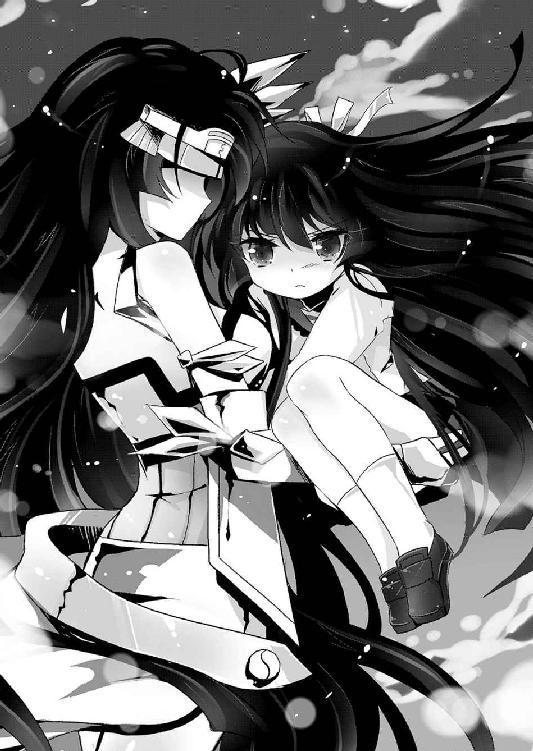
別に誉めてないのだが......と矜持は付け足そうとして、やめた。後が怖い。
薫は深呼吸をし、呆然とするオーロラ信者達の方へ身体を反転させて、しなやかな黒髪を右手で払った。
「──で？ あんた達、このあたしとやり合う覚悟はできてるんでしょうね」
鋭い、真っ直ぐな闘志が信者達を貫く。
空間を断裂させたあの一撃を見た今、彼らに戦意など残っているはずもなかった。
死すら恐れぬと言われていたオーロラ信者達の噂はいったいなんだったのだろう。その場に残っていた全員が、シェード最強を目の前にして、一目散に逃げ出していた。
薫は去っていく信者達を、涼しい顔で見送る。
「......いいのか？ 見逃して」
「別に見逃してないわ。あたしが追う必要が無いだけ。さっき上からアイツらの姿が見えたのよ」
「？」
矜持が首を傾けて、逃げていった信者の方を向く。
彼らの進行方向へ目を凝らすと、小さな人影が二つ、確かに見えた。
その二つの人影は、道を遮るように立っていた。
信者達が足を止め、前方の人影二人に驚愕する。
「ま、まさか......そんな......！」
眼鏡がずり落ちた青年が、間抜けな声を上げる。
オーロラの間では、彼らの名前を知らぬ者はいなかった。
異能者の狩人、最強のネメシスを持つ男......いったい何人の信者が、彼らの手によって捕らえられたことか。
恐れおののく信者達をさめざめとした目で眺めながら、
二人組、秋雨心路と澄波優はゆったりと歩き始めた。
「出遅れたようですね。朱里さんから連絡が来るのがもう少し早ければ、間に合ったのですが」
「問題ない。僕達が来なくとも、片はついていた」
「わたくし達の仕事は後始末ですか。損な役回りを担ってしまいましたね」
「君はいい。僕がやる」
「承知いたしました」
心路が前へ出て、半身を引く。
彼が戦闘の構えを取ると、信者達は振り返って逃げようとしたが、反対方向には小さな悪魔が控えている。
逃げ場が無いと悟った彼らは、涙と鼻水を垂らしながら、恐怖に塗り潰された瞳を心路へ向けた。
「シフトチェンジ──」
心路が両手を広げると、空中に数百という数の太い針が出現する。
そして、
「──《誘雷針》」
抑揚の無い声がネメシスの発動を宣告した瞬間、信者達は全てを諦めた。
雷鳴が轟いたのは、その直後だった。
信者達を一掃した心路達は、薫や兎乃達と合流した。
「あら、遅かったじゃない、能力泥棒さん達」
「上空で空間の裂け目みたいなものが見えたのでもしやと思いましたが......やはりあなたでしたか」
「一足遅かったわね～」
余裕たっぷりの笑みを浮かべて、薫は二人の前で人差し指を振った。
どことなく不服そうな優の横で、心路はアルルの姿を確認してから、薫に向き直った。
「説明してほしい。突然オーロラの襲撃が起こり、篠塚アルルが狙われた理由が不明瞭すぎる」
「あたしだってよくわかんないわよ......とにかくあたしらの任務は、アルルを連れて雨鶴来市を離れることらしいわ」
「それは能登原明日菜の命令か？」
「あの人以外に誰が命令できんのよ」
「............」
心路は明日菜の命令というところに何か思うところがあったのか、それ以上説明は求めなかった。
「命令ならば仕方がない。篠塚アルルを連れて、街を離れよう」
他のメンバーも特に異議は無かったため、雨鶴来からの脱出を決行することになった。
皆が歩き始めた時、
「あのっ......なあっ......」
アルルが足を止めて、皆を引き止めた。
全員が振り返り、どうしたのかと問う。
「コーイチは......？ コーイチは、どこにいるのだ......？」
不安そうな顔で、アルルが問うてくる。
「そ、そそそうでした忘れてました！ 佐藤さんは、ど、どうしたんですか!?」
「ああ、そういえばいらっしゃいませんね。忘れていました」
「いたな、そんな奴」
「......必要ない」
............酷い言われようだった。
皆の物言いに、アルルはぷくーっと頰に空気を詰め込んで怒りを示す。
「薫は!? 薫はコーイチがどこに行ったか知っていないのかっ!?」
問われて、薫は悩んだ挙げ句事情は話さないことにした。
今、広美がさらわれたことをアルルに話せば、コーイチの向かった方へ行くと言い出して聞かなくなるだろう。そうなれば任務は遂行できなくなるし、アルルの身が危険になる。
「あいつは......後から合流するわ」
「後からっていつだ？ コーイチは広美を探しに学校へ行っていたのだ！ もしかしたら、危ない目にあってるかもしれない！」
泣きそうになりながら、アルルは薫に縋りつく。
「あいつなら大丈夫。アルルはあいつのこと信じてるんでしょ？ あいつは後から合流するって言ったの......だから信じて待ってあげましょ」
「......うぅぅ、でも、でもぉ」
「大丈夫だから、ね？」
優しく頭を撫でてやると、ようやくアルルは納得してくれたのか、弱弱しく頷いた。
再び一行が雨鶴来市外を目指して歩き出すと、最後尾にいた薫は足を止めて、一度港のコンテナターミナルの方向を見つめた。
港の方向は街の明かりが無いため、闇に包まれている。
「......佐藤」
嫌な予感が胸を苛む中、薫は光一の名を小さく呟いた。
Replay After コンティニュー
「────」
眩い光の中で、明日菜は瞼を開けた。
「............」
視界に広がる現実に、声を失う。
明るい日差しは無慈悲に明日菜を照らし、街の喧騒は耳を侵す。
スクランブル交差点の中心に、明日菜は懐かしい女学院の制服を着て立っていた。
倒壊していないビル、点滅する信号、大手デパートの外壁にへばりつく巨大スクリーン、道を行き交う人々......そして若返っている自分の身体を順に目で追う。
目の前には、忙しなく過ぎゆく日常があった。
滅びる前の、雨鶴来市があった。
悲劇を知らぬ、世界があった。
明日菜は戻ってきたのだ、過去の世界へ。
「............」
明日菜は絶望に目を見開いたまま手の平を見つめ、己の中にいまだに蠢いている異質を感じ取った。
確かに感じる。まだ、明日菜の中には変わらず《怪物》のネメシスは存在していた。
変わらず......否。明日菜の中のネメシスは、さらに凶悪さを増していた。
「......なん、で」
疑問を口に出してみて、神の言葉が頭を過ぎる。
──汝は使命を背負いしまま過去へと時を遡り、未来を得ると同時にさらなる力を手にするであろう──
確かに神は、そう言っていた。
「............そうか......そういうこと、か」
使命とは、世界を救うという使命そのものではなかった。
使命とは──即ちネメシス。
神を騙る悪魔が授けた、奇跡とは名ばかりの呪いだったのだ。
虚しさに、明日菜は地面に膝をついた。
巻き戻る前の世界での浸食はリセットされていたが、《怪物》はいまだに明日菜の中にくすぶっている。
止め処なく流れる透明な雫に、明日菜は首を振った。
「いまさら......いまさら自分の身体がどうなろうとどうでもいい......どうせもう、私に人に戻る資格などない......」
肩を抱き、血を吐くように呟いた。
ここにはもう、絶望しかなかった。明日菜は、《怪物》が失われていなかったことがこんなにも悲しいのではなかった。そんなことは、もうどうでもよかったのだ。
「ネメシスを捨てられようと......世界を巻き戻そうと、ここにはもう......私の欲しいものは無い......」
巻き戻された世界の中心で、孤独に明日菜はむせび泣いた。
道行く人々からの奇異の視線を気にもせず、明日菜はただ泣き崩れる。明日菜にとっての一握りの希望は、失われてしまった。自らの手で、葬ってしまった。
明日菜の知っているアルルは、もうここにはいない。
巻き戻された世界に、救いなどどこにもありはしない。
雑踏が明日菜の嗚咽を搔き消して、日常が呑み込んでいく。通行人の姿が消えて、歩行者信号が赤になる。信号で足止めをくらっていた車が、蹲る明日菜にクラクションを鳴らしていた。
同時に、時刻を知らせる鐘が時計台から鳴り響いた。リン、ゴン、というその人工的に生み出された重苦しい鐘音は、クラクションに負けず劣らずの大音量だった。
鐘音に、ふと明日菜は泣き腫らした目を開けた。
ぞわりと浮上した焦燥感に、慌てて腕時計を見る。
時刻は正午の一時間前。
日付は五月一三日。
明日菜には、この瞬間が何を意味するのか、理解できた。
「............まさか」
五月一三日の正午。忘れるはずもない。
これは──最初の『木漏れ日現象』が起こった時刻だ。
「............」
明日菜は、地を蹴り、走り出した。
人混みをかき分けて、アテもなく街を疾走した。思考だけがぐるぐると回り、結論が出ないまま走り続けた。
（......なんで走る？ 過去に戻れば世界は救われるのではないのか？）
神は言った。過去に戻ることが、世界を救う唯一の手段だと。
しかし過去に戻れば世界が救われるなどとは一言も言っていなかった。
過去に戻り、世界を救う手段を探し出せと言ったのだ。
（『木漏れ日現象』が起こるとすれば、発生まであと一時間しかない。あと一時間だ。こんな短時間で、いったい私に何ができるというの？ 過去に戻って、それからどうすればいい？ 救ったところで何になる？）
焦りと疑問ばかりが募る中、明日菜は必死にできることを探した。
しかし、時間は刻々と過ぎていく。
一〇分、二〇分。容赦なく運命の時は迫っていた。
明日菜はどこへ向かって走ればいいのかわからなくなって、足を止めた。
自分には無理だ。そんな考えが頭の中に浮かぶ。
たった一人の少女すら救えなかったのだ。世界など救えるはずもない。
......たった一人の少女さえ......。
「......アルル」
呟いてみて、胸がちくりと痛んだ。
まだ『木漏れ日現象』が起こっていないのなら、《一握りの希望》を授かり、記憶を失う前のアルルがどこかにいるはずだった。
耳鳴りが響き、喧騒が消え失せる。
明日菜は静寂の中で、自分の戦いがまだ終わってはいないことを感じ取った。
迷いを抱いたまま、明日菜はゆっくりと歩き出した。
「アルル......どこだ......」
茫然自失の中、手探りするように手を前に出して、アルルを捜し回る。
「......アルル......！」
次第に歩調は速くなり、気がつけば明日菜は走り出していた。
自分の知っているアルルが、もうどこにも存在していないのはわかっていた。けれど、それが巻き戻された世界のアルルを見捨てていい理由になど、なるはずがない。
自分はアルルを殺してしまったのだ。自分が全ての元凶なのだ。
悲劇を繰り返すわけにはいかない。
まだ約束は果たされていない。
「アルル────ッ！」
ひたすらに。
ひたすらに叫び、守るべき人を捜す。
けれど決して手は届かなかった。
時間は過ぎ去っていく。
三〇分。四〇分。五〇分。
時は決して優しくはなかった。
世界は決して優しくはなかった。
現実は、いつだって突きつけられるものである。
空から降り注ぐ閃光に、明日菜は足を止めた。
『木漏れ日現象』は、一度目の世界と変わらずに起こってしまった。
人々の悲鳴が、賛美歌のように美しく街を彩っていた。街を行き交う人々は次々に地面に倒れ、明日菜は眠りゆく人々の中心で一人立ちすくんだ。
結局。
結局、私は誰も救えないのだ。何をしようとて私は、世界を滅ぼす獣でしかない。何度失敗すれば気が済むのだろう。何度失えば私は彼女を救えるのだろう。
突きつけられた現実に、明日菜は脱力した。
何もかも失って、明日菜は絶望を受け入れる。
再び滅びを待つだけの世界に見切りをつけて、明日菜は静かに目を閉じようとした。
──どこからともなく子供の泣き声が聞こえてきたのは、その時だった。
まるで赤ん坊のように澄んだ声。多くの人が眠りに落ち、静寂の中に鈴のように鳴り響いていた。
明日菜は目を開け、ぼやけた視界で道の先を見つめる。
そこに......求めていた者がいた。
喉をしゃくりあげて、世界の眩しさに涙を流し、初めて感じた孤独に泣き喚く少女の姿があった。
明日菜にとって彼女は、もう失われてしまった存在だった。
けれど、どうしようもなく涙は溢れてくる。目の前に彼女がいることが、悲しいと同時に唯一の救いでもあった。
明日菜はよろよろと、少女に向かって歩き出す。
泣きじゃくる彼女のもとへ、手を伸ばす。
その柔らかい頰に指先が触れた時、明日菜は再び決意を胸に宿した。
彼女を守る。
たったそれだけの、途方もなく、不可能に近い決意を、再び。
「だいじょうぶ......だいじょうぶだから」
泣き止まない彼女の頭を優しく胸に抱いて、髪をゆったりと撫でる。
赤ん坊のような彼女をあやすように、優しく耳元で囁く。
「どんなことをしても......必ず救ってみせるから」
何度繰り返しても、何度絶望を味わっても、この想いは胸に残り続ける。
彼女を救うには、世界を救わなければならない。
この絶望的な法則に立ち向かうために、明日菜は拳を握りしめる。
「だから......さようならだよ、アルル」
悲痛な想いで吐き出した言葉は、己の足に立ち上がる力を与えてくれた。
おそらく最後になるであろう、大切な人の温もりをしっかりと心に刻み込み、そして、
そして明日菜は、彼女から身体を離した。
彼女に背を向けて、心を急激に冷ませていく。
背後では、今も泣き続ける彼女の声が聞こえた。
振り返りたい思いを振り切って、明日菜は修羅の道を歩き始める。
「私はもう......迷わない」
頰を濡らしていた涙は、もう乾いて消え失せていた。
「たとえもう彼女のそばにいられなくても、この誓いに私の全てを捧げよう」
心を氷のように凍てつかせ、己の中の怪物を今一度解き放つ。
「私は......彼女を守るために、怪物でいよう」
怪物に、できることをしよう......それが明日菜が出した結論だった。
たとえ触れることができなくても、精一杯彼女を守ろう。
それが彼女を殺した私の責任。
私の使命。
私の、贖罪だ。
明日菜は閉じていた瞼を開き、獣の闇を宿した眼光を己が敵に向けた。
目標は、一度目の世界で破滅を招いた危険度の高い全ての能力者だ。
「滅ぼせ──《怪物》」
明日菜は爆音轟く雨鶴来市に、異形と化して進撃する。
滅ぼさないための滅びを、もたらすために。
「............」
一瞬頭の中に過ぎった彼女の笑顔を打ち消して、黒き翼を生やし、明日菜は雨鶴来市の空を舞う。
............。
獣の咆哮が轟いたのは、その直後だった。
その後、能登原明日菜は世界を破滅させた《第三次世界大戦》の能力者を屠り、《怪物》によって政府を脅して対ネメシス犯罪組織を設立させた。
一度目の世界の記憶という最大の武器を生かし、必要かつ信頼に足る人間を次々と組織に引き入れていく。自分自身や外界との接触を断つためにアルルを半ば監禁状態にして、自我の喪失という苦しみにあえぎながら、再び戦いに身を投じることとなる。
組織の名前は──シェード。
それは、《一握りの希望》を守って死んでいった少年が名付けた、宿命の名だった。
そして七年後──
「俺は佐藤光一──光一と書いてライトと呼んでくれ」
明日菜は司令室にやってきた少年に、小さく笑う。
「......君がコーイチか」
全てを知った上で、明日菜はアルルがそう呼んでいたように、光一の名を呼んだ。
受け継いだ約束を──彼にもう一度返すために。
エピローグ 真実
「広美！ どこだ!?」
コンテナターミナルにたどり着いた光一は、磯臭い地面を走り回っていた。
タクシーを拾って駆けつけようと思っていたが、《無人都市》の影響で人払いが成されたためそれも叶わず、仕方なく放置されていた自転車をこいでここまでやってきた。
おかげで息は上がり、肺が痛くて仕方が無かった。
「......っ、いたら返事をしてくれ！ 広美！」
この程度の痛みで音を上げるなと己を叱咤して、光一はターミナルの中を徘徊した。
海沿いに設置されたライトの明かりだけを頼りに、ほぼ手探り状態で捜し回る。
されど一向に見つからず、光一は怒りのままに天に向かって叫んだ。
「──出てきやがれッ！ 見ているんだろう!? 広美を返せ......俺の幼馴染を返せぇぇぇぇぇッ!!」
声はだだっ広いターミナルに残響し、遠くまで駆け抜けていく。
光一は、荒々しく息を吐いた。自分の声が耳鳴りを引き起こし、目眩にふらつきながら、コンテナに手をつく。
汗が目に入って、指で目元を擦りながら、光一は諦めずに歩き出そうとした。
ふと前方を見やると、ターミナルの中央に、ぽつんとライトが設置されているのが見えた。
「......！」
ようやく、そこに捜し求めていた人影を見つけた。
不安そうに視線を彷徨わせている、幼馴染の姿。
「広美！」
つんのめりそうになりながら、光一は広美に向かって走った。
「光一......？」
呼び声に広美が振り向き、光一の姿を発見する。
「光一！」
泣きそうになりながら、広美も光一に向かって走った。
光一は安堵した。
よかった。無事のようだ。怪我も無さそうだし、何をされたわけでもなさそうだった。
広美の姿が近づくにつれて、光一は走る速度を落としていく。もう目の前にいるのだ、全力で向かわなくても大丈夫。そう思って、歩調を緩めた。
広美もホッとしたように、小走りにこちらに向かってくる。
もう少しで届く。
広美が光一に向かって手を伸ばす。
けれどその手は、
その手は──
「 五六億の嘆きを此処に──《木漏れ日現象》 」
──光一のもとに、届くことは無かった。
雲の裂け目から降り注ぐ、神々しく眩い閃光。光のヴェールのような、安らぐような粒子が、広美の身体へ直撃した。
広美が伸ばした手が、光一の手を摑まずにすり抜けていく。
あまりに一瞬のことで、光一には理解できなかった。
今この時に、何が起こったのか、わからなかった。
ただ広美が光一の横をすり抜けて行く時に、名前を呼ばれたことくらいしか、この瞬間のことを覚えていない。
どさっ......という鈍い音が背後に響いて、光一は目を見開いたまま振り返り、足元に倒れている広美を見下ろした。
（......あれ......なんで......）
広美が倒れているのだろう？
（............どうして............）
空から、光が降りてきているのだろう？
（俺は......広美を......）
受け止めて、あげられなかった？
天空から舞い降りた光の中で、光一は放心する。
震えた手を広美に伸ばし、服を摑む。
「......おい......広美......？」
服を引っ張って、身体を揺さぶる。
「何寝てんだよ......広美」
うつぶせに倒れたままの広美を、必死に起こそうとする。
次第に力は強くなり、光一は両手で広美の身体を抱き起こした。
「なぁ、広美......！ 起きろよ、広美！ なぁッ!?」
眩い光の中で、光一は広美の名前を呼び続けた。
「なん、で？ なんでぇ？ どうして──広美ぃ！ 起きろってぇ！」
瞳から涙が零れて、光一はようやく理解した。
自分が、大切なものを失ったのだと。
自分が、大切な人を失ったのだと。
自分は、大切な日常を守れなかったのだ、と。
「ああ、ああああ......アアアアアアアアアアアアアアアアアアアアああああああああああああああああアアアアアアアアアアアアアアアアアアアアアアああああああああああああああああああああああああああああああああああああああああッッッ！！！」
狂いそうになって、広美の身体を強く抱いた。自分の正気を引き止めるために、強く強く抱きしめた。
絶望の中、助けを求めることもできず、ただ無力に、光一は止め処なく涙を流す。
光一の泣き喚く声が、ターミナルに木霊する。
──その残響を突き破ったのは、静かで澄んだ声だった。
「初めてだろ。大切な人を失ったのは」
正気を失いそうな目で、光一は声の方を見た。
光の向こう側、コンテナの上に座り、薄闇の中で、そいつはこちらを見ていた。
悠々と傍観していた。
光一が、絶望する様を。
「......悲しいか......？」
「............」
「それでいい。それでようやくお前は一歩、俺に近づいた」
傍観者がコンテナから飛び降りて、光一の前へ歩いてくる。
光一は光を失った瞳のまま、傍観者を睨みつけた。
「てめぇは......何だ......」
「............」
「てめぇは......何者だぁ......ぁっ！」
涙と嗚咽の入り混じった問いを、怒りと憎しみを込めて傍観者へぶつける。
傍観者はその嘆きを、鼻で笑った。
「おいおい、その質問はおかしいぜ？ 俺はお前がよく知っている人間だ」
「............？」
「この声を聞いてもまだわからないのか？ しょうがねぇなぁ、なら教えてやるよ」
知っている人間と言われて、光一は傍観者の顔を見ようと目を細めた。
傍観者は光に向かって歩いてくる。
「──俺は、選ばれし者」
次第に輪郭を現し、その姿を露にしていく。
「──俺は、夢追い人」
その正体を見た光一は、
「──俺は、約束を守る男」
光一は、さらなる絶望の淵に、突き落とされた。
そこに立っていたのは、
そこでほくそえんでいたのは、
そこに、君臨していたのは、
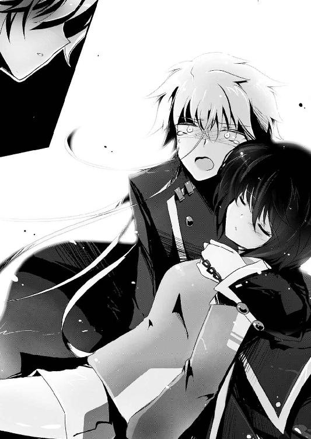
「......俺はお前だよ、佐藤光一」
自分と同じ顔をした、全ての元凶だった。
つづく
あとがき
いっつも武器が、日本刀。
初めましての方は初めまして、一巻からお付き合いしてくださっている方は、
全て──計画通りッ！
はい。最近あとがきのネタギレ感が否めねぇ柳実冬貴です。お久しぶりです。
そういえば年が明けてから初めての本になりますね。
遅ればせながら皆様あけましておめでとうございます！
そして今年もＲｅをよろしくお願いします！
今年の冬はなんだかやたらと寒かった気がしますね。私は夏よりも冬が好きなので、関東でも雪を見ることが多かった今年は冬を堪能できました。
雪も好きですねぇ。いいですよねー、白くてふわふわしてて。ぷにぷにしてたらもっとよかったんですけどね。
あ、そうそうぷにぷにと言えばこの冬で三キロほど太りました。腰回りがちょっと気になります......。最近は二歳の姪っ子が、私の腹を触っては「ぽんぽん！ ぽんぽん！ ぷにぷにー」とはしゃぐようになりました。
というか、姪っ子という生物はなんでああも可愛いのでしょうか。
チビランスといい勝負な気がします。
想像してみてください。
ドアの陰からじっとこちらを見つめてくるチビランスが、手招きするとテテテテテッとこちらに走ってきて、あなたのお腹をぷおぷお鳴きながら興奮した様子で触ってくるのですよ。
瘦 せ る 気 無 く な る で し ょ う ？
さて、近況報告はいいとして、本の内容をば。
このＲｅシリーズも早くも四巻目。佳境でございます。
なんだか今回は、下げて上げて下げて下げて上げて上げて最後にドーンと下げるみたいな内容でしたね。いろいろな真実が明かされたので、なかなかに重いお話になってしまったかと思われます。鬱展開、なんて言われてしまうのでしょうか。
でも安心してください。このお話は必ずハッピーエンドになる予定です。
といっても、全てがリセットされたり、死んだ人間が蘇る類のハッピーエンドにするつもりはありません。
きちんとみんなが幸せになる結末を迎えるはずなので、もう少しだけお付き合いしてください。
さて四巻の内容は本編と過去編に分けて構成しました。
過去編、一度はやってみたかったんですよね。三巻の時にちらりと出した明日菜とアルルのストーリーは、シリーズの企画の段階ですでに必ずやろうと決めていたものでした。
悲しく重いお話ですが、見どころはアルルと明日菜の絆でしょうか。明日菜さんのがんばりが、今の光一達の世界を支えていたと言っても過言ではありません。それから伏線、とまではいきませんが、一巻の頃から明日菜の光一の呼び方に気づいていた方は結構いたのではないでしょうか。
本編は、クリスマスイヴのお話です。過去編で明日菜さんが世紀末な世界でもがいている間に、現代ではサンタ服着たヒロイン達がキャッキャウフフしています。
原稿を書き終えたあと打ち合わせで、
「発売されるの四月なのにクリスマスで大丈夫か？」
「大丈夫だ」
「本編と過去編のギャップがすごいが......大丈夫か？」
「問題ない」
みたいなやりとりがあったのは言うまでもありません。今回も好きに書かせていただきましたとも、ハハッ！
今回は日常と非日常のどちらが大切か、という選択をテーマにしています。今までも何度も迷ったり落ち込んできたりしてきた光一ですが、今回は日常側でも翻弄されていろいろ大変です。
そして唐突に突きつけられた真実に、光一は......。
とまあ、あとがきから読む方もいらっしゃるかもしれないので、ここで多くは語りません。実はシェードの創始者が××だったり、『導きし者』の持ち主が××だったりと、いろんな事実が明かされました。
いよいよ、次がクライマックスです。
大切な人を奪われ、絶望を味わった光一。
そんな光一が、全てを救うために弾けます。
真実を知った付け焼刃は、はたしてどこへ向かうのか。
アルルを救うことは本当に叶うのか。
そして本の持ち主の目的とはいったい──。
最終巻、ご期待ください！
それでは、謝辞を。
内容とのギャップを承知の上で、マジでたまんねぇサンタ広美を描いてくださった一葉モカさん。毎度毎度毎度ご迷惑かけっぱなしの担当Ｔさん。お世話になった黒うさＰ様、トゥライ様、Ｔ社のＫ様、森井ケンシロウ様。ドラマＣＤに関わったスタッフキャストの皆様。いつも姪っ子をうちに連れてきてくれる姉夫婦。
そしてこの本を手にとってくださった読者様方に、たくさんの感謝を。
では、最終巻でお会いしましょう！
柳実冬貴
追記：東日本大震災の被災者の方々にお見舞い申し上げます。同時に、犠牲者の方々のご冥福をお祈りいたします。無事だった方も、どうかくれぐれもお気をつけください。
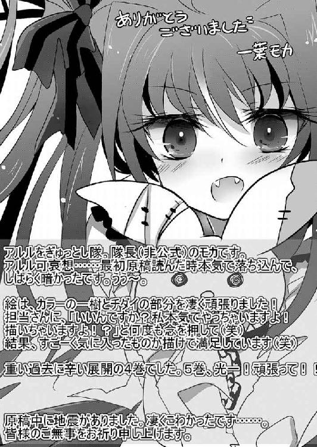
Re（アールイー）：４
バカは世界を救えるか？
柳実冬貴
平成23年11月10日 発行
発行者 山下直久
発行所 株式会社富士見書房
〒102-8144 東京都千代田区富士見1-12-14
http://www.fujimishobo.co.jp/
(C)2011 Touki Yanagimi, Moka Ichiyo/Fujimishobo